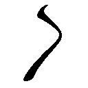

| "朝顔"ヒカルが地球にいたころ......(6) (ファミ通文庫) | |
| 野村 美月 | |
| (2013) | |
本作品の全部または一部を無断で複製、転載、配信、送信したり、ホームページ上に転載することを禁止します。また、本作品の内容を無断で改変、改ざん等を行うことも禁止します。
本作品購入時にご承諾いただいた規約により、有償・無償にかかわらず本作品を第三者に譲渡することはできません。
本作品は本文縦組で制作されております。ごらんになるリーディングシステムにより、表示の差が認められることがあります。
何故、あなたに無闇に冷たくあたるのだろうと、周りの人たちはみんな不思議がっていた。
あんなに美しくきらめいている人を、無関心な眼差しと棘を含んだ言葉で拒絶する理由があるのかと。
そう忠告されるたび、胸の奥が暗くざわめいた。
喉が嗄れるほど、大声で叫びたかった。
違う、違う、違うっ、本当は違うのだと。
わたしは、あなたの清らかな眼差しを避けたくなどなかった。
甘く薫るあなたの言葉に、最上級の微笑みで応えたかった。
けれど、ヒカル──
わたしがしたことは、あなたを忌み嫌い、この世で一番憎むことだった。「夏の野で出会う麗しいお嬢さんといえば、まず百合の花だね」
夏休みも中盤に入った八月。
扇風機しかない部屋で、額から汗を垂らしながら夏休みの宿題をしている是光の横で、ヒカルは涼しげに語っていた。
「熱をはらんだ緑の草むらの向こうから、清潔感ただようほっそりした姿を見せてくれると、夏の暑さも忘れちゃうよ。そうそう『万葉集』にこんな歌があるんだよ」
と、ふくよかな甘い声で口ずさむ。
「道の辺の草深百合の花笑みに笑みしがからに妻と言ふべしや──草深い中に咲く百合のようにあなたに微笑みかけたからといって、それだけで私をあなたの妻と呼んだりしてもよいものかしら、という意味だよ。ここでの百合は、きっとピンク色の可憐な姫小百合だね。姫小百合の〝姫〟は秘めごとの〝秘め〟を連想させて、愛らしいなかに官能的な雰囲気もあってドキドキしちゃうよ。ねぇ、是光も、そんなしかめっ面で公式を解いてないで、想像してみてよ。生い茂る草の陰から、きみをそっと見つめる女の子。目があった瞬間、その子が『気安くあなたの妻だなんて呼ばないでよねっ』なんて言いながら、頰をピンク色に染めるんだ」
「知るか」
是光は団扇で扇ぎながら、投げやりに答えた。
「つか暑苦しいんだよ、てめぇはっ。幽霊ならちっとはこの部屋、涼しくしやがれ」
「無理言わないでよ。ぼくがコスプレしかできない非力な幽霊だってことは、きみが一番よく知っているじゃないか。そうだ、テニスウェアを着てみようか。きっと避暑地にいる気分になれるよ。白樺の林を吹き抜ける澄んだ風を感じられるかも」
話すそばから半袖半ズボンの、目にもまぶしい白いテニスウェアに一瞬でおめし替えし、やわらかな薄茶色の髪をそよそよ揺らし、涼やかに微笑む。手首にあざやかなブルーのリストバンド、額にも同色のバンドをはめる凝りようだ。
「どう、是光、百合の香りがただよう夏の避暑地の風を感じている？」
ラケットを振ってみせるが、是光のほうへはそよとも風は吹かない。むしろ頭に血が上って、ますます体が熱くなった。
「もういいから部屋の隅で、口閉じて正座してろ」
「ひどいよ是光。せっかくの夏休みなのに、朝から宿題ばっかりして。夏休みの宿題は、夏休みが終わってから、女の子に見せてもらうものだよ」
「天使のように真っ白な笑顔で、下衆なこと言うなぁっ。だいたい俺がこの悪人ヅラで宿題見せろなんて言ったら、脅迫になっちまうだろうが」
ハーレム皇子と呼ばれて、女の子から差し入れをもらいまくっていたヒカルと、狂犬と呼ばれて恐れられている自分とでは、立場が違うのだ。
『おい、おまえ、宿題見せろ』
なんて言おうものなら、女の子は震える手でノートを置いて、走り去ってしまうだろう。
「えー、式部さんなら見せてくれると思うけど」
是光が、うっと声をつまらせる。
「それも、姫小百合みたいに頰をピンク色に染めて『し、仕方ないわね』って唇を尖らせながらね」
「し、式部のことは、言うな......っ」
情けないことに、体感温度がまた上昇してゆく。頰のあたりが火で炙られているみたいにカッカする。
先日の夜。クラスメイトの式部帆夏と学園のプールに忍び込んで、水をかけあったり、水中で追いかけっこをしたり──その他にもあれこれ恥ずかしいことをして以来、ヒカルはことあるごとに帆夏のことを口にし、是光の胸をくすぐったいような、むかむかするような、奇妙な感じにさせるのだった。
結果、視線をそらしてもぞもぞしたり、声を上擦らせたりしてしまう。
是光のそうした反応を、ヒカルが余裕の訳知り顔で見守っているのも癪に障る。
「ねぇ、是光。宿題なんかやめて、式部さんを誘って遊びに行こうよ。そうだ！ 葵さんにも声をかけて、ぼくと是光と葵さんと式部さんの四人で、Ｗデートなんてどう？ うわー、すごく楽しそう」
「それ、周りからは、俺が二股かけてるようにしか見えねーじゃねーか！」
「え！ 葵さんと式部さんと、二股かけるつもりなの！」
ヒカルがのけぞる。
「ちげー！ なに聞いてんだ！ んなことするわけねーだろ。てめぇじゃあるまいし」
「そうだよねー。あーびっくりした。けど、一度はっきりさせておきたかったんだけど、是光は葵さんのこと、どう思っているの？」
「ど、どうって......おまえの婚約者だろ」
「それだけ？」
「って、他になんかあるのか」
ヒカルが疑わしそうな顔で、ぐいぐい迫ってくるので、是光は焦った。
「葵さんのこと、可愛いなとか、守ってあげたいな、とか思ったりしない？」
「ま、まぁ、一番最初にツンケンしてた頃に比べると、別人みたく可愛いっつーか、表情がやわらかくなったっつーか、ぐっと感じが良くなったし......おまえの大事な女だから、なんかあったら力になってやりたいとは思うぜ」
「やっぱり、是光も葵さんのこと──」
ヒカルがまた、ショック！ という顔をする。
「だからそーゆーんじゃねぇって！」
「本当に？」
「おまえ、しつけーぞ。この前、俺が葵の彼氏役を引き受けたときは、『ぼくもそれがいいと思うよ』なんて、爽やかに余裕こいてたくせに」
するとヒカルは、急に頰をふくらませて、
「あれは表向きっ。それに葵さんも本当に困っているみたいだったし、ああ言うより仕方ないでしょう。内心は複雑だったよ。葵さんが是光と、フリでも恋人同士だなんて。そりゃ、葵さんの幸せを願う気持ちは噓じゃないし、是光はぼくの友達でヒーローで、どっちもぼくにとって大切な人だけど、けどけど、その二人に、ぼくの目の前でくっつかれるのは罰ゲームすぎっ。そもそも葵さんの恋人には、ぼくより顔がよくて、ぼくより声が綺麗で、ぼくより会話が軽妙で、ぼくより女の子の好きなものを熟知していて、ぼくより花言葉をたくさん知っていて、ぼくより──」
「わかった！ わかったから落ち着け！ それ以上近づいたら、俺の顔におまえの顔が、めりこむ！」
学習机を背に、是光は必死にヒカルを制した。
（やっぱりこいつ、わかりにくいっつーか、相当根暗だぜ）
「俺だって、友達が惚れてた女とどうこうなろうなんて、思ってねーよ。だいたい葵が、俺相手に、そんな気になるわけねーだろ」
「そうかな。是光、最近モテるし、カッコいいし」
「お、おまえ、またなに言ってんだっ！」
モテるなんて、中学時代女に避けられまくっていた自分からすれば、百八十度真逆な言葉で、背筋がぞわっとし顔が熱くなってしまう。
ヒカルがすねているような顔で、さらになにか言おうとしたとき、机の上で携帯が鳴った。
「げっ」
着信相手を確かめて、おかしな声を上げる。
よりによって、葵だ。
（くそっ、なんでこのタイミングで）
が、携帯の文字盤を睨みつけたとたん、呼び出し音は切れてしまった。
「へ？」
ぴくりともしない携帯電話を、気の抜けた顔で見おろす。
「なんだ、間違い電話か？」
「葵さんからだったね」
ヒカルが（やっぱり）というように、横目で見る。
（だーっ、女じゃねーんだから、そういうねちねちした目をするんじゃねー。あーくそ、これじゃ、葵にかけ直せねー）
「まぁ、あれだ......用があればまたかけてくるだろう」
ヒカルの視線が気になって、わざとそっけない口調で言って、携帯を机に置いたとき。
また、着信音が鳴り響いた。
「うおっ」
心臓が口から飛びだしかけたが、着信相手は葵ではなく、見覚えのない番号だった。
通話に切り替え耳にあてると、おずおずした声が聞こえた。
「あ、あの......赤城くん？ わかる、かな？」
「花里......？」
頭の中に、おさげに眼鏡の級長の姿が浮かぶ。すると、急に嬉しそうな声になり、
「うんっ。そ、そうです。花里みちるですっ。あっ、ご、ゴメンね。急に電話......しちゃって。びっくりしたよね。赤城くんの番号は、ほのちゃんから聞いて......」
なんで花里が、俺に電話なんかかけてくるんだ？ 連絡網とかそーゆーのか？ といぶかしく思っていると、みちるが何度か声をつまらせたあと、
「赤城くん、べべべ勉強会しない？」
と言った。
「勉強会？」
「そう。図書館で、一緒に夏休みの宿題をするのはどうかなって。ほのちゃんも呼んだから、三人で」
帆夏の名前を聞いて、またドキッとする。
「えっと、ダメかな？ 今、忙しい？」
「いや、ちょうど宿題してた」
「それなら、みんなでやったほうがはかどるよ。ねぇ、おいでよ、赤城くん」
熱心な誘いに、
「お、おう」
と答えると、ますます嬉しそうにホッとしたように、
「よかった。じゃあ、待ってるね。その、ほほほ、ほのちゃんも一緒にっ」
と図書館の場所を告げて、通話を切った。
「女の子と勉強会かぁ。それも夏休みらしいイベントだね」
と機嫌を直したらしいヒカルが、ほんわりと言う。
「なぁ、花里って、この間まで俺にびびってなかったか？」
「きっと、是光が凶暴なヤンキーじゃないってわかってくれたんだよ。それで式部さんとの仲を取り持とうとしてくれているのかもしれないね。女の子って、そーゆーの好きだし」
「な──」
慌てる是光に、
「ほらほら、女の子を待たせちゃダメだよ」
とヒカルが上機嫌で世話を焼く。
叔母の小晴に、図書館へ行くから昼メシはいらねーと伝えると、こるりを抱いた紫織子が聞きつけて、
「あたしも行く！」
と、声を張り上げた。
「いや、連れがいるから、しーこはまた今度な」
夏休みのはじめに、紫織子と帆夏とみちるの三人とプールへ行ったときの騒動を思い出し、はっきり告げると、紫織子は目をきらんと光らせて、
「誰と行くの？」
と、何度も尋ね、
「学校のやつ」
是光が言葉を濁すと、是光の腕を、弱からず強からずな絶妙のバランスで、きゅっとつかんで、
「あたしも行きたい。おとなしくしてるからー。ねぇねぇ、是光お兄ちゃーん」
と、そのまま腕をふるふる揺すっておねだりする。
「うぅぅ」
妹に、こんな風に頼まれると、是光は弱い。唸る是光を、紫織子の足元に降りた白猫のこるりが、クールな瑠璃色の瞳で、他人事のように眺めている。
と、そのとき、縁側のほうで、
「しーこちゃん！ ドッジボールの練習に行こー」
と声がした。
「ほら、友達が迎えにきたぞ。つきあいは大事にしろ」
「えー」
「しーこちゃーん！」
「大会には、応援に行くから」
「お兄ちゃーん」
まだ不満そうな紫織子を振り切り、是光は玄関から家を出た。
「ああ、頰をふくらませちゃってるよ。帰ったら、たっぷりサービスして機嫌をとらなきゃいけなそうだよ、お兄ちゃん」
「るせー」
◇ ◇ ◇
真夏の焼けつきそうな陽射しの中、学園の近くの公立図書館の自動ドアを通り抜ける。中は冷房がききすぎで、冷凍庫のようだ。
テーブル席でノートを広げている私服の帆夏を見つけ、緊張しながら近づいてゆき、
「よ、よお」
声をかけると、
「！」
帆夏がびっくりして立ち上がった。
椅子がガタン！ と音を立て、周りの注目を浴びて、真っ赤な顔で身を縮める。それから是光を上目遣いに見て、口をぱくぱくさせ、
「な、なんで赤城がいるの」
などと言う。
「は？ 俺、花里に呼ばれたんだが。三人で宿題しようって」
「みちるが!?」
帆夏が目を丸くする。
それから急にまたうろたえて、
「噓......っ！ だって、みちるは......」
と、もごもごつぶやく。
「花里から、俺のこと聞いてねぇのか？」
「あ、あたしは、図書館で夏休みの宿題しない？ って誘われただけで......」
帆夏はなにやら困っているようだ。
そのとき後ろで、
「赤城くん。来てくれたんだねー」
嬉しそうな声がした。
振り返った是光は、口を開けて惚けてしまった。
帆夏も驚きの表情を浮かべ、最後にヒカルが、「わぁ」と感嘆する。
外出するときはいつも制服だと言っていたみちるは、夏っぽいさらさらした布地のレモンイエローのワンピースに、フリルのついた白いカーディガンをはおっていた。首に、リボンの形をした小さなネックレスをつけている。
それだけではない。
眼鏡をかけてもいなかったし、髪もおさげの三つ編みではなかった。やわらかそうな焦げ茶色の巻き髪が、肩のあたりで、ふわふわ揺れている。眼鏡の下にあった大きな瞳はコンタクトにしたのか、今は覆うものもなく、はにかむように是光を見上げていた。「花里......だよな？」
つい、確認してしまう。
「うん、そうだよ。えっと......夏休みだから、ちょっと冒険......してみようと思って。に、にに似合わないかな」
「めちゃくちゃ可愛いっ！ 前のお下げに眼鏡も古風で真面目な女の子って感じでよかったけど、こっちもすごく似合ってるし、華やかさが増した感じ。清楚な橘の花が、甘い香りを振りまいているみたいで、くらくらしちゃうよ！」
ヒカルは大絶賛だ。
（つか......変わりすぎ）
声を聞かなければ、地味でお堅い眼鏡の級長と同一人物だと気づかなかったろう。
是光が驚きすぎて声をつまらせていると、同じように目をむいていた帆夏が、
「そんなこと、ないよ。似合ってるし、すごく可愛いよ。みちる」
と、ぎこちなく言った。
そうして、
「ね、そうだよね、赤城」
と、是光のほうを、心配そうに見上げる。
「えっ、ああ。そうだな。いい──と思うぜ」
帆夏の視線が、どこか思いつめたように真剣なのが気になって、歯切れの悪い声で答える。みちるは頰をピンク色に染めて、またはにかむような甘い目をした。
帆夏の表情が、対照的にこわばる。
「み、みちるってばっ、赤城が来ること言わないんだもん！ びっくりしちゃったよ」
「ごめーん、ほのちゃん。でも、赤城くんならいいと思って。えっと......それとも、マズかった？」
みちるが、おどおどする。
帆夏が口元を、きゅっと引き上げる。
「そんなことないって。赤城がいれば、ナンパ避けになるしね。ただ......本当に、驚いただけ」
いつもと同じ、さばさばした口調で言い、
「ほら、赤城もみちるに見とれてぼーっとしてないで、さっさと座ったら」
と、是光につっけんどんに言った。
別に見とれてたわけじゃと思ったが、帆夏がすぐに是光に背中を向けて、椅子に座ってしまったので、言いそびれてしまった。
是光も椅子を引き、もぞもぞと席につく。
「あ、是光！ そっちに座っちゃダメだよ！」
ヒカルがなにやら叫んだ。
みちるが是光の隣の席に、腰かける。
是光の正面の席に先に座っていた帆夏が、また頰を少しこわばらせた。
「あ～」
何故かヒカルが、手で顔を覆っている。
（この席のなにが悪いんだ？ 別に画鋲やジャムは仕込まれてなかったぞ）
さっきまで、みちるの変身っぷりを見て、綺麗だの可愛いだの最高だのとはしゃいでいたくせに、なにか言いたげな弱っているような目をしているのも、居心地が悪い。ケツがもぞもぞして、落ち着かない。
「赤城くん、数学の問題集、どこまで進んだ？」
みちるが恥ずかしそうに話しかけてくる。
「ああ、えっと」
問題集のページを、不器用な指先でめくって答える。
「わー。赤城くん、真面目に宿題してるんだねー」
とか、
「赤城くん。この問題、教えてもらってもいいかな」
など、みちるがささやくような小さな声で話しかけてくる。
隣に座っているので、自然と肩を寄せあう格好になり、是光が近すぎるような気がして遠慮して身を引くと、みちるもそれを意識したようにもじもじして、身を縮め、そのくせ、嫌ではなさそうにはにかむ。
是光のぎこちない説明にも、
「ありがとう。とってもわかりやすかったよー。えっと。じゃあこっちは」
と、また控え目に身を寄せ、尋ねる。
一方、向かいの席に座っている帆夏は、息を止めているかのように静かだ。唇をぎゅっと閉じていて、頰と肩をこわばらせて、辞書をめくりながら黙々と英文を訳している。
ときどき弱々しい目で、みちるの肩で揺れる髪やピンク色に染まった頰を見つめて、さらにか弱げな表情を浮かべる。
是光と、なるべく視線をあわせないようにしている様子で、是光から顔をぎこちなくそむけており、そのくせ是光がなにか言葉を発すると、肩をかすかに震わせる。
帆夏が席についてから一度も口を開いていないことが、是光は気になってたまらなかった。
（今まで勉強会とか誘われたことねーからよくわかんねーが、こういうもんなのか？ もっと和気藹々としてるもんじゃねーのか）
藹々どころか、えらく空気が重い。
ヒカルが空中から、困ったものだという顔で見守っている。
そういえばヒカルは、みちるは帆夏と是光の仲を取り持とうとしていると言っていなかったか？ そんな気配は全然無いのだが。
（いや。それは別に、いいんだけどよ）
一時間ほど過ぎた頃、みちるが席を立った。
「ちょっと、お手洗いにいってくるね」
みちるがいなくなると、是光と帆夏の間に、いっそう気まずい空気が流れた。
（っっ......なんか話しかけたほうがいいのかな......。けど、宿題に集中してるみてーだし......。なんて声をかけたらいいのか......）
「あー......花里、変わったよな」
他に話題が見つからず、ぼそりとつぶやく。
すると、帆夏はまた肩をぴくりとさせ、
「......そうだね」
うつむいたまま答えた。
そのあと二人とも黙ってしまい、是光が、この話題はまずかったのかとしかめっ面で思案していたとき、帆夏の声がした。
「みちる......あたしがいままで、もっとお洒落しようって誘っても、似合わないからこのままでいいよーって言ってたのに......」
なんだか花里みちるが綺麗になったことに複雑な思いを抱いているような、含みのある口調だった。
唇をきゅっと嚙んでまた黙ってしまったと思ったら、立ち上がって、荷物をざかざかとまとめ出し、
「あたし、ブログの更新したいから、帰るね」
「って、おい」
焦って立ち上がると、小さな声で、
「......あたしたち、少し距離を置いてみたほうがいいかもしれない」
と、ささやいた。
はぁ？ なに言ってんだ、こいつ。
突然謎の言葉を突きつけられて、啞然とする是光を置いて、帆夏は鞄を肩にかけて、うつむいたまま早足でいなくなってしまった。
なんなんだ、一体！
「わからねー、さっぱりわからねー。おい、ヒカル、おまえ今のあいつの台詞、翻訳できるか？」
頭上を仰ぎ、女心のスペシャリストに尋ねる。
けれどヒカルも、
「うーん、できないことはないけど、なんだかその......複雑になってきちゃってるし、女の子の友情って意外とやっかいで、この展開は、ぼくも予想外だったというか......友情と恋愛のどちらを優先すべきかは、ぼくも現在悩んでいるところで」
などと唸っているだけで、役に立たない。
みちるが戻ってきて、
「えっ、ほのちゃん、帰っちゃったの？ じゃ、じゃあ......わたしと赤城くんの二人きりだけど......その、ご、ごはんでも食べに......」
「悪ぃ。俺も帰るわ」
と、是光も席を立った。
「女って、マジわかんねー」
出口に向かって、苦い顔で歩きながらつぶやく。
プールでは、あんなに楽しそうに笑っていて、是光の胸に顔をそっと押しつけて、
──ちゃんと守ってよね。
などと甘い声でささやいたのに。
距離を置いたほうがいいとは、一体どういうことか？
ヒカルが困り顔で見つめる中、顔をこわばらせ、前屈みの猫背で図書館をあとにしたとき、ポケットで携帯電話が震えた。
引っ張り出したとたんに、震えが止まる。
受信を確認してみると、また葵からだった。
是光の目つきが鋭くなる。
「やっぱ、葵になんかあったんじゃ」
ヒカルも今度は、おかしなヤキモチを焼くこともなく、表情を曇らせた。
「葵さんに電話してみて、是光」
その場でかけ直してみるが、留守電に切り替わってしまって出ない。
確か今日は、喫茶店のバイトは休みのはずだ。
「家に行ってみるか」
ヒカルがうなずくのを確認し、歩き出した。
◇ ◇ ◇
高い塀に囲まれた高級そうな邸宅がそびえ立つ住宅地を、鋭い目つきで進んでゆく赤い髪のヤンキー風の是光は、周囲の上品な風景から浮いていて、不審人物として警察に呼び止められかねないムードを漂わせていた。
本人は、ただ真面目な顔をしているだけなのだが。
ここへ来るまで葵に何度か電話をしたが、やはり留守電になってしまう。
（バイト先でなんかあったのか？ それともヒカルの兄貴がまたなんかしてきたのか？）
葵に対して、ヒカルが勘繰るような不埒な感情は持っていない。ただ、ヒカルの件でこれまで葵と深く関わってきたせいだろうか。
葵のことをできるかぎり守ってやりたいと思う気持ちが、ヒカルに頼まれたからではなく、すでに是光自身の気持ちになっていることは否定できなかった。
葵は真っ白で綺麗で、か弱い感じがするから......。
是光がはじめて、可愛い、と思った女だから......。
そのとき、是光の耳に険しい声が聞こえた。
「いいかげんにしなさい、葵」
思わず足を止める。
葵の家の前で、背の高い、知的で大人びた顔立ちの少女が、尋常でない様子で声を荒らげている。
「部屋にいるのは、わかっているのよ。どうして居留守なんて使うの？ その気になれば、あなたの部屋の前までいって、ドアの鍵を開けさせることだってできるのよ」
（斎賀！）
「朝ちゃん！」
ヒカルも宙からつぶやく。
携帯に向かって鋭い口調で話しているのは、ヒカルの従姉で生徒会長の斎賀朝衣だった。
「なにをすねているの？ 黙っていたらわからないわ。わたしは、その肥満気味の猫の鳴き声が聞きたくて、電話をしているわけじゃないのよ。だいたいアルバイトのことだって、わたしに内緒で決めて──葵っ」
電話が切れたらしい。
朝衣が細い眉をぎゅっと寄せ、苛立っている目で携帯を睨みつける。それからまた、番号を呼び出してかけ直したのだろう。携帯を耳にあて、ぴりぴりした様子で唇を引き結んでいたが、葵が出ないようで、どんどん険しい顔つきになってゆく。
「っっ、なにを考えているのよ......葵」
「葵と喧嘩したのか、朝ちゃん」
是光は朝衣のほうへ歩を進めながら、尋ねた。
朝衣が肩を震わせ、是光のほうを見る。すぐに目を刃物のように鋭く細め、
「きみに朝ちゃんと呼ばれたくないと、あと何回言えば伝わるの。三歩歩けば忘れる鳥頭なの？」
と、凍りつくような声で言った。
「わめくなよ。そんなに目を尖らせてるから、葵もびびって会えねーんじゃねーのか」
朝衣の瞳に、冷ややかな光が閃く。
「葵のことも、わたしのことも、鳥並みの脳味噌の野良犬には関係ないわ。そもそも、何故きみが、葵の家の周りをうろついているの？ これ以上葵へのストーカー行為を続けるなら、山奥の保健所へ放り込むわよ」
顎を反らして睨みつけるが、顔色があまりよくない。ひょっとして、また無理をしているのだろうか？ ヒカルが心配そうに朝衣の顔をのぞき込んだとき、朝衣の上半身がヒカルの体をすり抜け、ふらりと傾いた。
「って危ね──。おまえ、また寝てねーな！」
慌てて抱き留めると、是光の胸に寄りかかる体勢になった朝衣は、屈辱に身を固くしたようだった。すぐに是光を突き放し、
「っっ、睡眠は──足りているわ。きみの下品な顔を見たら気分が悪くなっただけ」
と、えらく冷え冷えとした口調で言った。
「足ふらついてるじゃねーか、また倒れるぞ」
ヒカルも朝衣の隣で熱心に「そうだよ。朝ちゃん。休んだほうがいいよ」と話しかけている。
「余計なお世話だと言っているでしょう」
朝衣が、長い黒髪を鞭のようにぴしりとしならせ顔をそむける。
そのとき、朝衣の携帯電話が震えた。
着信相手を確かめて、端整な横顔をゆがめ、一瞬だけ疲れているような表情を浮かべたあと、自分を叱咤するような凜とした厳しい眼差しになり──耳に当てる。
「ええ......気持ちは変わらないわ。あなたが降りても、わたしは一人でもやり遂げるし、勝算がないわけじゃない。朝顔姫から字をいただくことができれば、風はまたこちらに吹くわ。いいえ、吹かせてみせる」
〝朝顔姫〟と、朝衣が小声で口にしたとたん、ヒカルがハッとしたように瞳を揺らし、暗い顔になった。
是光も（なんの話をしてるんだ？）と、つい耳をすませてしまう。
朝衣が是光を無視して歩き出す。
黒塗りの外国車が、すべるように現れ、朝衣の前で止まり、運転手がドアを開ける。それに乗り込むと、朝衣は是光の視界から消えてしまった。
あとには車が吐き出した排気ガスの香りだけが残った。
「挨拶もなしかよ！ 相っ変わらず感じ悪ぃ女だな！ ああ、てめぇになんかもう土下座されたって関わるもんか！」
こめかみを引きつらせて、断言したとき。
「是光」
ヒカルが突然シリアスな声で言った。
「うぉっ、な、なんだよ」
はりつめた表情に、思わず身を引く。
ヒカルは心底困っているような真剣な眼差しで是光をじっと見つめると、いきなり是光の足元にまでおりてきて、膝をそろえて地面に座り込み──そこからまた真面目な──思いつめた瞳で見上げた。
「きみに、大事なお願いがあるんだ」
「おいおい、道路のど真ん中にしゃがみ込むなよ。つか、おまえの頼みなんていまさらで、どうせ女のことだろう」
わかってるから立て、と言いかけたとき、ヒカルが深々と頭を下げた。
「どうか、ぼくと朝ちゃんの最初の約束を、ぼくの代わりに、きみに叶えてほしい」葵の家の前で、下品な野良犬（是光のことだ）に出くわした翌日、朝衣は午前中の早い時刻に家を出た。
考えたいことがあったので、運転手が車を出そうとするのを断り、閑静な住宅地を、背筋を伸ばし一定の歩幅でカツカツと進んでゆく。
思考がゆきづまったとき、よくこうして一人で道を歩く。そうすると問題点が整理され、解決の糸口が見えてくる。
けど、夏の太陽はすでにアスファルトから陽炎が立ち上るほどの暴力的な熱を発散させており、朝衣から冷静さを奪ってゆく。
ここ数日、朝衣の最大の関心事である帝門の後継者問題に絡む勢力抗争は、波乱づくしだった。
帝門の当主の前妻であり一朱の母である弘華を支持する薔薇派と、後妻の藤乃を支持する藤派──二つの勢力はこれまで半々で、朝衣は藤派を次の主流にすべく、地道な活動を続けていた。
当主の血を引く子供は、現時点では長男の一朱しかいない。しかし一朱が当主になれば弘華とその実家である右楯が権勢を振るうことになる。弘華の苛烈で執念深い性格は有名で、おとなしい一朱が当主になるのはともかく、あの母親に権力を持たせるのは問題があるのではと、不安がる者も多かった。
そんな層を、朝衣は藤側に取り込んでいった。
当主の子供は、一朱だけ。
はたしてそうか。
藤には切り札がある──。
そうささやいて。
帝門を経営面から支えてきた頭条が藤についていたこともあり、成果は得られていたのだ。
ところが、ここにきて、薔薇のほうへ大きく人が動きはじめた。
きっかけは、一朱が公の場で母親を黙らせたことだった。
これまで一朱は、人は良いが、おっとりぼんやりした典型的な良家のぼんぼんと見られていた。
いや、そう見せていた。
それが、帝門の関係者たちが集まるパーティーで、帝門の傘下企業の社長のささいな失言に切れまくり、会場に響き渡る声で怒鳴り散らす母親を静かに諫め、場をおさめてみせたのだ。
この一件で、一朱は母親の言いなりのぼんくらではないことを帝門の関係者に知らしめた。
ならば、長男の一朱が跡取りとなることに、問題はない。
朝衣にとって最大の誤算は、頭条の当主である雅之までが、一朱の側についたことで、そのことを、頭条の跡取り息子の頭条俊吾は、こぶしを机に打ち付けて悔しがっていた。
『一朱は、人の上に立てる人間ではない。本性は右楯の蜘蛛──六条だ。けど父は、中身がどうであれ人前で本質を隠し通す能力があるのなら、それでかまわないという。流れは一朱に向いている、頭条が支えるべき帝門の次期当主は、一朱だと』
一朱の残酷さ。
内に秘めた狂気。
それを朝衣は、目の当たりにした。
葵に執着している一朱が帝門の当主になれば、葵は無事ではすまない。
それに、ヒカルのあの秘密も──一朱に暴かれてしまうかもしれない。
「......っっ」
心臓を冷たい手で強く握りしめられたような感覚に、思わず呻く。
ヒカルが命がけで隠し通してきた──そのために命を落とした、あの秘密を一朱に悟られたら、一朱は嬉々として暴き、晒し、貶め、傷つけるだろう。
ヒカルも、ヒカルが残したものも、罪にまみれ真っ黒に穢される。
（それだけは、絶対に避けなければ。一朱に権力を与えてはいけない。たとえ刺し違えてでも、わたしが盾になり剣になるわ）
斎賀の両親は、朝衣が帝門の権力闘争に首を突っ込むことを、快く思っていない。
ただでさえ孤立無援の、ぎりぎりの状況だというのに、葵が急に朝衣を避けるようになった。
左乙女の屋敷を訪ねても、出かけていていないというし、中で待つと言っても、それは困ると使用人に止められる。
葵の両親も困っている顔で、
「すまんね、朝ちゃん。今日は帰ってくれないか」
「葵も、難しい年頃だから。本当にごめんなさいね、朝ちゃん」
と謝る。
居留守を使っていることが丸わかりで、葵の携帯に電話をしても、聞こえてくるのは葵の飼い猫の、ぶみぶみという鳴き声ばかりだった。
ならば葵がバイトをしている喫茶店に直接出向いても、オーダーを取りに来るのは別の店員で、葵は朝衣と視線をあわせようともしない。幼げな唇をきゅっと嚙み、青ざめた頰をこわばらせ、頑なな表情で、朝衣の前を通り過ぎてゆく。
声をかけても、
「仕事中ですからっ」
と言って、顔をそむけ足早に去る。
仕事が終わったところを待ち伏せして声をかけても、
「急いでいるんです」
と言って、すぐに車を出してしまう。
まるで、ヒカルが亡くなった頃のようで、あの頃の葵も全身を鉄の鎧で覆ったみたいに張りつめ、身構えていた。
それでも、朝衣を避けるようなことだけはなかったのに。
葵がなにを考えているのか、わからない。
葵のことは、子供の頃から知っているのに、こんなことははじめてで、朝衣は苛立っていた。
きっと赤城是光の影響に違いない。
葵はあの野良犬に、なにか吹き込まれたのだ。
そうでなければ、葵が朝衣に対してあんな反抗的な態度をとる説明がつかない。
頭上からじりじりと照りつけてくる夏の日射しは、あの傍若無人な男そのものだった。
不快で、暑苦しくて──理性的であろうとする頭を、怒りで熱く燃やす。
（あんな下品で不作法な男がヒカルの友達だなんて、葵は信じてもわたしは認めない）
そう、ヒカルが魂のすべてで求めたものも、ヒカルが何故、あらゆる花を置き去って、あんな風に命を落とさなければならなかったのかも──あの野良犬が知るはずはないのだから。
幼い日、白く綺麗な肌を疵だらけにして、静かに朝衣を見つめていたヒカル。
──朝ちゃん......ぼくはね、泣いてはいけないんだよ。
力のない儚い少女のようだった姿と、決して透明な雫をこぼすことのない淋しそうな瞳が──あの日感じた絶望的なまでの無力感が、憤りとともに脳裏によみがえり、胸に狂おしい痛みが突き上げた。
「......あの日、ヒカルと交わした約束のために、わたしは引き下がるわけにいかない」
口に出し、低い声でつぶやく。
打つ手はない──と、電話で弱音を吐いていた頭条俊吾。
男になんて最初から頼る気はなかったけれど、惰弱すぎる。
まだ最後の手段が残っているというのに。
帝門の勢力争いに多大な影響を持つ五ノ宮家。その当主のもとへ、ここ数日、朝衣は通っている。
あの〝朝顔姫〟から、後見の証である文字をいただくことができれば──。
そうすれば流れは──変わる。
降り注ぐ日射しが勢いを増す。
本当に、夏の陽は不快だ。
また赤城是光の顔がちらつき、体の内側までじりじりと焼かれているような苛立ちと嫌悪が込み上げた。
あの犬が口にすることなんてみんな噓に決まっている。ヒカルは軟弱に見られていたけれど、深淵の底に沈めた本心を、他人に語ることはなかったし、どれほど苦しくても絶望しても、決して救いを求めることはしなかった。
そのヒカルが、あんながさつな犬に頼み事をするなんて、ありえない。ヒカルが自分の心をわけて、誰かに託すなんて。
けれど、もし。
万が一にもあの犬が、ヒカルの友達だったとしたら。
（わたしはあの犬を殺すかもしれない）
息苦しさに顔をゆがめ、汗をぬぐった手をおろしたとき──。
朝衣の目に、この世でもっとも不快なモノが映った。
朝衣が目指す、五ノ宮の屋敷。
そのしっかりと閉じられた、古い木の門の前に。
朝衣がたった今、殺意を抱いた男が立っている。
あざやかな赤い髪に日の光を反射させ、むっつりと口をへの字に曲げて、燃えるような目で朝衣を見すえ、その男が──いや、その犬が、吠えた。
「ヒカルの代理人として、ヒカルとおまえの約束をはたしにきた」
◇ ◇ ◇
──朝ちゃんは、五ノ宮の屋敷に現れるはずだよ。
と、ヒカルは真剣な眼差しのまま是光に告げた。
昨日。この浮気でお気楽な皇子様は、道のど真ん中に座り込み、なめらかな白い額を地面につけてみせたのだった。
『お願い、是光。ぼくと朝ちゃんの一番最初の約束を叶えて』
実際のところ幽霊のヒカルの膝も頭も、地面に押しつけたとたん、ずぶずぶとめりこんでしまって、土下座と呼ぶにはシュールすぎる光景で、
『わかったっ、わかったから、顔を上げろ』
と、是光は汗をかきながら繰り返したのだった。
これまで是光をさんざん下品な野良犬扱いしてきた朝衣に関わるなんて、気が進まない。けど、能天気なヒカルにあそこまで真剣に頼まれたら、断れない。
こうして、是光はヒカルに言われるまま先回りし、朝衣を待ちかまえていたのだった。
（くそっ、嫌なことは、とっととすましちまうにかぎるぜ）
朝衣は汚物を見るような目で、是光を睨んでいる。何故、是光がこんなところにいるのか。嫌がらせのつもりかと苛立っている目だ。いや、是光の存在そのものを、抹殺したがっている目だ。
是光はよほど、（俺だって朝っぱらから、おまえの顔なんて見たくなかったぜ）と言ってやろうかと思ったが、横でヒカルが真剣な眼差しで見守っているのが目に入り、
（くぅっ）
と心の中で唸って、棘だらけの感情を飲み込み、朝衣の鼻先に一枚の紙を突きつけた。
「とりあえず、この通りつきあってもらうぜ」
朝衣の氷みたいな目が、紙の端から端まで、なめるように動く。
祖父の書道教室で、横長の和紙に細い筆で書き綴ったのは、
・山へツチノコを探しにゆく。
・川で河童を釣る。
・丘でＵＦＯと交信する。
・夏眠中の雪男に、もふもふする。
等々、延々続く〝夏休みの予定表〟だった。
朝衣の顔が、しだいに赤く染まってゆく。
それが羞恥ではなく、怒りの表情であることは、つり上がった眉や、わななく唇や、冷え冷えとした目つきから、はっきり伝わってくる。
「小学生の頃、ヒカルと約束しただろう」
朝ちゃんは、小学三年生までサンタクロースを信じている子だったとヒカルは言っていた。夏休みのスケジュール表に、ツチノコを探しにゆくとか、河童を釣りにゆくと書き連ね、一緒にツチノコをつかまえて繁殖させて、ツチノコパークを作ろうと話し合ったのだと。
完全無欠の冷徹生徒会長の朝衣にとっては、黒歴史に違いない。
以前、朝衣が倒れて公園で介抱したときに、是光がしつこく追及したら、頰を叩かれた上に警察に痴漢として突き出された。
朝衣が冷気をただよわせて、スケジュール表をつかむ。
ぐしゃりという音のあとに、びりっという音が続く。朝衣が両手で破いたのだ。さらに、破いて破いて破いて、細切れにする。
「あ～。せっかく是光が心を込めて、書いてくれたのに」
ヒカルが嘆くが、朝衣の行動なんて予想済みだ。
「残念だったな。コピーをとってあるんだぜ」
と、別の紙を突き出す。
朝衣がそれもつかみ取り、破く。
「まだあるぜ」
と、是光は次々、コピーを出してゆく。
朝衣がシベリア凍土のような目つきで、それをつかんでは、びりびり引き裂いてゆく。是光と朝衣の足元に、細切れになった紙片が雪のように散らばる。
そんなことが延々続き、朝衣が肩で喘ぎはじめる。
「いい加減にして」
「てめぇこそ、観念しろ」
「何故よりによってきみと、ツチノコなんか探しに行かなくてはいけないの」
「朝ちゃん、是光はぼくの友達だよ。ぼくの代わりに、ぼくと朝ちゃんの約束を叶えてくれようとしているんだよ」
ヒカルが傍らで、必死の眼差しで懇願する。是光も、真顔で言ってやった。
「俺がおまえにかまうのは、俺がヒカルの友達だからだ。ヒカルに、おまえとの約束を叶えてくれって、頭を下げて頼まれたからだ。ヒカルはおまえとツチノコを探しにいけなかったことを、ずっと気にしてたんだぞ！」
是光がそう叫んだとたん、朝衣の目の奥に冷たい刃が閃き、瞳が憎しみに凍りつく。
前からそうだった。
是光が、ヒカルの友人だと主張するたび、朝衣は是光をくびり殺したそうな顔をする。
散らばる紙片を踏みつけ、仁王立ちになった朝衣が、吹雪が舞い散りそうな冷たい声で叫ぶ。
「きみなんかヒカルの友達じゃないわ！」
朝衣がぶつけてくる剝き出しの憎しみに煽られて、是光も絶対零度の氷の矢をはじき返す勢いで、叫び返す。
「おまえがどう思おうと、俺はヒカルの友達だ！」
お互いぴりぴりした表情で、火花を散らしあったところへ、
「あのっ」
たまりかねたような声が、聞こえた。
長々と続く木の塀の勝手口から、エプロン姿の女性が顔を突き出している。
「うちの前にゴミを散らかさないでください。お掃除が大変なんですから」
「！」
「！」
是光と朝衣が、同時に声を失う。
「申し訳ありません」
朝衣が屈辱に頰を染め、
「悪ぃ。ちゃんと片づけるから」
と、是光がかがみ込む。
朝衣も一緒に散らばる紙を拾い集める。そうしながら「きみのせいよ」と、恨みのこもる口調で言う。
「なんだと、てめぇが破りまくったんだろーが」
と是光が言い返し、ヒカルが、
「ああ、もう喧嘩しないで」
と両手を組み合わせて懇願したとき。
ギィーっと木のきしむ音がして、屋敷の正門が開いた。
朝衣がしゃがみ込んだまま、ハッと顔を上げる。
是光も首をひねった。
門の前に立っていたのは、涼しげな萌葱色の着物に銀の帯を締めた、品の良さげな小柄な老女だった。背筋が綺麗に伸びたその女性が、おだやかな、懐かしそうな眼差しで是光のほうを見て言った。
「ヒカルさんのお友達というのは、あなた？」◇ ◇ ◇
広々とした庭には、青や紫の朝顔が咲き乱れていた。
建物の柱にも簀の子にも、若々しい緑の蔓が這い、朝顔が丸い花弁を広げている。庭の端に、石で囲まれたスペースがあり、そこだけ背の低い草木が植えられている他はすべて朝顔で、縁側にも朝顔の鉢がいくつも並んでいた。中には、花びらの先が尖っていたり、金魚の尻尾のようにひらひらしていたりと、変わった形のものもある。
（これ、全部朝顔か？ すげーな......）
縁側に面した畳の部屋に通され、そこから庭を見渡しながら、是光は息をのんだ。
ヒカルと違って花を愛でる趣味などない是光にも、色鮮やかで凜とした朝顔の群れは圧巻で、目を吸い寄せられる。
先ほど是光たちに「ゴミを散らかさないでください」と注意した女性が、お茶を運んできた。お茶請けは何故かカブとキュウリの漬け物だが、甘いものが苦手な是光にはありがたい。
是光の隣では、不機嫌そうな目をした朝衣が、膝をそろえ背筋を伸ばしており、向かい側に、是光たちを屋敷に招き入れた老婦人が座っている。
小柄だが、不思議な存在感をただよわせた女性だった。しゃんと伸びた背筋や、きりっとした口元は、芯の強さを感じさせる。
彼女は五ノ宮織女と名乗った。この朝顔屋敷の主人で、孫夫婦と暮らしているという。
「ヒカルさんは、子供の頃から夏になると、ふらりと現れて、その縁側で頰杖をついて朝顔を眺めていたのよ。まるで恋人でも見つめるような、うっとりとした幸せそうな顔でねぇ」
と、愛おしそうに、懐かしそうに、目を細める。
ヒカルは、織女の言葉のまま縁側の端に足を下げて腰かけ、両手を頰にあて、唇をほころばせ、優しい眼差しで朝顔の群れを見つめていた。やわらかな薄茶色の髪に、光があたって金色に透きとおっている。白い肌はますます白く、唇はほのかに赤く、手足は細く、顔立ちは少女めいて優しく、まるで天使のようだった。
「ヒカルさんは、澄んだ目をした賢い、優しい子だったわ......。今年もまたヒカルさんに会えるのを楽しみにしていたのよ。なのに、こんなに早くに亡くなるなんて」
織女の表情が曇る。
朝衣もまた、膝に置いた手をそっと握り、暗い顔で目を伏せた。それを見て、是光も胸の奥が擦れ、えらくしんみりした淋しい気持ちになってしまった。
（ヒカル、おまえはここにいるのにな......。今も、そんなとろけそうな顔で花を眺めているのにな。おまえの姿は、他のやつらには見えないんだ......）
そのことに鼻の奥がツンとして。
（やべ、目から塩水が垂れそうだぜ）
この涙もろさは、いい加減どうにかしたい。
朝衣に気づかれないように、必死に目に力を込める。
織女が、哀しそうに続ける。
「ヒカルさんのお父様も、さぞ力を落としていらっしゃるでしょう。ヒカルさんは、最愛のかたの忘れ形見でしたから」
（最愛のかたって、ヒカルの母ちゃん......か？）
本妻ではなく、愛人だったという。
赤ん坊のヒカルを抱いた若い女性の写真を、ヒカルの部屋で見たことがある。ヒカルにそっくりの、美しい人だった。
ヒカルは家族の話をしたがらない。けど、母親が亡くなったあと、幼いヒカルを自分のもとに引き取って育てたということは、織女の言葉どおり、ヒカルの父親はヒカルを産んだ女性に愛情を持っていたのだろう。
たとえ立場は愛人でも。
突然、目を伏せていた朝衣が静かに顔を上げた。
「桐の花は失われてしまいましたが、伯父のかたわらには、まだ藤の花があります」
真剣な眼差しで織女を見つめ、強い意志のこもる口調で言う。
「伯父の愛する藤が、この先もたおやかに咲き続けるように、ぜひ織女様の一字をいただきたいのです」
（織女──様、だって？）
年上の頭条ですら「クン」呼びの朝衣が、えらくへりくだっていることに、是光は驚いた。
（おい、このばあさん、そんなに偉いのか？）
ヒカルのほうをうかがうが、ヒカルは心配しているような、困っているような表情で、朝衣を見ている。
織女が静かな声で答える。
「ごめんなさい、朝衣さん。何度も申し上げているように、わたしは老い先短い身の上よ。朝衣さんが望むような働きはできないわ」
朝衣は引かない。
空気が張りつめるほど真剣な眼差しで、訴える。
「いいえ。〝朝顔姫〟を知らない人など、わたしの周りにはいません」
（朝顔姫って、携帯でも言ってたけど、なんなんだ？ それに、字が欲しいってどういうことだ？ 斎賀のやつ、なにやってんだ？）
耳を凝らすと、体も自然に前のめりになった。
そのとき、縁側から吹き込んだ風が、是光が持っていたスケジュール表のコピーをふわりと舞い上がらせた。
朝衣が容赦なく破りまくったため、残っていたのはたった一枚だった。
その最後の一枚が、是光の伸ばした手をすり抜け、織女の膝にひらりと落ちる。
是光が口を「げ」の形に開け、朝衣が頰を引きつらせ、ヒカルが目を見張る。
織女は皺のある細い指でコピーをとりあげ、視線を落とした。
目を軽く見開き、不思議そうに──興味深そうに、じっくりと眺めたあと、皺の刻まれた小さな顔を上げた。
「これは、赤城くんが書いたの？」
「あ、ああ」
「申し訳ありません、織女様。つまらないものをお目にかけてしまって。それは彼がふざけて書いたもので」
（おい、なんでおまえが謝ってんだ、斎賀。しかもつまらないものだと）
是光がムッとしたとき、織女がしみじみとつぶやいた。
「とても良い字ねぇ......」
「えっ」
朝衣が惚ける。
是光も褒められたのだとわかって、目をむいた。
ヒカルが自分が褒められたみたいに、嬉しそうににっこりする。
織女はスケジュール表に書かれた文字を、さらにしげしげと眺めながら、
「まっすぐで力強くて、芯の通った美しい字だわ。筆でこんなに綺麗な字を書けるなんて、今の若いかたには珍しいわね」
褒められるのに慣れていない是光は、頰がじわじわと熱くなってきた。
「あ、うち、じいさんが書道塾をやってて、ガキの頃から筆で書いてたから」
と、ぼそぼそと答える。
織女はうなずいて、「そう。道理で、良い字だわ」と繰り返しつぶやいて、是光の頰をさらに熱くした。
隣で朝衣が不満そうに、唇を引き結んでいる。
「織女さんは書道が趣味で、自分で字を書くだけじゃなくて、書道展へもよく足を運んでいるし、審査員もしてるんだよ。そんな人に認められるなんて、是光はやっぱりすごいなー」
と、ヒカルまで胸をむずむずさせることを言う。
（バカ、よせ。クソ恥ずかしいだろ）
「赤城くん。よかったら、なにか字を書いてみてくれないかしら」
織女の言葉に、是光が焦り、朝衣が目を尖らせたとき。
「失礼します」
家の中だというのに、外出するような派手なミニスカートに厚塗りのメイクをした若い女が、襖を乱暴に開けて部屋に入ってきた。
「お薬の時間ですよ、お祖母様」
つっけんどんに言い、小さなお盆に載せた湯飲みを、織女のほうへずいっと差し出す。
「そろそろお休みになられたほうがいいんじゃありませんか。無理をするとまたお体にさわりますよ」
言葉では気遣っているようだが、是光たちのほうへ迷惑そうな視線をちらちら向け、帰ってほしいと意思表示する。
織女が困ったものだというように、顔を少しだけしかめる。
「まぁ、もうそんな時間なのね」
「長居をして申し訳ありませんでした。織女様の体調が良いときに、また参ります」
朝衣が丁寧に、頭を下げる。
お茶を持ってきた女性が棘のある眼差しで朝衣を見るが、織女はおっとり微笑んで、
「ええ。また遊びにいらして。赤城くんもぜひ」
と、是光のほうへ顔を向けた。
朝衣がキッと眉をつり上げる。
織女の予想外の好意に、是光もうろたえながら、
「あ、ああ」
と、答えた。
そんな是光を見てヒカルはやっぱり嬉しそうに口元をほころばせたが、そのあと織女にお茶を運んできた女性のほうへ目を向け、気がかりそうに眉根を寄せていた。
五ノ宮の屋敷を出るなり、朝衣は苛立ちを全開にし、肩をいからせ、手を固く握りしめ、唇を嚙んだ。
「なぁ、用はすんだのか？ 暇になったんなら、こっちの用につきあえ。ツチノコ探しに行こうぜ」
是光としては、普通に話しかけたつもりだった。
が、
「うわっ、是光、今そんなこと言ったら」
ヒカルが慌てて止めに入り、その直後に、朝衣に思いきり足を踏まれた。
「痛っ！」
右足のつま先を狙いすましたように、かかとで踏みしだかれ、脳天にまで痛みが突き上げる。
「野良犬につきあう時間なんて、○・〇一秒もないわ」
氷の刃のような言葉を投げつけるなり、足を押さえてうずくまっている是光を置いて、ずんずん歩いていってしまった。
「くっそー、可愛くねー！ 足痛ぇ！」
目尻に涙をにじませてわめく是光のかたわらで、ヒカルがふわふわ宙に浮きながら、額に手をあてていた。
「今のは、朝ちゃんじゃなくても、たいていの女の子は怒るよ」
◇ ◇ ◇
まだ太陽が、ぎらぎらと光を放出している帰り道。
朝衣が置かれている状況を、ヒカルが真面目な顔で説明してくれた。
「今、帝門の内部で、父の前妻と後妻の間で勢力争いが起きているんだ。多分、父の病状があまり良くないのだと思う......」
「おまえの父ちゃん、病気なのか？ どこが悪いんだ？」
「心臓が少しね......。二年ほど前に手術をしたのだけど、ひょっとしたら再発したのかもしれない」
ヒカルの声が沈む。
「そいつは......心配だな」
「うん」
ヒカルは翳りのある顔でうなずいたが、普段から家族の話をしないので、父親の病状について実際はどう感じているのか、よくわからなかった。
少しの間黙り込んだあと、ヒカルが説明を続ける。
「前妻を支持する人たちを薔薇派。後妻を支持する人たちを藤派っていうんだけど、朝ちゃんは藤派なんだ」
そのため、後妻に味方する人たちを集めているのだという。帝門の一門の中で、高い格式と発言力と、多くの株を所有する五ノ宮は、特に取り込んでおきたい相手なのだと。
「って、高校生が夏休みにやることじゃねーだろ、それ」
是光はあきれた。
海とか花火とか野外コンサートとか、他に楽しみはないのか。まぁ、自分も人のことは言えないのだが......。
（あいつも、俺と同じで友達いなそうだしな......。葵とは喧嘩してるみてーだし......）
ヒカルの瞳に、憂いがにじんでいる。
「織女さんは五ノ宮の当主ということでも重要な人物だけど、それだけじゃない。織女さんの書く字は特別なんだ」
「へ？ 字が？」
「帝門の今の当主も、先代も、先々代も、織女さんから字を贈られて、それを額に入れて大事に飾っていた。それで、織女さんから字を贈られることは、帝門の当主としてのお墨付きをもらうことみたいに言われるようになったんだ。もちろん織女さんの聡明さと人柄があってのことだけどね。〝朝顔姫〟の字には、今でも帝門の勢力図を多少なりとも変えるくらいの力があるはずだ」
「朝顔姫って、斎賀も言ってたよな。自分の周りで〝朝顔姫〟を知らないやつはいねぇって」
「五ノ宮の屋敷に、朝顔の花がたくさん咲いていたでしょ。それと七夕の織姫のことを〝朝顔姫〟って呼ぶんだ。朝顔は奈良時代の末期に中国から渡来した花で、漢名で種を牽牛子というんだ。そこから朝顔を牽牛花と呼ぶようになって、その流れで織姫──朝顔姫と呼ばれるようになったんじゃないかと言われているよ」
なので織女も、いつからか敬意と崇拝を込めて〝朝顔姫〟と呼ばれているのだと。
「朝顔の原種は、青だそうだよ。朝、誰よりも早くに目覚め、まだみんなが寝ているうちから凜と花びらを広げている。真面目で勤勉で背筋の伸びた、きりっとした女性のような気高い青い花──織女さんにぴったりだ。それに朝ちゃんにも」
暗かったヒカルの瞳に、やわらかな光が広がってゆく。
愛おしげな優しい声で、つぶやく。
「朝ちゃんも、朝顔の花のような人だよ。織女さんと同じ、もう一人の〝朝顔姫〟だ」
いつもヒカルが花と女性について語るのを、あきれながら聞いている是光だが、今回は妙に納得してしまった。
確かに朝衣は朝顔の花に似ている。
（あいつは他人に寝起きなんか、絶対に見せなそうな女だものな）
誰より早くに起き出して、髪をとかし、身なりを完璧に整えて、涼しい顔で一仕事こなして、
『ずいぶん遅いお目覚めね。きみの仕事はもうないわ』
なんて嫌みのひとつも言いそうな──。
そういえば、小学生の頃、夏休みの宿題で朝顔の観察日記をつけたっけ。肝心の朝顔の開花を、是光は寝坊して見逃した。目覚めたら、朝顔はすでに真っ青な花を咲かせていて、悔しくて地団駄を踏んだのだった。
「なんつーかさ、俺は斎賀と違ってまっとうな高校生で、権力争いとかさっぱりわかんねーが、とにかく俺はおまえの約束をはたせばいいんだな」
「うん」
ヒカルがお願いできるかな？ というように、是光を見上げる。
「なら徹底的に邪魔して、ツチノコ探しに引きずり出そうぜ」
そう答えて、是光はあの全然笑っているように見えないし怨霊よりも怖いと、学園生の間で悪評高い笑みを浮かべた。（誰かあの野良犬を、さっさと保健所に連れて行って）
五ノ宮邸の門前で、是光にツチノコ探しに行こうと、噴飯ものの誘いを受けた数日後、朝衣の苛立ちは、頂点に達していた。
（ツチノコパークも、河童釣りも、ＵＦＯとの交信も、過去の話で、今はそんな子供っぽいこと信じていないと、普通は説明しなくてもわかるでしょう。それとも、そんな一般常識も通じないバカなの？）
一朱に流れた藤派の人間を呼び戻すべく、朝衣は織女のもとへ通いつめ、必死にかき口説いているというのに。
そんな張りつめた心境の朝衣の隣で、あの野良犬は毎日毎日、胡座に猫背でだらだらくつろいで、織女のことをあろうことか『ばあさん』などと呼び、『このカブの漬け物うまいな』と、お茶請けの漬け物を、ぽりぽり音を立てて食べている。それどころか図々しくおかわりまでして、朝衣の神経を逆撫でする。
さらに腹の立つことに、そんな是光を、織女は微笑ましそうに見つめ、
「ヒカルさんもおしんこが好きだったのよ。『こんな、お菓子も置いていない家に遊びにきても楽しくないでしょう』と、わたしが言ったら『お菓子はよそでも食べられるし、ここには、あなたという花がいるから』なんて言って、年甲斐もなくときめいたものよ」
などと懐かしそうに語るのだった。
「ヒカルのやつ、ガキの頃からタラシだったんだな」
「そうねぇ。女の子はみんなヒカルさんに夢中だったわ。パーティーでもヒカルさんが現れると、空気がとたんに華やいで」
「あいつは、顔と口だけが取り柄だから」
「あらあら、ヒカルさんのお友達だからって、手厳しいのね」
是光の野蛮な発言も、織女には新鮮に映っているようだった。
なにより許せないのは、織女の「ヒカルさんのお友達」という言葉だった。
「ヒカルさんのお友達が遊びに来てくれて、ヒカルさんの思い出話ができるなんて、こんなに嬉しいことはないわ」
しみじみとつぶやくのを聞いて、怒りで息が止まりかけた。
（織女様は、あの野良犬を、ヒカルの友人だと認めているというの？）
それは信じがたいことだった。
あんな下品で、ガサツで、単純で、恥知らずな男が、ヒカルの友達のわけがない。
なのに葵だけではなく、織女まで！
（絶対、許せない）
冷ややかな殺意と嫌悪が、是光に初めて会ったときからずっと、胸の奥にわだかまっている。なにがヒカルの代理人だ。ヒカルの代わりに一緒にツチノコを探しに行ってやるとか、本気で殺してやりたくなる。
確かにずっと昔に、ヒカルとそんな約束をしたこともあった。
サンタクロースの正体が両親であることを知った、小学三年生の冬。あれは舌を嚙み切りたいほどの屈辱だったが、負けず嫌いの朝衣は、だからこそ未知の物体の存在を自分の目で見て証明しようという意欲に燃え、ヒカルと一緒に小学四年生の夏休みに探険に行く計画を立てたのだ。
（子供だったんだわ。わたしも、ヒカルも......）
そうだ。あんなものは子供の戯れ言で、ヒカルとの一番大事な約束は、そんな夢みたいなものではない。
（わたしとヒカルの約束は、もっと神聖で、強い。野良犬なんかが代理で叶えられるものじゃないし、叶えてほしいとも思わない）
是光がヒカルの友人面でしゃしゃり出てくるたびに、ヒカルを穢されている気持ちになる。かといって、織女の前で是光を怒鳴りつけるわけにもいかず、頭の中で年号や元素記号を唱えて、背筋を伸ばし瞳を凍りつかせ、耐えに耐えていたものが、門の外へ出るなり噴出し、
「もう来ないで、邪魔しないで、わたしの視界に入らないで、いっそ死んで野良犬」
と、氷柱のような罵り文句が、凍てついた唇から飛び出してくるという具合だった。
朝衣にこれだけ冷ややかな目で見つめられ、下等生物呼ばわりされれば、他の男なら即引き下がるのに、是光は引くどころか逆に言い返してくる。
「ああ、消えてやるさ。ヒカルとの約束をはたしたらな！ だから、いい加減ツチノコを探しに行こうぜ」
「ツチノコは空想上の生物よ。地球上のどこにも存在しないわ」
「ツチノコを繁殖させてツチノコパークを作ろうって計画立てたやつの台詞じゃないぜ、朝ちゃん」
「次に朝ちゃんと呼んだら、通報するわよ」
「明日も来るからな！ 朝ちゃん！」
「もしもし、警察ですか？ 不審なモノを見かけたので捕獲願います。ええ。年齢は十六歳前後の、赤毛の野良犬みたいな凶悪な目の男です」
どれだけ突き放しても、通報しても、翌日になると、またふてぶてしい面構えで朝衣の前に立ちはだかり、今日こそツチノコを探しに行こう、ＵＦＯと交信しようと誘うのだった。
「ぐずぐずしてたら、夏休みが終わっちまうぞ！」
まったくその通りだ。
朝顔が咲いている間に、朝顔姫を落とさなければ、困ったことになる。
朝衣が握っている切り札──。
今は一部の人間にしか知られていない。けど秋になれば、変化は見た目にもはっきりあらわれてくるだろう。もう隠せない。
そのとき、一朱と、その母弘華が、どんな行動をとるのか。考えただけでも、こめかみがきりきりと痛む。それまでに守りを固めておかなければ。
そして冬になったら──。
もういないヒカルの、哀しみと絶望に青ざめた顔が浮かび、体の奥が冷たく震える。果てのない暗い深淵のようだった、ヒカルの瞳──。
──朝ちゃん......。ぼくは、みんなが言うように、生まれてくるべきではなかったのかもしれない......。
乾ききったあの声──。
守り抜けるだろうか。
ヒカルの秘めごとを。
ヒカルが残した罪の証を。
（いいえ、守らなければ）
ヒカルの哀しみを知る者は、わたし一人なのだから──。
下品で噓吐きな野良犬に、振り回されている場合ではないのだ。
気持ちを引きしめ、五ノ宮邸の門をくぐる。
今日は是光を避けて、午後に訪問してみた。
予想通り、是光は午前中にやってきて、帰ったという。あの野良犬と織女を二人きりにするなんて、それはそれで気に障るが、仕方がない。
（あの男がいないうちに、織女様から字をいただく確約をとって......）
頭の内で計算をはじめたとき。
ひそひそ話が耳をかすった。
使用人たちが声を落として、会話している。
さりげなく襖のほうへ移動し、耳をそばだてると。
「大奥様とぼっちゃまが、またもめたのですって。ぼっちゃまが持ってきた投資話の資金援助を、大奥様がぼっちゃまに内緒で断って」
「これで何度目？ いいかげんぼっちゃまも、大奥様が身内にも厳しいかただって、学習すればいいのに」
「けど、最近よく来る、あの赤毛の不良っぽい子のことは、随分気に入っているみたいよ。大奥様の趣味ってわからないわ」
ほら、あんな野良犬を招き入れたせいで、織女の趣味や品格まで疑われているではないか。やはり織女から是光を引き離すための策が必要で──。
「あの目つきの悪い子って、朝衣さんの恋人なんでしょう」
耳に飛び込んできたまったく予想外のその言葉に、朝衣の思考は一瞬停止した。
恋人......？
誰が？
「わたしは婚約者だって聞いたわよ。喧嘩ばかりしてるけど、きっと内心は好きあっているのね」
「そうね。わたしたち凡人には理解できないけれど、あのくらい粗雑──いえ、正面から朝衣さんに堂々と意見できる人じゃなきゃ、変わり者の朝衣さんの相手は務まらないんでしょうね」
気がつくと、肩や手がぶるぶると震えていた。全身が凍えるように冷たくなり、胃がむかむかして吐き気までして──。
今、ひどい侮辱を受けたような気がする。いや、幻聴ならよかったが、そうではない。はっきりとこの耳で聞いた。その証拠に悪寒が止まらない。
屈辱に満ちた呻き声が、朝衣の唇からこぼれた。
「わたしと、あの野良犬が、恋人同士ですって」
◇ ◇ ◇
是光はぶるっと体を震わせた。
「なんか今、寒気が」
ちょうどクーラーの吹き出し口の、真下の席にいるせいだろうか。
午後。五ノ宮邸を訪れた帰りに、葵のバイト先の喫茶店に寄ってみた。葵は今日も、フリルの白いエプロンと、紺色のワンピースの制服に身を包み、銀のトレイに載せた紅茶のセットを運んでいる。
客が来ると「いらっしゃいませ」と一生懸命に声を張り上げるが、笑顔がこわばっていて、ときどき哀しそうな辛そうな表情を浮かべる。
携帯に着信があった件は、すでに葵に電話をかけて確認していたが、
──すみません。操作を誤ってしまって。
と、小さな声で答えるだけで、忙しいからとすぐに通話を切ってしまった。
それが気になって、バイト先に会いに来てみても、是光を見ると困ったように白い顔をこわばらせる。
「あ、あの......また忙しくて」
と、是光が話しかけても、もじもじと視線をそらし、逃げるように離れてゆく。
「斎賀となにかあったんだろ」
そう尋ねても、
「いいえ、そんなことは......」
と、消え入りそうな声でつぶやき、最後は黙ってしまう。
葵のそうした態度をヒカルも心配して、眉根を寄せている。
「おい、おまえどう思う？」
是光が声をひそめて友人に尋ねると、
「なにか悩んでいるのは確実だね......。けど、葵さんは頑固だから......。この状態の葵さんから話を引き出すのは、難しそうだよ」
「おまえでもか？」
「ぼくは、葵さん相手だと勘が狂うっていうか、怒らせてばかりだったから」
切なそうに苦笑する。惚れた弱みというやつだろうが、使えない。
それなら葵のバイト仲間で、頭条からひそかに葵の護衛の依頼を請け負っている末子から、なにか聞き出せないかと呼び止めてみると、
「ひゃっ！ な、なに！」
と、あからさまにうろたえ、
「べ、べべべ別にっ、葵ちゃんにはあたしが頭条のぼっちゃんに雇われているって、バレてないし、自分の役目をきっちりはたしてるわよ。本当よっ。頭条のぼっちゃんにもそう伝えておいて。美人で有能な末子さんは、立派に任務を遂行しているから時給を上げてって」
と小声で訴え、
「あんたと話していると、葵ちゃんに怪しまれるから、話しかけないで。あたしは、私立の名門女子校のお嬢様って設定なんだからっ」
と言って、遠ざかってゆく。
なにが女子校のお嬢様だ、何歳サバ読んでんだ、俺と話してなくてもじゅうぶん怪しいだろうがてめぇは、と思いはしたが、こっそりつぶやくのにとどめた。
そういえば、頭条の姿も見えない。
あいつも葵を溺愛して護衛までつけているくせに、肝心なときに役に立たないやつだと、つい八つ当たりしたくなったが、これも堪えた。
「是光、きみちょっと人相が......」
ヒカルが遠慮がちに言う。
「他のお客さんが怖がっているよ。葵さんのことが心配なのは、ぼくも同じ気持ちだけど......」
「っ、ぐだぐだ悩んでるのは性に合わねぇんだよ。くそっ、もう一回葵に訊いてみるか」
是光が腰を浮かしかけたとき。
「よしたほうがいいわ」
後ろで、涼しげな声がした。
顔をそちらに向けると、清涼感がただようすっきりした瞳の少女が立っている。いつも壁際の席で洋書をめくっている店の常連で、ヒカルが薄荷さんと名付けた少女だ。
「女の子は、そっとしておいてほしいときがあるのよ。そこに男の子が口出しするのは、感心しないわ」
賢そうな口調で淡々と述べると、トイレのドアの向こうへ消えてしまった。
（あいつ、こっちの事情をわかって言ってるのか......？）
時おり意味ありげな言葉をささやく彼女の正体は、いまのところ不明である。ヒカルはなにか勘づいている様子だが。
「薄荷さんの言う通りかもしれないね。葵さんのことは少し様子を見よう」
ヒカルにも言われて、是光は不満を残しながら、喫茶店をあとにした。
──女の子は、そっとしておいてほしいときがあるのよ。
涼しい声で言われた言葉は、葵だけではなく最近様子がおかしかった帆夏にも重なって、胸がズキッとした。
──あたしたち、少し距離を置いてみたほうがいいかもしれない。
図書館で別れたきり会っていないし、携帯で連絡もとっていない。
（あいつ......どうしてっかな）
◇ ◇ ◇
（赤城くん、機嫌を悪くしてしまったかも......）
しかめっ面で店を出て行く是光をこっそり見送る葵は、胸が張り裂けそうだった。
（せっかく、心配して、お店まで来てくださったのに）
けど、今は是光と話せない。
今、優しくされたら、朝衣とのことをぶちまけてしまう。
（朝ちゃんが、わたしを軽蔑しているなんて、赤城くんに知られたくない）
数日前、学園の生徒会室に、差し入れのマフィンを持って朝衣に会いに行ったときのことを思い出し、体が冷たくなった。
朝衣は一人ではなく、月夜子と話していた。
──彼女、あなたに依頼されて葵さんを見張っていたのでしょう。葵さんになにかあったら、すぐにあなたに知らせるようにって。
朝衣が、喫茶店でバイトをしている葵に監視をつけていると、月夜子は言っていた。朝衣はそれを否定しなかった。
葵になにかあってからでは遅いのよと、ひんやりした口調で答えた。
それだけではない。
葵を突き落としたのは、月夜子が次に発した言葉だった。
──朝衣さん、あなたはそうやって、葵さんを守るふりをしながら、ずっと葵さんを軽蔑してきたのでしょう。
朝衣のために焼いた──朝衣のためにリボンを結んで可愛くラッピングしたマフィンが、葵の足元に転げ落ちた。
どうやってそれを拾って、朝衣に気づかれないように立ち去ることができたのか、よく覚えていない。
気がつくと、学園の外をふらつきながら歩いていた。
（朝ちゃんが、わたしを軽蔑していた？）
（朝ちゃんが、わたしをずっと）
月夜子の言葉が、頭の中で鳴り響いていた。
生まれたときから一緒にいて、葵の世話を焼いてくれていた朝衣に、そんな風に思われていたなんて。
なによりショックだったのは、それを葵自身、否定できなかったことだ。
逆に、朝衣にそう思われても仕方がないと、思ってしまった。
（だって、わたしは本当に役立たずで、朝ちゃんがいなければなにもできなくて、朝ちゃんに頼ってばかりだったから）
朝衣の監視人は今も、店にいるのだろうか。葵をなにかと助けてくれる末子のことを疑ったけれど、末子は目をむいて大きくのけぞり、両手をばたばた振りながら、
──し、ししし知らないわ。あたしが、葵ちゃんのお友達の朝衣さんって人が雇った監視人だなんてこと、神に誓ってないからっ。ええ、朝衣さんとかいう人と、あたしはまったく無関係よ。百万回誓うわ。噓だったら、針を千本飲むわ。
と断言した。
葵は末子を疑ったことが恥ずかしくなって、ごめんなさいと謝り、末子も、
──い、いいのよ。本当に、あたしは朝衣さんなんかに雇われていないから。これまでどおり仲良くしてね。
と言ってくれたけれど、やはり気にしているのか、最近よそよそしい。
葵に優しいはとこの俊吾も、なにかトラブルがあったようで、姿を見せない。
他に葵には、朝衣のことを相談できる人がいなかった。
本当は、是光によりかかってしまいたい。
（赤城くんは優しいから、きっと相談にのってくれるし、わたしを慰めてくれる）
けど、そんなことをしたらますます朝衣に軽蔑されるし、是光だって、朝衣と同じように、葵をうっとうしく思うようになるかもしれない。
夏休みに入ったばかりの頃、是光のクラスメイトの式部帆夏と外でばったり会って、成り行きでお茶を飲んだ。
葵は基本的に人見知りで、友人でもない相手と二人きりで話したりすることはない。
けど、是光とよく一緒にいる、すらりとした綺麗な足と意志の強そうな目をした女の子のことは、ずっと気になっていたから。
喫茶店で、葵が蜂蜜入りのミルクティーを頼むと、帆夏はエスプレッソを頼んだ。自分の子供っぽいオーダーが急に恥ずかしくなって、慌てて『コーヒーにしてください。お砂糖もミルクも結構です』と言い直したのだった。
オーダーをしたあと、二人ともしばらくもじもじしていた。
最初に口を開いたのは、帆夏だった。
──ずっと聞いてみたかったんですけど、葵の上って、赤城のことどう思ってるんですか。
──葵の上には、赤城は合わないと思いますよー。赤城はガサツだし、口が悪いし、お嬢様の葵の上にはふさわしくないっていうか。
是光のことを悪く言いながら、誰よりも彼のことを理解している口調だった。胸の奥がもやっとして、葵はムキになって、
──赤城くんはいい人ですし、す、素敵な人です。みんな赤城くんのよさを知らないんです。
と反論した。
帆夏は、びっくりしたような顔をしたあと、眉をきゅっとつり上げ、強い目をして、
──あ、あたしは、知ってますけど。赤城がいいやつだってこと。
と言ったのだった。
是光の魅力に気づいているのは、葵だけではないのだと、葵に向かってはっきりと告げた。
帆夏は、葵の目から見ても魅力的で、葵と違って、きっと一人で考えて行動することのできる、強くて素敵な女の子なのだろうと思った。
是光とも対等につきあえるのだろうと。
そんな帆夏を、是光もきっと好ましく思っているに違いない。帆夏と話しているときの是光は、気取りなく自然体に見える。
（やっぱり、赤城くんには、朝ちゃんのことは話せませんっ）
帆夏と違って頼りないダメな子だと、是光に思われたくない。
是光にまで軽蔑されたくない。
崩れそうな気持ちを必死に支えながら、喫茶店の裏へゴミを出しにいったとき──。
「久しぶり、葵ちゃん」
ヒカルにそっくりのふくよかな甘い声が、耳を撫でた。
葵の首筋に鳥肌が立つ。
ひょろりとした体型の、眼鏡をかけた優しげな顔つきの青年が、葵のすぐ前で、おっとりと微笑んでいる。
ヒカルの腹違いの兄の一朱だ──！
郊外の別荘での一朱の言動や振る舞いを思い出し、葵は嫌悪と恐怖で喉を震わせ、身をすくめた。
一朱はあのときのことなど忘れ果てたかのように、人の良さげな清々しい表情で、
「店の中で声をかけたら、朝衣ちゃんに伝わっちゃうから。葵ちゃんに声をかけるには、朝衣ちゃんの許可が必要みたいだからねぇ」
と言った。
その言葉が、葵の動きを止めた。
今すぐ店に逃げ込むべきなのに、足が動かない。
朝衣が葵に護衛をつけたのが、一朱を警戒してのことだというのは、世間知らずの葵でも理解している。
（けど、わたしだって自分の身は自分で守れるようになりたくて、アルバイトをはじめたんです）
目と足に力を入れ、一朱を見返す。
葵のそんな抵抗が、おかしくて仕方ないというように、一朱は眼鏡の奥の目を細めた。
そうして、蜘蛛の本性を思わせるねっとりとした口調で言った。
「知ってるぅ？ 葵ちゃん？ 葵ちゃんの大好きな赤城くんはぁ、この頃、朝衣ちゃんと仲良しみたいだよぉぉ」
◇ ◇ ◇
『ぱーぷる姫へ
親友と同じ男の子を、好きになってしまいました 0
彼は隣のクラスのやんちゃ系のＧくんで、私は合同体育の時間に、Ｇくんがサッカーでシュートを決めたときから、いいな、と思っていました。
それからＧくんの姿をよく見かけるようになって、もしかしたら好きなのかなって。
けど、恥ずかしくて、好きな男の子はいないって、友達には言っていました。
そしたら、夏休みの少し前に、親友のＭに、Ｇくんが好きだから協力してと頼まれてしまったのです 
わたしは『えー』と言ったのですが、『お願い、あなたにしか頼めないの』と何度も言われて、引き受けてしまいました。
ぱーぷる姫。わたしはどうすればよいでしょう。
助けてください
グラサンパンダ』
『グラサンパンダさんへ
友達と同じ男の子を好きになっちゃうのって、本当に辛いよねー。グラサンパンダさんの気持ち、すっっっごくよくわかるよ
友達のことは裏切れないし、けど、彼のことも思い切れないし。
その友達がイイコで、こっちを信頼してくれてたりすると、身動きとれなくなっちゃうっていうか つい彼のこと、自分はなんとも思ってないなんて言っちゃって、滅茶苦茶後悔してて、けど今更どうしようもなくて、彼に対してもぎくしゃくしちゃって、距離を置こうなんて言っちゃったりして、せっかくいい雰囲気だったのに、あああああああああ自分のバカ 
本当に、どうしたらいいの  』
』
「って──全然回答になってないし！ 逆に相談してどうすんのよー」
携帯の画面にびっしり打ち込んだ文字を、帆夏は全て削除し、肩を落とした。
日射しが厳しい夏の午後。
住宅路を歩きながら、ブログの更新をしてみたが、いつもの調子は出ず、迷走するばかりだった。
是光と知り合う前の帆夏は、恋愛の達人と呼ばれ、ブログに寄せられる女の子たちの恋に関する悩みに対して、迅速かつ的確に回答を示し、感謝と賞賛を浴びていたというのに。
是光と言葉を交わすようになってから、帆夏自身が悩める乙女になってしまった。
それでも、少しずつ進展していて、念願のプールへも行くことができたというのに。
（まさか、みちるが赤城を好きになるなんて）
どうしてみちるに、『ほのちゃんは赤城くんのこと、好きなの？』と訊かれたとき、『そんなはずないでしょう』なんて言ってしまったのだろう。是光はただのクラスメイトで、自分の理想はもっと高いんだから、なんて。
みちるがうるんだ目で見上げてきたときには、もう遅かった。
──じゃあ、わたしが......赤城くんを好きになっても、いい？
決意のこもった声。
ピンク色に染まった頰。
真面目なみちるのそんな表情を見るのは、中学の時から三年以上つきあってきて、はじめてだった。
いつも髪をきっちり三つ編みにしていて、眼鏡をかけて、お洒落をすることもなく、合コンにも参加しない。
内気なところがあって、頑張りすぎてすぐにいっぱいいっぱいになって、パニくって、こっそり落ち込んでいたりする。
そんな友人が、髪をほどき、眼鏡をはずし、やわらかな素材の明るい色の服を身につけ、是光に向かって恥ずかしそうに微笑みかけた。
みちるは、こんなに綺麗な子だったんだ。
好きな男の子のために、自分を丸ごと変えることのできる、女の子らしい女の子だったんだ。
みちるが恋をして綺麗になってゆくのは、友人として嬉しい。
（けど、赤城とみちるがうまくいくように応援するなんて、やっぱり、うぅぅ、できないよー）
なのにそれを、みちるにはっきり伝えることもできない。
（なにが恋愛の達人よ。恋も友情も中途半端で、みっともなさすぎ）
気がかりなのは、みちるのことばかりではない。
帆夏と是光が言葉を交わす、そもそものきっかけとなった、お人形のように愛らしい上級生の姿が脳裏に浮かぶ。
左乙女葵──。
是光が最初に好きになった、附属上がりのお嬢様だ。
夏休みに葵とお茶を飲む機会があり、差し向かいで緊張しながら話してみて、はっきり感じた。
葵は是光に、単なる知り合い以上の好意を抱いている。
多分その気持ちは、帆夏の中にあるものと同質のもので──。
──みんな赤城くんのよさを知らないんです。
一途な目をして、是光を庇ってみせた葵。
あのとき、胸がずきっとして、『あたしは知ってますけど』と口走っていた。
お嬢様の葵よりも、あたしのほうがずっと赤城に近いし、普段の赤城のことも知っている。
けど、蜂蜜入りのミルクティーなんて女の子らしい可愛らしいものを自然にオーダーした葵に、その時点で、負けているような気がしてしまった。
そのあと砂糖とミルク抜きのコーヒーをオーダーし直して、「苦」と思わずつぶやいてしまって、恥ずかしそうに頰を赤らめる様子も可憐で。
帆夏のほうもオーダーし直したマシュマロ入りのクリームココアを口に含んだら、甘すぎて余計に落ち込んだ。
（赤城は......やっぱりああいう守ってあげたくなるような可愛らしい女の子が好きなんだろうな......。奏井さんもそっち系だったし......）
みちるにも、葵の上にも、自分は負けている。
そんな風に考えはじめたら、どんどん落ち込んでしまい、なのに足はいつの間にか是光の自宅のほうへ向かっていて。
（確か、このヘン......。おじいさんが書道塾をやってるって言ってたっけ......）
「って──あたしってば、なにやってんの！」
自宅の周辺をうろつくなんて、葵のバイト先へ、是光の様子をこっそり見に行ったときよりもひどい。ストーカー行為が加速している。
（そうよ。あのときだって赤城に見つかっちゃって、さんざんだったじゃない）
あの愚行を繰り返してはいけない。
（冷静になって、帆夏。あんたのしてることは、女としての価値を、自分で貶めることよ。そう、ぱーぷる姫から忠告だよっ。今すぐ家に戻って、冷たいシャワーを浴びて頭を冷やしなさい）
だけど家にいると、みちるのことや葵のことをぐだぐだ考えてしまい、暗くなる一方で。是光に距離を置いたほうがいいと言ったことも、すごく、すごく、すごく、後悔していて──。
「い、家を、ちょっと見るだけ。見たらすぐ帰るから。そんなに偶然ばったり赤城に会うわけないし、へーき......とか言いながら、赤城に見られてもいいように、こんな太もも丸出しの短いパンツとかはいちゃってるし......ううん、これは女子のみだしなみで......それにスカートがめくれて、またパンダのパンツなんか見られたら、自害ものだし......今日は、そ、その、下着も大人っぽいやつだけど......あああ赤城に見せるわけじゃないしっ」
小声で言い訳し、汗をじわじわかきながら、歩を進めてゆく。
「えっと......番地的には、道のこっち側で......あ」
薄い木の塀に囲まれた古い木造家屋の前で、立ち止まる。
立派な字で『赤城』と書かれた表札が、かかっている。それを見たら、情けないような哀しいような惨めなような気持ちが、いっきに込み上げてきて。
（あたしのバカ......っ。全然平気じゃないじゃない）
こんなに胸の奥が波立って、ひりひりして、痛い。
（やっぱり、赤城に一目でいいから会いたいよ～～～～～～）
門の前で涙ぐんで膝を抱えてしまったとき。
「こるりー、待ってってば」
真っ白な猫が門の中から飛び出してきて、それを追って、長い黒髪を頭の横で二つに結んだ可愛らしい少女が、現れた。
小さな右手に、瑠璃色のリボンを握りしめている。
「せっかく、リボンを結んであげようと思ったのに」
ぷくっと頰をふくらませた美少女が、帆夏に気づいてハッとした顔になった。
「あ、う......」
帆夏は膝を抱えたまま、硬直した。
向こうの唇が、への字に曲がる。
帆夏が身を縮める。
（こ、この状況と体勢は、みっともなさすぎるっ。しかもあたし、思いきし涙目だし。言い訳できない）
それでも、年上の素敵女子として気まずい沈黙を打破しようと、口をあうあうと動かしていると。
その姿に哀れをもよおしたのか、夏休みの前半にプールと喫茶店で帆夏と激しい攻防を繰り広げた美少女小学生──若木紫織子は、幼げな顎をくいっと反らし、ぶっきらぼうにつぶやいた。
「......入れば」
帆夏の足元で、白猫が同じように顎を反らし、クールにみゃーと鳴いた。
◇ ◇ ◇
「やっぱ、斎賀となんかあって悩んでんだよなー、葵は」
夕暮れが迫る帰り道。
是光はヒカルと並んで話していた。しかめっ面のため、ただでさえ悪い人相に磨きがかかっている。その上、ぶつぶつ独り言をつぶやいているのだから、ご近所さんたちが、ぎょっとして道をあけても仕方がない。
が、それも気にならないほど、是光の頭は葵のことや、ヒカルの依頼のことでいっぱいだった。
「もともと斎賀は、葵にかまいすぎだったし、あの斎賀と四六時中一緒にいてムカツカねーほうが異常だけどよ」
五ノ宮邸での朝衣の悪口雑言の数々を思い返すと、真剣に腹が立つ。人の顔を見るたびに、野良犬だの野蛮人だの死んでくれだの、保健所に電話してあげましょうかだの。
「っっ、あいつは悪意の見本市か！ 冷血女め！」
朝衣の言動を、そのひんやりした口調や、嫌悪にみちみちた表情とともに、ひとつひとつ思い返し、怒りのボルテージを上げてゆく。
こめかみがひくつき、首筋や耳たぶが燃え、吐き出す息まで熱い。
「俺がこれまで出会った中で、間違いなくあいつが一番感じの悪いムカツク女だぜっ。陰険世界一の称号をくれてやるぜ」
そんな是光に、ヒカルが辛そうに言う。
「朝ちゃんは、優しい人だよ」
「はぁ？ どこが！」
思いきり声を荒らげ、眉を上げてみせると、ヒカルはますます哀しそうな表情になった。
「本当だよ。子供の頃、ぼくが愛人の子って意地悪されると、いつも朝ちゃんが庇ってくれた」
（......うっ、そうなのか）
「ぼくを虐めた子の弱みを握って二度とぼくに近づけないようにしたり、罠にはめて、みんなの前でパンツを脱がせて恥をかかせたり、悪事が先生にバレるように仕向けたり、怪文書を仕込んで仲間割れさせたり」
（げっ）
怪文書を仕込む小学生って、一体。
（やっぱり小坊の頃から変わってねーじゃねーか、朝ちゃん）
是光は、すでに引いている。
「おかげで、ぼくをおおっぴらに虐める人はいなくなったけど、朝ちゃんがみんなから怖がられるようになっちゃって......」
ヒカルがしゅんと肩を落とす。
「ぼくを庇うたび、朝ちゃんは悪者になってゆく。笑わなくなってゆく。目つきがひんやりしてゆく......泣かない女の子になってゆく」
伏せた瞳に、哀しげな色がどんどん広がってゆく。それを見ている是光の胸もしめつけられた。
「ぼくが泣けないから、朝ちゃんは自分も泣かないって──子供の頃に約束してくれたんだ。そうしてその約束を、ぼくが死んだ今も守り続けている。ぼくは、そんな約束したくなかったのに......」
苦しそうに吐き出される友人の言葉に、腹の奥のほうが、ずしりと重くなる。
ヒカルが話してくれた、朝衣との〝約束〟を思い出す。
最初の約束は、朝顔の開く朝、一緒にツチノコを探しにゆこうということ。
そして最後の約束は──。
──ヒカルが泣かないのなら、わたしも泣かないわ。
いつかヒカルのマンションで見た、幼い朝衣と、幼い葵、幼いヒカルの写真。
涙目で唇を引き結んでいる葵と、天使のように微笑むヒカルの真ん中に、いつも冷静な顔で立っていた、知的な瞳の少女。その少女の静かな声が、ヒカルの声に耳を傾ける是光の耳に、聞こえたような気がして......。
──ぼくは、泣けないんだ。
──わたしも泣かないわ。決して。
幼い朝衣に、現在の朝衣の凜とした冷たい顔が、重なる。
是光をまっすぐに見据えてくる、刃物のように鋭い瞳。
（女が一生泣かないって決めるのは......相当な覚悟がいったはずだ......）
それを守り続けるのも、たやすいことではなかっただろう。
それでも、二人の最後の約束は今も続いていて、朝衣は誰もが畏れる有能で冷徹な生徒会長斎賀朝衣になった。
黄昏前の白い光を浴びたヒカルが、目を伏せたまま、儚い声でささやく。
「ぼくが......泣けたら......よかったのかな」
罪悪感の滲む口調で、
「ぼくが、ぼろぼろ泣いて、朝ちゃんが慰めてくれて、それで終わりにしていたら......」
自分を責めるように低く──。
ヒカルが自分の心を切りさいなむ刃が、是光の胸も切りつける。
簡単ではないのだ。心に食い込んだしこりを取り去ることは。
是光が笑えないように、ヒカルは泣けない。
ごめんなさいと、泣きながら謝ってばかりだった母親に、もし笑いかけることができていたら、あの夜、遠ざかってゆく薄い背中を、子供部屋の窓から見送ることはなかったかもしれない。そう考えたことが是光もある。
（けど、仕方がねぇ、今さらどうにもならねぇんだ）
そう、仕方がない。仕方がないのだ。
それでも、胸は痛む。ヒカルの後悔が、是光の胸をしめつける。
「あの約束がなかったら、朝ちゃんは今頃、笑顔の可愛い、ドジでお茶目でお人好しの笑い上戸の女の子だったかもしれない」
「それはねーだろ」
一緒に暗くなっていたにもかかわらず、そこは、しっかり突っ込んだ。
あの斎賀朝衣が、ドジでお茶目で笑い上戸とかありえねーっ。
「でも、朝ちゃん、電車でお年寄りに席を譲ったりするし」
「それ、普通だろ」
「空き缶が落ちていると、拾ってゴミ箱に捨てるし」
「ボランティアのじいさんも、よく駅前で空き缶拾いしてるよな」
「泣いている迷子の男の子を、交番に送っていったこともあるし」
「斎賀の顔見て、泣いたんじゃねーのか」
「とにかく朝ちゃんは、見かけよりずっと優しい人なんだよ」
ヒカルのひどく哀しそうな、それでいてどこまでも真剣な表情と言葉に、また胸が擦れてズキッとした。
（......そんな顔すんなよ）
声に出さずにつぶやく。
それから、歩きながらぼそっと言った。
「斎賀のことは気にくわねーけど、途中で投げ出したりはしねーよ」
「ありがとう、是光」
隣で友人が、感謝のこもる声でささやく。
「ぼくが、きみの枕元で毎晩ぼろぼろ泣いているって、朝ちゃんに伝えてくれる？」
「いや、それ怪しい霊感商法みてーだから。口にしたとたん殴られるぞ」
間抜けなやりとりをしながらとぼとぼ歩く。夕暮れ前の白く輝く空の下にただよう漠然とした淋しさは、二人が家に辿り着くまで消えなかった。
「ただいま」
玄関の引き戸を開けて、ぶっきらぼうに声をかける。
しゃがんで靴紐をほどいていると、遠慮がちな足音が近づいてきた。
紫織子にしては、おとなしめだ。
顔を上げると、まっすぐな生足にショートパンツ、その上に花柄エプロンをかけた式部帆夏が、恥じらいに頰を真っ赤に染めて是光を見おろしていた。
「お、おかえりなさい」◇ ◇ ◇
（何故式部が、俺んちの夕メシに混じってる？）
是光は、狐に化かされている気分だった。
土産物のコケシや、祖父の書いた掛け軸が飾られ、雑然とした赤城家の居間で、祖父の正風と叔母の小晴、妹分の紫織子、それにクラスメイトの帆夏が、是光と一緒にちゃぶ台を囲んでいる。
小晴と正風の二人は不機嫌そうにむすっとしているが、別に怒っているわけではなく、これが地なのだった。
紫織子も、口の端をちょっぴりへの字に曲げていて、
「式部さんが、家の前で膝抱えてヘタレてたから、保護したげたんだよ」
と、こちらはあきらかにふてくされている口調で言う。
「へ、ヘタレてたわけじゃ......ちょっと、熱中症で──」
帆夏が肩をすぼめ、小さな声で言い訳する。
「そう、式部さんは、たまたまうちの前で熱中症になったんだよねー。つか、いつまでエプロンしてんの。家庭的な女のアピール？」
「そ、そんなんじゃ。すみません、うちでお洗濯して返して──」
慌ててエプロンをはずす帆夏に、小晴がさばけた口調で、
「ああ、気をつかうことないよ。もともとお祝い返しかなんかでもらって、棚の奥でコヤシになってたやつだからね。花柄のひらひらしたエプロンなんて、あたしが着たらコントだし、もし気に入ったなら、そのまま持って帰ってくれてもいいよ」
「え、ええっ」
「夕飯作るの手伝ってくれたしね。その礼ってことで」
「そ、そんな」
帆夏がすっかり恐縮し、膝をもじもじさせる。普段の気の強い帆夏と、まるで別人だ。
（この前、あんなシリアスな顔で、距離を置いたほうがいいとか言ってたのに）
是光はわけがわからなかった。
急にあんなことを言われて、ひょっとして帆夏になにか失礼なことをしてしまったのだろうかと、それなりに悩んだのだ。
なのに、いきなり花柄エプロンで、玄関に立っているなんて。
しかも、小晴とも普通に言葉を交わしている。女嫌いの正風は、話しかけることはしないが、是光との関係が気になるようで、横目で帆夏をじろっと見ては、その目を続けて是光のほうへ向けてくる。女に関わるなというわしの教えを忘れおったのか、と咎められているようで、箸を握る手が汗ばむ。
部屋の片隅では、こるりがキャットフードを食べている。そこはちょうど正風から死角になっている。
天井からはヒカルがふわふわ浮きながら、興味深げに見守っている。
（くそー、なんか上で、にやにやしてやがるし）
どんな顔をしていいのかわからず、結局むっつりした顔つきになってしまう。
そんな是光の態度に、帆夏がますます恐縮して、
「あのっ、手伝ったといっても、サラダだけだから。ゴーヤとミョウガと大根切って、ツナ缶とポン酢であえただけだからっ。天ぷら揚げたのは、全部小晴さんで──」
「是光お兄ちゃん。しーこもゴーヤを切ったんだよ。最後にかつぶし振りかけたのも、しーこだからね」
「ああ、そうか。うまい具合にかかってるな......かつぶし」
と、一応言っておく。
紫織子がえへんと鼻をそらす。
「じゃあ、いただこうかね」
「いただきまーす」
「い、いただきます」
紫織子が元気に声を張り上げ、帆夏が是光のほうをうかがいながら、ぽそぽそと言う。 正風は無言だ。
「......」
是光も、ぎこちなく手をあわせ、「あーと、いただきます」と、つぶやく。
メニューは天ぷらと、ゴーヤのサラダと、茄子と三つ葉のみそ汁だ。ちなみに赤城家で天ぷらといえば、メインは海老やイカではなく鶏の胸肉である。
辛党の是光は、天ぷらにも七味唐辛子をかける。そんな食べ方をするのは、家族の中でも是光一人だ。七味の小瓶に手を伸ばすと、逆方向からも手が伸びてきた。
「あっ」
「おっ」
赤い蓋のついた小瓶の上で、是光の手と帆夏の手が重なる。
視線を交わしたあと、同時に赤くなり、手を引いた。
「悪ぃ」
「う、ううん。その、間違えちゃって」
帆夏が手を胸もとへ、きゅっと引き寄せ、困ったようにもじもじする。
「そ、そっか」
だよな、七味かけるようなメニュー、ねぇし。
あらためて、七味の小瓶をつかみ、蓋をあけて小皿にとりわけた天ぷらに振りかける。
「あ」
また帆夏が目を丸くし、小さく叫んだ。
そうして、意外なものを見るように、まじまじと是光の手元を眺める。
「なんだよ、ヘンか？ 結構イケんだぞ」
じろっと睨むと、
「し、知ってる」
そうつぶやいて、是光が置いた七味の小瓶をつかんで、自分も小皿にとった鶏とごぼうの天ぷらに、赤い粉を散らした。
「あたしも、家でいつもかけてるから」
と、恥ずかしそうに頰を染め、上目遣いで見つめる。
「えっとその、ダイエットに効果あるって聞いて、いろいろかけてたら、ハマっちゃって。マイ七味とか常備してたり」
「そっか。いいよな、七味」
「う、うんっ」
二人でこくこくとうなずきあう。
「すごいよ！ 式部さんと是光、好みがぴったりじゃないか」
ヒカルが天井でなにやら興奮している。小晴も、
「天ぷらに七味かけるやつが、あんた以外にいるなんてね。仲間が見つかってよかったじゃないか、是光」
と無愛想に言い、正風が、
「七味なんぞかけたら舌が麻痺して、本来の味がわからんようになるだろうが」
としかめ面で言う。
是光と帆夏はまだ赤い顔で見つめ合っていて、紫織子がむっとして、
「あたしも七味で食べるもん！ 貸して！ 式部さん」
と、帆夏の手から七味の小瓶を奪って、カボチャの天ぷらの上にムキになって山ほど振りかけた。
「おい、しーこ」
「やめときな、しーこ」
是光と小晴が止めるが、しーこは鼻の頭に皺を寄せ、目に決意をにじませて、赤くなったカボチャの天ぷらに嚙みついた。
「～～～～～～！」
よほど辛かったのか、むせそうになり、慌ててぎゅっと口を閉じ涙目で、肩をぷるぷる震わせる。なかなか飲み込めないようで震え続けるのを、ヒカルやこるりも含めて、全員が見守る中、
「んくっ」
小さな喉が動き、ようやく飲み下したらしい。
小晴が差し出した牛乳を両手でつかんで、涙目でこくこく飲む。
「ぅぅ」
「だから、やめとけって言ったろ。あんたカレーもお子様カレーなんだから」
小晴があきれ顔で言う。
「七味の味なんぞ、まだまだわからんでもいい」
と正風が重々しく告げ、こるりがクールに顔をそむけ、自分の食事に戻る。
「あー、可哀相にしーこ。きっと口の中がサウナみたくなってるよ」
とヒカルが同情を寄せる。
「しーこは普通に天つゆで食え。な」
「そうだよ、しーこちゃん。赤城んちの天つゆ、ダシがきいてて、すごく美味しいよ」
是光と帆夏が一緒に身を乗り出す。
紫織子が口をむぅと曲げて、
「な、なによ......っ、あたしだって、すぐに七味のイッキ飲みとかできるようになるんだからぁ」
と、強がった。
「それ、うまいのか」
「あたしも、そこまでは......」
紫織子がまだ涙目で唇を尖らせているので、是光はゴーヤのサラダを口へ運びながら、
「あーなんだ、このサラダ、うまいぞ。特に、このかつぶしのかかりかたが絶妙で」
と、言ってやる。
「ゴーヤも、すげー綺麗に切れてるぞ」
紫織子の耳がぴくり、ぴくりと動き、尖っていた唇が少しずつ引っ込んでゆく。
「ポン酢もさっぱりしていて、イイ感じで」
「本当!?」
叫んだのは、紫織子ではなく帆夏だった。
（しまった、ポン酢を調合したのは式部か！）
「味付け、おかしくない？」
「あ、ああ」
「よかったー」
帆夏が、嬉しそうに頰をほころばせる。
「可愛いな、式部さん。是光にサラダの味付けを褒められて、あんなに喜んじゃって」
ヒカルもにっこりする。
紫織子の頰が、またぷっとふくらんでゆき、逆に帆夏は幸せを嚙みしめている様子で、頰も唇もゆるゆるだ。
と、そのとき、正風が重苦しい声で言った。
「......是光の祖母だった女はな、是光の父親が大学生のときに、わしに一方的に離婚届を突きつけて、家から出て行きおった」
唐突な発言と、その内容に、食卓が凍りつく。
「おい、じいさん」
「ちょっと、いきなりなに言い出すんだい。お客さんがびっくりしてるじゃないか」
是光と小晴の制止の声を無視して、正風がむっつりしたまま、なおも続ける。
「是光の母親にあたる女は、是光が小学一年生のときに、是光の担任教師と駆け落ちして、戻ってこなかった」
帆夏は目を丸くしたまま、絶句している。当然だ。こんな話、コメントのしようがない。
小晴が箸の先を正風の喉元に突きつけ、凄む。
「じじぃ！ 状況を考えな！」
「って、小晴も切れるな！ 落ち着け！」
是光が小晴を止めに入り、その是光を小晴が突き飛ばし、是光が吹っ飛んだ際に襖に穴を開け、こるりが迷惑そうに尻尾をふりふり移動し、紫織子が「やめて、おじいちゃん、小晴さん」と訴え、居間は一時騒然となった。
そうして──。
「悪かった。うちのじいさん、すげー女嫌いで、女と関わるなが口癖で」
慌ただしい夕食のあと、目を白黒させっぱなしの帆夏を自分の部屋へ退避させ、是光は頭を下げた。
「びっくりしただろ。けど暴力ふるうわけじゃねーから。それはどっちかっつーと、小晴のほうで。いや、小晴も見境なしに蹴ったり殴ったりはしねーから」
帆夏はようやく我に返ったようで、首をぷるぷる横に振る。
「ううんっ。あたしこそ、いきなり押しかけたみたくなっちゃって。おじいさんが機嫌悪くしても仕方ないよ。それにその、おじいさんの話も──そんなに気にしてないってゆーか、えっと、大変だったんだなとは思うけど、それで赤城の見方が変わるとかないし、誰かにべらべらしゃべったりもしないからっ」
「......ありがとう」
帆夏が本当はどう反応したらいいのか戸惑っていることは、落ち着かない目の動きや、大げさな手振りから伝わってくる。けど、それが是光を気遣ってのことだというのもよくわかって、胸がジンと震えるような感覚がした。
気がつけば、是光と帆夏の距離はとても近かった。
どちらも膝を立てていて、前のめりで。
あと少し身を乗り出せば、抱き合う体勢になる──。
夜のプールで、帆夏が是光の胸にもたれかかってきたときの疼くような甘い感覚を思い出して、心臓の鼓動が急に速くなった。
帆夏も是光との距離を意識したのか、黙り込む。
（距離を置くんじゃ......なかったのかよ。ほとんどねーじゃねーか......距離）
喉がやけに乾き、弱ってしまった。
ヒカルの姿も、いつの間にか視界から消えている。気をきかせているつもりなのかもしれないが、部屋のどこかでしっかり見ているのだろうから、同じだ。
「おまえ、今日......俺に、用があって来たんだろ」
「......」
帆夏がためらうように唇を小さく動かす。
沈黙が続いたあと、掠れた声で、
「別に、ただ......」
と目をそらして、曖昧につぶやいた。
そんなぎこちない反応が、えらくもどかしく感じられて、胸もますます苦しくなって、
「......俺、おまえの考えてること、よくわかんねーよ。おまえ、俺に、どうしてほしいんだ」
と、ついぶっきらぼうに口にすると、帆夏はショックを受けたような顔になり、泣きそうな目をした。
「うっ」
（こら、その顔は、よせっ）
なんつーか、それは反則だ。
普段の帆夏が強くて逞しい分、そんな弱気な表情をされると本当に困ってしまう。体温が上昇して、汗が噴き出てくる。
「あ、あたし......」
帆夏が、うるんだ声でささやいた。
すがるような眼差しは、是光に向けられたままで、
「あたし、赤城のこと......好きでいてもいいと思う？」
低くて、小さくて、消え入りそうな問いかけだった。
帆夏自身、答えを出せなくて迷っている。
そんな自信のない──すがるような──。
是光の鼓動が、さらに高まる。
体中が心臓になったみたいに、どくんどくんと鳴っている。
（わっかんねーよ）
なんて答えりゃいいんだ。
こういう場面を幾度も経験しているはずの友人に助けを求めたいが、見あたらない。
首を動かして探そうとしても、弱々しい眼差しに縫い止められたかのように、視線をそらすことができない。
むきだしの白い腕や、畳の上に投げ出された素足まで、細く頼りなく見えてしまい、（こいつ、こんなに女っぽかったっけ......）
俺が守ってやらなければという気持ちになり、こわばっていた腕が、薄い肩のほうへ伸びていったとき──。
「是光お兄ちゃん！ 宿題教えて！」
いきなり襖がばしっと開いて、夏休みの学習帳を抱えた紫織子が目を三角にして、部屋に入ってきた。
「うぉ！」
「ひゃ！」
是光と帆夏がぱっと離れる。
「ど、どの問題だ」
「あああ、あたし、そろそろ帰らなきゃ。ブログの更新が......」
顔をそむけあって、もぞもぞと動きはじめる是光と帆夏を、ヒカルがこるりの背中を撫で（？）ながら、
「家族が同居していると、なかなかラブシーンには発展しにくいものなんだねぇ、こるり」
と、つぶやいていた。翌朝。
午前中の、まだ幾分涼しい道を五ノ宮邸へ向かって歩きながら、是光は昨日のことをもやもやと考えていた。
「せっかく式部さんとの関係を深めるチャンスだったのに、とか思ってる？」
「てめぇと一緒にするな、エロ幽霊」
からかうヒカルに、仏頂面で答える。
（そんなんじゃなくて......ただ、式部がなんであんな顔で、あんなこと訊くのか、全然わかんなくて......）
あんたのこと、好きでいてもいいと思う？
あんな弱々しい顔つきで問われて、ダメだと言える男がいるだろうか。かといって、気軽に「いいんじゃねーか」とも言えない。おまえは俺に一体どうしてほしいのかと、是光は帆夏に尋ねたが、是光自身はどうなのか。
（俺は、式部と、どうなりたいと思ってんだ......）
クラスメイトのままでいたいのか？ それともそれ以上の関係に進みたいという意志があるのか？
（そもそも俺は、式部を異性として好きなのか？）
夕雨に感じていた切なさと、帆夏に感じる戸惑いは、似ているようで違うような気がして、けどやっぱり似ていて、考えるほど頭がズキズキ痛み、胸が雑巾みたいにぎゅーぎゅー引き絞られている気分になる。
（あーくそっ。夏休みの宿題より難しいぜ）
頭をかきむしりかけたとき。
「えっと、あ、赤城くん」
緊張でいっぱいの声がした。
「へ？」
振り返ると、後ろから頰を赤らめて走ってくる少女がいた。毛先を巻いた髪を肩のあたりまでふわふわ垂らした、小柄な少女だ。
「花里」
「お、おはよう、赤城くん。ぐぐぐぐ偶然だねっ」
みちるが息を切らしながら、はにかむ。
今朝のみちるも髪をおろし眼鏡をはずしているが、学園の制服だった。
「学校に用があって、行くところだったの。赤城くんに会えて得しちゃった」
是光を見上げて、嬉しそうに口元をゆるめる。
「級長の仕事か、大変だな」
「ううん。好きでやってることだから」
「そうか、花里は日本一の級長を目指してるんだもんな」
「うん」
みちるに帆夏のことを相談してみようか。みちるは帆夏の友人だし、男の是光にはわからないことも、女のみちるならわかるかもしれない。
「あのさ、花里」
「本当は、偶然じゃないんだ」
是光が口を開いたとき、みちるがうつむいたまま、恥ずかしそうに言った。
「は？」
「赤城くんのこと、待ってたの」
「はぁ？」
（って、待ってたって、どこで？）
俺の家の前か？
それとも五ノ宮邸へ向かう、この道でか？
（俺んちからここまで、結構距離があるぞ。俺んちの前で待ってたとしたら、ここまでずっと俺のあとをつけてたのか？ 俺がヒカルと話してたの、聞かれてねーよな。このへんで俺が通りかかるの待ってたんだとしたら、それはそれで気が長すぎるぞ）
是光によほど大事な用があったのだろうか？
昨日、家に帰ったら花柄エプロンの帆夏が現れたときと同じように、是光は困惑した。
（女ってなんで唐突なんだ。用があるなら、電話でもメールでもすりゃいいのに）
そんなことを、短い時間にぐるぐる考えつつ、
「そうか、用件はなんだ」
と率直に尋ねると、みちるは昨日の帆夏のように視線をそらし、
「えーと、それは......」
と、もじもじして、なかなか答えない。
「是光。あまり追及しないほうが、きみは幸せでいられると思うよ。それと、そんなに男らしい熱い眼差しで待ちかまえないであげて」
ヒカルが苦い表情で、謎のアドバイスをする。
「ひょっとして、式部のことか？」
「えっ」
みちるが、びっくりしたように是光を見上げる。
みちると是光の接点といえば、同じクラスということと、帆夏くらいしかない。
一般の生徒から避けられている自分を、待ち伏せまでして声をかけてくるなんて、よほどの理由があるのだろう。
そもそも帆夏がおかしなことを言い出したのは、この前みちるに呼び出されて、三人で図書館で夏休みの宿題をしたときからだ。
みちるも帆夏を心配していて、是光に相談したかったのかもしれない。
そう考えれば、辻妻があうような気がした。
「俺も、式部の様子がおかしいんで気になってたんだ。昨日も、いきなり俺んちに訪ねてくるし」
「......ほのちゃん、赤城くんちに行ったの？」
みちるが目を見開いて、是光をじっと見つめる。えらく驚いているようだ。ヒカルが是光の横で、「あ～言っちゃった」とつぶやき、額に手をあてる。
（なんだ？ 式部がうちに来たこと、言っちゃマズかったのか？）
「そう......なんだ。ほのちゃん、赤城くんちに、行ったんだ......」
みちるの表情がどんどん曇ってゆき、哀しそうにうなだれる。
「おい、どうした」
「......やっぱりほのちゃん」
「？」
みちるがさらにうつむき、ヒカルがますます苦い顔になり、是光が非常に居心地の悪い思いをしていたとき。
前方で、殺気がした。
突き刺すようなひんやりした視線が、是光の顔にあたる。
（げっ、斎賀）
朝衣も、五ノ宮邸へ向かう途中だったのだろう。
よりによって、こんな込み入った場面で現れなくても、と是光は顔をしかめた。
それに、今朝の朝衣はいつも以上に目つきが鋭く、是光に対して普段の十倍の殺気と冷気を放っているように感じる。
「朝ちゃん、顔が怖いよ」
と、従姉びいきのヒカルまで、朝衣の人相の悪さに、ぶるっと震える。
その顔のまま、朝衣は是光とみちるを見比べている。
朝衣に気づいたみちるが、息をのみ硬直する。それはまるで、サバンナの殺し屋と恐れられるジャッカルに出くわした、哀れな子ネズミのようだった。
朝衣は背中から冷たい空気を立ちのぼらせ、カツン......カツン......と、ひんやりした足音を立てて、是光たちのほうへ近づいてきた。
（お、おい、なんだこの迫力は。ホラー映画かよ）
是光も、みちると同様に息をのむ。
朝衣は是光ではなく、まずみちるをじろりと睨みつけ、冷え冷えとした声で言った。
「あなた、うちの学園の生徒ね？ 何年何組？ 出席番号何番？ この野良犬とどういう関係？ 兄妹？ 親戚？ 幼なじみ？ 彼女？」
みちるがお下げの級長だと気づいていないようで、矢継ぎ早に質問を浴びせる。
みちるは怯えきって答えられない。
「おい、斎賀よせ」
「もし彼女なら──お悔やみを言わせてもらうわ」
「ちげーって」
「そう、人間と犬畜生がつきあえるわけないものね。ではこの野良犬の飼い主様というわけかしら。なら、わたしの目にふれない場所に繫いでおいて。あなたがこの忌々しいケダモノを野放しにしたせいで、よりによってわたしがこの犬の婚──」
朝衣が途中で目を凍りつかせ、憎々しげに唇を嚙む。風が艶やかな黒髪を、ひとすじ頰に垂らす。その様子は、まさにホラーだった。
青ざめきっていたみちるが、かたかた震えながら口を開く。
「あ、あのっ、わたし、たまたまそこで赤城くんと会っただけで、こ、これから大事な用がっ」
失礼しますっっ！ と叫ぶなり、みちるは振り返らずに遁走した。相変わらずの逃げ足で、くるくる巻いた髪と、小柄な背中があっという間に見えなくなる。
あとには、凶悪な顔つきの朝衣と、同じく悪党顔の是光が残された。
重苦しい沈黙のあと、是光はぼそっとつぶやいた。
「......おい善良な学園生を、びびらせんなよ。おまえただでさえ顔つきキツイんだから」
朝衣が冷え冷えした空気を発散させながら、地を這うような声で答える。
「きみに言われたくないわ。きみのせいで、わたしは人生最大の屈辱を味わったのよ」
「なんだ、それ」
尋ねると、さらに空気が冷え、目に浮かぶ殺意が濃くなる。
「きみには関係ないことよ」
「今、俺のせいって言ったぞ」
「ええ、この世の災害は、全部きみのせいよ。きみの存在自体が害毒で、万難で、災いで、大凶よ。ついでにわたしの顔は、きみと同じでもともとこうなの。あなどられてナメられるより、恐れられるほうがずっといいわ。放っておいて」
朝衣の迫力にたじたじとなりながら、是光は気づいた。
凍えきった目で毒を吐き続ける朝衣を──ヒカルがあの罪悪感でいっぱいの苦しそうな目で見つめている。
──ぼくが......泣けたら......よかったのかな。
（っっ、そんな顔すんな、そんな顔すんじゃねー。そんな顔──させんなよ、朝ちゃん）
朝衣が毒をひとつ吐くごとに、ヒカルが眉根を寄せ、瞳を暗く曇らせる。見ているこっちがたまらなくて、頭がカーッと熱くなり、叫んでいた。
「そうじゃねーだろっ！」
朝衣が鋭い眼差しのまま、動きを止める。ヒカルも目を見張った。
「おまえ、ガキの頃は、夏休みのスケジュール表にツチノコを探しにいくって書き込むような、可愛いガキだったんだろ」
朝衣の右眉が、ぴくりと上がる。あらたな屈辱に憎しみが増したように唇を少し震わせ、くぐもった声で言う。
「何度......同じ話を繰り返せば気が済むの。そんなに、わたしを辱めたいの」
是光を見つめ返す瞳が、いっそう冷気を放つ。それに反発するように、是光の頭は熱くなる。
「そんなことこれっぽっちも思ってねーよっ。ただ、ヒカルとの一番最初の約束を思い出してほしいだけだ。ヒカルは本当に、おまえとの約束のこと、ずっと気にしてたんだぞ。あのまま育ってたら、おまえはお人好しで笑い上戸の可愛い女になってたはずだなんて、言ってたんだぞ」
是光と朝衣の間に立つヒカルは、是光の言葉に一瞬泣きそうな顔をしたが、澄んだ瞳から涙がこぼれることはなかった。ただ、訴えかけるような眼差しで、朝衣を見つめている。朝衣のことが心配で心残りでたまらない。そんな目で。
朝衣は、ヒカルの名前を聞いた瞬間、わずかに瞳を揺らした。細い眉を哀しげにきゅっと寄せて。けれど次の瞬間、勝ち気な表情に戻り、絞り出すような声で、唸った。
「......可愛い女なんかになったら、ヒカルを、守れないでしょう」
胸がドキッとした。
それは、朝衣がはじめて見せた本音のような気がした。
同時に違和感も覚える。
「ヒカル、死んでるじゃねーか」
朝衣の言葉を聞いていると、まるでヒカルが今も生きているような気がしてしまう。
朝衣が冷たい目で、是光を見すえる。
「きみにとってはそうなんでしょう。わたしは違う。ヒカルが今ここにいないからこそ、わたしは守らなきゃいけない。そうじゃないとヒカルが──」
「ヒカルが、なんなんだ？」
やっぱり朝衣はおかしい。
ヒカルの葬儀に、朝衣も出席していたはずだ。なのに朝衣の中でヒカルは死んでいないのか？ ヒカルのなにを守ろうとしている？
朝衣を見つめるヒカルの眼差しは、ますます哀しげに澄んでゆく。薄茶色の細い髪が風に弱々しく揺れ、ほっそりした体が今にも空気に溶けてゆきそうで。
（ヒカル、おまえは、斎賀の〝守りたいもの〟を知っているのか......？）
どれくらい、三人で立ちつくしていたのだろうか。
凍てついていた空気が、ゆっくりと夏の暑さを取り戻してゆく。
朝衣の表情にも冷静さが戻り、後悔が浮かんだ。
「......」
小さく唸り、是光に横顔を向けて、歩き出す。そのまま五ノ宮邸のほうへ迷いのない足取りで進んでゆく。
「待てよ」
急ぎすぎるまっすぐな背中を、是光も追う。
「ついてこないで」
「断る」
「消えて」
「断る」
「死んで」
「断るっ」
振り返らない朝衣のあとを、息の荒い犬のようについてゆく。
「このわからず屋っ、ヒカルは俺の枕元で、ツチノコを見つけないと成仏できないって毎晩泣いてるぞ」
朝衣が五ノ宮邸の門の前で立ち止まり、険しい目で振り返る。
「ヒカルは泣かないわ！ これ以上つきまとったら、本当に殺すわよ」
ヒカルが哀しそうにまつげを伏せる。
そのとき、門の向こうからふくよかな声がした。
「殺すだなんて物騒だね、朝衣ちゃん」
ヒカルに似た甘い声に、朝衣の頰がこわばり、是光も目を鋭くした。
その──大抵の人間が縮み上がる凶悪な視線を、やわらかな笑顔で受け止め、帝門一朱は言った。
「せっかく、朝の静寂な庭で、ゆっくり朝顔を拝見させていただこうと来てみたのに、そんなに冷たい声を出したら、朝顔も冬が来たのかと勘違いして、花びらを閉じてしまうよ」◇ ◇ ◇
朝顔を見渡せる縁側に面した部屋で、是光と朝衣は、ヒカルの兄の一朱を、ずっと睨んでいた。
（こいつ、ここへなにしに来た。つか、あんな変態っぷりをさらしておいて、よくも俺たちの前で、にこにこと茶なんか飲んでられるもんだぜ）
夏休みに入る少し前。
一朱はかつらをかぶり学園の制服を着て、学園内を徘徊し、ヒカルが世話をしていた花をむしりとったのだ。しかもかつらは黒髪のロングで、制服は月夜子から無理矢理奪った女子の夏服だった。
どうやら一朱の女装癖は筋金入りらしく、昔から月夜子のワンピースや帽子を奪っては、それを身につけ、葵の家の窓辺に鼠の死体を置いたり、葵がヒカルと一緒に球根から植えたチューリップの花びらを散らしたりしていたらしい。
ヒカルの死後にそうした拗くれた性質がますますエスカレートし、葵を拉致し、ヒカルの代わりに自分と婚約させようとする暴挙に出た。芥子の実の香りのする白い煙の立ちこめる部屋で、蜘蛛の末裔である本性をむき出しにして、
『ぼくは、なにをしても許される身なんだよ』
などとぬかした一朱を、是光はぶん殴ってやった。
一朱は鼻血をこぼしながら『顔が、ぼくの顔が』と錯乱していた。
あのときばかりは、朝衣も是光の行為を咎めなかった。
『わたしが殴ってやりたかった』
とそっけなくつぶやいて、是光と同じ気持ちであることを示した。
もっともそのあと、当然のように是光を山の中に置き去りにしたのだが。
なににせよ、是光にとっても、朝衣にとっても、一朱が許し難い人物であり、理解し難い変態であることは間違いない。
（まさかこいつ、自分のしたこと忘れてねーか？ ふつーは女装趣味がバレただけでも恥ずかしくて、茶を味わうどころじゃないぜ、心臓に毛がうねうね生えてんのか）
眼鏡の奥の瞳はおっとりと細められ、口元にもおだやかな笑みが浮かんでいる。
別荘で見せた狂気は、片鱗も窺えない。
そんな兄を、ヒカルもまた複雑そうに見つめている。
一朱は、葵の描いたヒカルの絵を盗み出すほどヒカルに執心しており、葵に対しても、
『葵ちゃんは、ヒカルの最愛だから』
と、ねちこく繰り返していたという。
『ぼくは、ヒカルの最愛のものが欲しい』
と。
それは、腹違いの弟に対する偏愛なのか、憎しみなのか。
ヒカルのほうは、本妻の息子である一朱とは言葉を交わすことも希で、別世界の人という認識しかなかったというから、ある意味哀れだ。もちろん、一朱に同情する気にはなれないが。
織女は、是光と朝衣の剣吞な顔つきから、一朱との関係が良好なものではないことを感じているだろうが、そこは年の功なのか、おっとりと構えている。
また、是光たちが長居をしていると『お薬の時間ですよ、お祖母様』と言って、露骨に帰ってほしそうな態度をとる孫嫁らしき女は、一朱のことはえらく歓迎しており、自らお茶菓子を運んできて、
「一朱さんのために買いにゆかせたんですよ。ゆっくりしてらしてくださいね」
と愛嬌を振りまいた。
それに対して一朱も、育ちも性格も良いお坊ちゃんの顔で、
「嬉しいなぁ。このお店の水羊羹、大好物なんですよ。里子さんは本当によく気が利くかたですね」
と、お世辞を言い「まぁ、そんな」と、孫嫁を嬉しがらせていた。
（この二重人格めっ）
視線で人を焼き貫けるなら、きっと一朱の顔は、是光と朝衣の両方から砲撃を浴びて、穴だらけだったろう。けれど、どんなに是光たちが睨みつけても、平然としているのだった。
それどころか、笑顔で爆弾を投じてきた。
「朝衣ちゃんも赤城くんも、さっきからずっと怖い顔で黙っているね。いくら朝から痴話喧嘩をしたからって、目上の方のお宅で、そういう態度は失礼だよ。まぁ、二人ともまだ高校生で、子供だから仕方ないけれど」
是光の肩と朝衣の眉が、同時に跳ね上がる。
（痴話喧嘩だと！）
「朝衣ちゃんが、赤城くんとつきあっているって噂が、まさか本当だったなんて。ぼくもこの目で見るまで信じられなかったよ」
（誰と誰がつきあってるだとぉぉぉぉ！）
首筋がざわっと粟立つ。是光の心の叫びは、おそらくそのまま朝衣の叫びでもあっただろう。冷ややかな目で背筋を伸ばし、膝に載せた手をかすかに震わせている。
是光は、ふざけんなと怒鳴ってやりたかったが、織女の前でわめき散らすわけにはいかない。押し殺した声で、
「そいつはガセネタってやつだぜ」
とつぶやいた。
朝衣も冷え冷えとした声で、
「ええ、事実無根です」
と断言する。
が、一朱は、あははと軽やかに笑い、
「恥ずかしがることないのに。つきあってもいない二人が、あんな微笑ましい言い合いはしないよ。聞いているぼくのほうが、恥ずかしくなっちゃったよ」
と、しゃあしゃあと言う。
（微笑ましい言い合いなんか、してねぇぞ。殺すって言われたんだぞ、俺は！）
「赤城くんが浮気したら、赤城くんを殺して心中するなんて、赤城くんのこと大好きすぎだよ、朝衣ちゃん」
あんまりな言葉に、朝衣が息をのみ、是光も絶句する。
ヒカルも宙で、「うわ......っ」とのけぞる。
一朱は優しい親戚のお兄さんの顔で、おっとり微笑んだ。
「よかったねぇ、朝衣ちゃん。朝衣ちゃんみたいに自立心の強い賢い女の子は、男の子が気後れしちゃって、お嫁のもらい手がないんじゃないかって、従兄として心配してたんだよ。その点常識にとらわれない赤城くんなら、朝衣ちゃんにぴったりだ。これで朝衣ちゃんも将来が決まって花嫁修業に専念できるね。帝門と葵ちゃんのことは、ぼくに任せておいて」
朝衣の頰に朱が走る。膝に置いた手がまた震え、唇がわななく。
是光もこぶしを握って立ち上がりかけた。ヒカルが肩越しに、
「耐えて、是光」
と制する。
（くぅぅぅ、けど、あの変態兄貴、言いたい放題で）
この女装趣味のど変態！ と怒鳴りつけて、縁側の向こうへ蹴り飛ばしてやりたい。
「女の朝ちゃんが耐えてるんだから、是光も我慢して」
（うぅぅ、くそっ）
朝衣が感情を凍りつかせたような、ひんやりした声で言う。
「......それは、あまりに事実とかけ離れすぎていて、お話になりません。それに、葵はいまだにヒカルのことを忘れられずにいますので。一朱さんの出番はなさそうです」
「うーん、そっかー。けど、ぼくは葵ちゃんにお嫁さんになってほしいなー。そうだ、織女様、ぼくに織女様の字をいただけませんか。そうすれば、葵ちゃんも、左乙女のご両親も、ぼくを認めてくれるでしょう？ だって、帝門の当主のお嫁さんになるのは、左乙女か右楯の女の子だって、決まっているし」
（なんだと！）
織女の字を、朝衣がずっと欲しがっていたことを、是光も知っている。
そのために朝衣が、五ノ宮邸に日参していることも。
織女の字は、特別なのだとヒカルが言っていた。
帝門の今の当主も、その前の当主も、織女に字を贈られたのだと。
織女が朝衣に字を贈れば、帝門の勢力は朝衣が支持する藤派に傾くだろうと──。
一朱はそれを阻止し、自分が織女の字を手にするために、やってきたのか？
ヒカルが目を見張り、朝衣も険しい表情で身を乗り出す。
「織女様の字は、わたしが先にお願いしていて──」
一朱が朝衣の言葉を、やわらかに、けれどきっぱりとさえぎる。
「朝衣ちゃんが、織女さんから字をもらってどうするの？ 朝顔姫から祝福とともに字を贈られるのは、帝門を継ぐ男子だけだよ。それはぼくのことじゃないか？ それともぼくの他に、帝門の後継者の資格を持つ人間がいるとでもいうのかなぁ？」
是光の横で、ヒカルがぴくりと体を揺らした。視線をそっと向けると、張りつめた表情で青ざめていた。ひどく不安そうな、苦しそうな様子だ。
そして朝衣もヒカルと同様に、なにか心の中で葛藤しているような、張りつめたきつい表情を浮かべた。
「ねぇねぇ？ どうなのぉ？ 朝衣ちゃん？」
一朱の口調が、しだいにねっとりしてゆく。目つきにも、朝衣をいたぶるような、いやらしい光が浮かぶ。
ヒカルに一朱の他に兄弟がいるなんて、是光も聞いていない。ヒカルが亡くなった今、帝門の当主の息子は一朱一人のはずだ。
けど。
（ひょっとして、他にいるのか？）
一朱の追及に、じっと耐えているような──頭の中でなにかを必死に計算しているような、朝衣の表情。そして、朝衣がそれを口にすることを、恐れながら見守っているかのようなヒカルの表情。
そんな二人の顔を見ているうちに、是光の頭に疑念がわき、それがしだいに確信に変わりはじめる。
あの斎賀朝衣が、まったく勝算のない闘いを仕掛けるだろうか？
もし、一朱に対抗できる跡取り候補がいて、その候補を朝衣がひそかにかくまっているなら──。
だとしても何故、朝衣もヒカルも、こんなに張りつめた厳しい顔をしているのか。むしろそちらのほうが引っかかったとき。
固く結ばれていた朝衣の唇が、小さく開いた。
「帝門の後継者候補は、一朱さんだけじゃ......」
ヒカルが顔をゆがめる。
「他にも──」
朝衣の目に挑むような苛烈な光が浮かび、顎をぐっとそらしたとき。
それまで黙っていた織女が、おだやかな声で話しはじめた。
「一朱さんは大げさよ。わたしの字に、そんなたいそうな意味はありません」
張りつめていた空気がほどけ、場の視線が織女のほうへ集まる。
織女はゆったりとした表情で、言葉を続けた。
「わたしは、わたしの書きたいように書いて、お世話になったかたや大切なかたたちに、ささやかな贈り物をしているだけ。なので、もったいぶるつもりなどなかったのよ。たいした意味もない、ただの老女のわたしの字を欲しいと言ってくださるなら、わたしが気に入る字を書いてくださったかたに、わたしの字を差し上げましょう」
◇ ◇ ◇
（織女様は、わたしを庇ってくださったんだわ）
五ノ宮邸を出て、暑さで靴底が張り付きそうな道を歩きながら、朝衣は自分の未熟さに恥じ入り、小さく唇を嚙んだ。
織女が話を断ち切ってくれなければ、自分はあの場で、一朱に大事なことをぶちまけていた。織女には、助力を求めるため遠回しに伝えていたので、朝衣と一朱を競わせ、勝者に字を贈ると提案をすることで、朝衣の短慮と一朱の追及を止めてくれたのだろう。
一朱も朝衣が握っている切り札に、薄々勘づいているはずだ。
それでも、あの場で怒りにまかせて口にすべきことではなかった。
（冷静になろうとしているのに。一朱さんなんかに煽られて、あんな風に感情的になってしまうなんて）
一朱が是光のことで、しつこく絡んでくるから。あげくに葵ちゃんをお嫁さんにするなどと、性懲りもなく口にしたから。
（いいえ、言い訳にはならないわ）
一朱の言葉に腹を立ててしまった自分が、忍耐力と冷静さに欠けていたのだ。この先、あの二枚舌、三枚舌の一朱と渡りあうために、今よりもっと感情をコントロールする訓練をしなければならない。
後悔もしているし、反省もしていたが、織女の提案がチャンスであるのも確かだった。
──四日後の日曜日に、わたしの前でそれぞれ好きな字を書いてくださいな。
──わたしがその字を気に入れば、それをいただくお礼に、わたしの字を差し上げるわ。
そうして、
──公平に判定するため、わたしの他にも審査をしてくださるかたをお招きしましょうね。
と、言った。
朝衣も一朱も異論はなかった。
一朱はおっとり微笑んで、
──それは風流ですね。平安時代の歌合わせを思い出しますよ。みんなの前で、歌を詠み合って優劣を競うという。この場合は、〝字合わせ〟といったところでしょうか。とっても素敵な提案です。ぜひ参加させてください。ねぇ、朝衣ちゃん。
と、自信ありげな視線を朝衣に向けた。
──ええ。わたしも、お受けします。
朝衣も背筋を伸ばして答えたのだ。
この字合わせに勝利すれば、織女の字を得られる。それだけではない、審査員を立ち会わせることによって、帝門の関係者に、織女が朝衣と一朱、どちらを支持することにしたのかが、即座に広まるだろう。
勢力図が、いっきに動く。
けど逆に、織女が一朱に字を与えたら──。
一朱が次期当主になることは、決まったも同然だ。そうなったらもう、ひっくり返すのは容易ではない。ほぼ不可能だ。
（どんなことをしても、勝たなければ）
頭をじりじりと焼く陽射しに、油断すればふらつきそうになる体を、自分の足でしっかり支えて前進しながら、朝衣はぎこちなく視線を隣に向けた。
朝衣が大嫌いな赤い犬が背中を丸め、頰を引きつらせて歩いている。
まるで朝衣の速度にあわせるように、朝衣と同じ歩幅で、同じタイミングで、ひょろりとした足を付き出す。そのくせ、唇をむすっと引き結び、無愛想な横顔を向けたまま黙っている。
五ノ宮の屋敷を出たときから、朝衣と是光は一度も口をきいていない。是光は決して話しかけてこないし、朝衣のほうを見もしない。なのに、どこまでもついてくる。
是光に、自分の代わりに字を書いてほしいと頼むべきか、朝衣は胸がむかつくほど迷っていた。
是光の字は、織女に気に入られている。是光が字を書けば、一朱に勝って織女から字をもらえる確率は高くなる。
是光の存在自体、薔薇派を敵に回して孤軍奮闘する朝衣に織女がつけてくれた、アドバンテージとも考えられる。
（けど、わたしが、この犬に頼みごとをするなんて）
考えただけで体が冷たくなり、顔が凍りつき、胸がむかむかする。
屈辱以外のなにものでもないし、ヒカルの友達を騙る男の力なんて、借りたくない。
そんなこと口にするくらいなら、舌を嚙みきったほうがマシだ。
（だけど......ヒカルを守るためには、必要なことだわ）
この数ヶ月、浅い眠りの中で、何度ヒカルと出会っただろう。幼い日のヒカル、中学生のヒカル、高校生のヒカル──。
どのヒカルも、哀しそうな苦しそうな顔をしていて、ぼくは泣けないのだと掠れた声でつぶやいていた。
ヒカルにもう、あんな顔をさせないために。生まれてこなければよかったなんて、誰にも言わせないために。
そのためには、心なんて必要ない。全部凍らせて、なにも感じないようにすればいい。
そうだ。頼るのではなく、利用するだけだ。
（ヒカルのためなら、犬にだって頭を下げられる）
きっと是光は断らない。
自分から口にすることはしないが、朝衣が助けを求めるのを待っているように、口をへの字に曲げたまま、隣を歩いているのだから。
そう。
助けを乞うのではない。
ただ間抜けな犬をおだてて利用し、使い捨てるだけなのだ。
息を止め、自分が冷たい死体になったイメージを作る。死体だから、屈辱も憎しみも感じない。けど胃のむかつきはおさまらないどころか、ますますひどくなり、手を握りしめる。
そんな最悪の状態で、必死に声を絞り出した。
「字合わせの、ことだけど......」
是光の耳が、ぴくりと動く。
「わたしの......代わりに......」
気持ちが悪い。
ここ数日、最低限の栄養剤しか口に入れていないはずなのに、喉が引きつって、吐きそうだ。ヒカルのために、耐えなければ。そのための訓練は、じゅうぶん積んできたはずだ。
隣で、是光が耳をこらしている気配が伝わってくる。
と、是光が急に足を止めた。
（どうしたの？）
朝衣も立ち止まる。
是光は、道の先のほうを見ている。
そこに葵が立っていた。
葵はコットンのシンプルな白いワンピース姿で、サンダルを履いていた。普段から自宅で好んで着ているような服だ。けど、いつもきちんとリボンを結んでいる髪は、そのままほどきっぱなしで少し乱れている。顔色も悪く、目がうるんでいて、眉が気弱そうに下がっているのに、唇は逆にきゅっと引き結ばれている。やつれたように見えるだけではなく、どこか危うい感じがした。
「葵」
心配して歩み寄る。
すると、葵が震える声で言った。
「一朱さんが言ったこと、本当だったんですね......。朝ちゃんと赤城くんが仲良くしてるって」
朝衣はハッとした。
「一朱に会ったの？ いつ？」
葵がアルバイトをしている間も監視人をつけて見張らせておいたのに、一朱と会ったなんて報告は受けていない！ 葵の行動も、誰と接触したのかも、すべて把握しているはずだったのに。
「一朱になにを言われたの？」
うろたえるあまり、華奢な肩を強くつかんで、厳しく責める口調になってしまう。
是光が朝衣のあとから駆け寄ってきて、「おい、斎賀」と朝衣を止めようとする。
が、是光が朝衣の手を葵から離す前に、葵が朝衣の腕を振り払った。
右の肘から下に、小さな──けれど鋭い痛みが走り、ぴしっという音がして、朝衣は信じられない思いで、葵を見返した。
葵が、わたしの腕を払った......？
葵は眉を上げ、目をしばたかせ、おろした両手をぎゅっと握りしめて、険しい声で叫んだ。
「心配するふりなんかしないでくださいっ」
葵が朝衣に対して、むき出しの怒りをぶつけてくるのは、初めてだった。
朝衣が是光の悪口を言って、それに対して葵が『ひどいです！ もう、朝ちゃんとは口をききません』と怒っても、それは子供が大人に対して憤慨して、すねているような可愛らしいものだった。
それが、普段の葵からは想像もつかない険しい顔で、朝衣を睨んでいる。そうしてさらに、朝衣を愕然とさせる言葉を叫んだ。
「わたしに監視をつけて、守るふりをして、ずっと軽蔑していたんでしょう！」
監視をつけていたことがバレた!?
それだけではない。
（軽蔑って──まさか！）
夏休みの半ば頃、学園の生徒会室に、月夜子が訪ねてきたときのことを思い返して、体を流れる血が、すーっと冷たくなった。
朝衣が葵に監視をつけていることを、月夜子は非難していた。
左乙女と対をなす右楯の長女に生まれながら、一朱との婚約を解消し、スキャンダルを振りまき、奔放に生きている月夜子に苛立って、
──あなたになにがわかるの。
ひんやりした声で言ったら、月夜子はあでやかな瞳で朝衣をまっすぐに見据え、わかるわ、と答えたのだ。
──わたしたちは、同じだもの。
どこかいたわりのにじむ口調と眼差しでつぶやき、それからまた厳しい表情ではっきり言った。
──朝衣さん、あなたはそうやって、葵さんを守るふりをしながら、ずっと、葵さんを、軽蔑していたのでしょう？
「......わたしと月夜子さんの話を、聞いていたの？ 葵？」
それは世界が凍り付くほどの衝撃だった。
葵が唇を嚙み、眉を下げる。
それが答えだった。
目の前が真っ暗になり、光が失われる。
葵の叫びが、朝衣の耳を鋭く打った。
「もうわたしのことは放っておいてください！ わたしのことが嫌いなら、わたしにかまわないでっ！」
葵がうるんだ目で駆け出す。
「待てよ、葵！」
是光が慌てて呼び止めるが、葵はがむしゃらに走っていってしまう。
「斎賀、どうなってんだ？ センパイとの話ってなんだ？ おい、斎賀？ 斎賀！」
表情もなく立ちつくす朝衣の横で、是光が叫んでいたけれど、朝衣は葵を追いかけることも、うるさい犬を追い払うこともできなかった。
今の自分は、まさに冷たい死体のようだと思った。
（葵に......知られてしまった）
朝衣の本心を。
子供の頃からずっと、葵を蔑みながら、そばにいたのだと──。「そう......葵さんは、あのときドアの外で話を聞いていたのね」
夕暮れ時。
校舎が赤く染まる時刻に、是光は日舞研究会の畳の部屋で、月夜子と話していた。
今日も一人で踊りの稽古をしていたのだろう。紅の枝垂れ桜のように長く艶やかな赤い髪を首の横でゆったりとひとつにまとめ、水色の振り袖を着た美しい先輩は、秀麗な眉をそっと寄せて、溜息をついた。
五ノ宮邸の帰り道。葵が現れ、急に叫んで走り去ったあと。朝衣は顔を氷の人形のように凍りつかせたまま、ぴくりとも動かなかった。
是光がいくら呼んでも返事をせず、困り果てていたら、急に携帯電話を取り出し、淡々とした口調で、迎えの車を呼んだらしい。
すぐにやってきたそれに乗り込み、消えてしまった。
車を待つ間も、是光の言葉に一切反応せず、是光のほうを見もしなかった。
それは是光を無視しているのではなく、本当に是光の姿が目に映っていないかのようで、是光は車が来るまで朝衣のそばを離れることができなかった。
本当は、葵のことも気になって仕方がなかったのだが。
ヒカルも朝衣と葵のことを心配していて、
「朝ちゃん！ 朝ちゃん！」
と呼びかけながら、
「葵さん、ちゃんと家に帰っているといいんだけど。ああ、是光、葵さんの携帯に電話して確かめて」
とおろおろしていた。
朝衣を見送り、葵の携帯にかけてみたが、留守電に切り替わってしまって繫がらず、留守電に、
「今、どこにいる。電話よこせ」
と吹き込み、さらにメールでも、
「心配してるから、連絡しろ」
と付け加えたが、葵から一向に返信も連絡もなく、葵の家やアルバイト先の喫茶店を探し回るはめになったのだった。
頭条が雇っている末子から、
「葵ちゃんと連絡とれたわよ！ 漫画喫茶の個室にこもって、ぼーっとしてたみたい。今は家で、猫のトイレ掃除をしたところだって言ってたわ」
と、知らせがあり、ようやく安堵した。
が、そもそもの問題が解決したわけではなく、朝衣と葵が仲違いした理由を確認すべく、事情を知っていそうな月夜子のもとを訪れたのだった。
朝衣との会話の内容を、月夜子は話してくれた。
それを聞いて、是光も心臓を鋭い爪で引き裂かれたようなショックを受けた。
（軽蔑してたって──マジかよ）
そんな話を聞いてしまったら、葵もきついだろう。
葵がここ最近、ずっと元気がなく、朝衣や是光を避けていたのも、そのせいだったに違いない。
ヒカルも暗い顔で沈黙してしまう。
「......」
目に翳りはあるが、あまり驚いていないところを見ると、ヒカルは朝衣がそうした気持ちを葵に対して抱いていたことを、察していたのだろう。
前に、葵が描いたヒカルの絵がなくなって、朝衣が日舞研究会に怒鳴り込んできたときも、月夜子は朝衣に、葵のことであれこれ言っていた。
──朝衣さんは賢いから、葵さんに対するその気持ちが、どういうものなのか気づいているでしょう？
──朝衣さんは葵さんのことを、ずっと。
あのときヒカルは、『いけないっ、月夜子。それは、きみが言ってはダメだ！』と叫んだのだ。
月夜子も、朝衣が帰ったあと反省している様子で、
──朝衣さんに......お節介なことを言ってしまったわね。
と切なそうに、淋しそうに、つぶやいていた。
今も月夜子は、あのときと同じ、切なそうな顔をしており、窓から射し込む赤い夕日が、あでやかな横顔に暗い影を落としている。
「わたしのせいで、朝衣さんの本当の気持ちを葵さんに知られてしまったことは、申し訳なく思っているわ......。けど、あんな不自然な状態を、いつまでも続けるのはよくない......」
赤く輝く窓辺で、ヒカルが目を伏せたままうつむいている。多分ヒカルも、月夜子と同じ意見なのだろう。
「きっと、長く続けば続くほど、朝衣さんが辛くなっていたわ」
「斎賀が？」
軽蔑されていた葵ではなく、軽蔑していた朝衣が？
月夜子の瞳がいっそう曇り、張りつめた厳しい顔つきになる。
「自分の中にあるマイナスの感情を自覚しながら、その対象である相手を守っている人間と、自覚しないまま守られている人間と、どちらが辛いと思う？」
「そいつは......」
自分の卑劣さや醜さに、気づいているほうだろう。
「左乙女の長女である葵さんが、ヒカルの婚約者になることは、ヒカルのために必要なことだったわ。相手が葵さんでなければ、ヒカルは帝門の子供として世間に認められなかった。それは朝衣さんも、子供の頃から理解していたはずよ。けど、理性ではわかっていても、感情では、あたりまえのようにヒカルの伴侶になることが約束されている葵さんに、苛立つこともあったんじゃないかしら......。そうした気持ちを抑えておくために、朝衣さんは葵さんを軽蔑し続けなければならなかったし、そのためには、葵さんがなにもできない世間知らずのお嬢様でいるほうが、都合がよかったのよ。だから、葵さんの保護者として葵さんを大切にして、葵さんの世話を焼き続けた」
月夜子の言葉を聞く是光の口の中に、苦い唾がたまってゆき、体がこわばってゆく。
ヒカルが自分を責めるように、窓際で赤く染まったままじっとうつむいているのにも、胃が引き絞られて──。
「っっ、それだけじゃねーだろ......っ」
声を張り上げ、月夜子の言葉を遮っていた。
「そりゃ、斎賀は腹黒で陰険で冷血で、ムカツク女だけど──俺に葵に近づくなって言うときのあいつは、マジ迫力があって、葵を一朱から助けたときも、葵のこと本気で心配してて、葵のバイト先へも、寝不足でぶっ倒れるほど忙しいのに、毎日様子を見に来て──」
なんで、俺、あいつを庇ってんだ？
朝衣だって、是光にだけは庇われたくないだろう。けど、朝衣が葵をどれだけ大事にしていたか、注意深く守っていたかを、是光は目の前でさんざん見てきたのだ。
月夜子とヒカルの二人が、切なそうに澄んだ目で、是光を見つめている。四つの目に見つめられて、いっそう胸が苦しくなる。月夜子がほろ苦い声で言う。
「そうね......。それだけじゃないわ。朝衣さんの葵さんへの気持ちは......。でも、今の朝衣さんは、それを認められないでしょうね」
ヒカルの眼差しも、ますます淡く切なくかすむ。
唸る是光に、月夜子が優しい眼差しでつぶやいた。
「赤城くんのようにまっすぐな子には、きっと難しいわね。けど、わたしは朝衣さんのそういうねじくれた気持ちを、否定できないの。わたしと朝衣さんは、同じだから」
「それ、前も言ってたな。センパイと斎賀は、正反対で同じだって」
口をへの字に曲げると、月夜子は大人びた笑みを浮かべた。
「朝衣さんも、わたしも、ヒカルの特別になりたいと願ったのよ」
「ヒカルの......特別......？」
夕日に包まれたヒカルが、切なそうにまつげを揺らす。
月夜子が大人びた表情のまま、うなずく。
「ええ......。ヒカルは、どの花も、みんな同じように、深く深く愛している。ヒカルにとっては、どれも特別な、大切な花なの。それでも、ヒカルにとって比類なきものになりたくて、わたしはヒカルのすべてを受け入れる道を選んだわ。ヒカルの愛する花も、すべて丸ごと......。そうして、体も心も運命も、なにもかもヒカルに捧げた。ヒカルに寄り添い、ヒカルとひとつになろうとした。ヒカルの花園で一番美しい花であることに、誇りを持ち続けた」
──月夜子ほど、嫉妬から遠くにある人はいなかったよ。
そうヒカルは言っていた。
ヒカルが誰とつきあっても、月夜子は彼女たちと自分を比べることはしなかったし、たとえ葵とでも、運命を入れ替えることを望んだりしなかったと。
花園の中で、一番美しい誇り高い花であることを、月夜子は選んだ。
けど、朝衣は──。
「ヒカルの花にはならない道を、朝衣さんは選んだわ。決してヒカルに恋をせず、ヒカルと抱き合うことも、ひとつになることもない、それでいてヒカルに一番近い存在──。朝衣さんは、ヒカルにとって、そういう人になりたかったんじゃないかしら。ヒカルと対等の関係に──」
ヒカルに恋をすれば、大勢の女たちと同じになってしまうだろう。
ヒカルが愛を注いでくれるのを待つだけの、あまたの花の中の一輪に。
だからヒカルに恋はしない。
誰よりヒカルに近い場所に立ち、ヒカルを理解し守る者であり続ける。
それが、朝衣の選んだ道なのだと。
「わたしね、ヒカルとの密会がバレて日本に戻ってきてから、朝衣さんを見るたび思っていたの。この人はなんて深くヒカルを愛しているんだろう、なんて強い心でヒカルを守っているんだろうって。まるで、本当に清らかなものにしか心を許さないユニコーンのように......。わたしが朝衣さんにあれだけ嫌われても、朝衣さんのことが好きなのは、きっとそのせいね」
自分に対して、冷ややかな視線を向けてくる朝衣のことを、是光は気にくわない女だと思っていた。
それは今も変わらない。
けど、朝衣はヒカルを愛しているという月夜子のその言葉は、胸に深く沈み込み、是光の脳裏に浮かぶ朝衣のひんやりした顔を、これまでと別のものに見せた。
（ヒカル、おまえも知っていたんだな......）
暗くなってゆく窓辺で、ヒカルは遠い目をしている。儚い、淡い表情だ。
昔を思い返しているのだろうか。
朝衣との約束を──。
「朝衣さんには、幸せになってほしいと思っているわ。もう、ヒカルはいないのだから......」
月夜子は、しんみりとつぶやいたあと、
「なんてことをわたしが言ったと知ったら、朝衣さんはもっとわたしを嫌いになるでしょうけどね。だから朝衣さんには秘密よ」
と、冗談めかして微笑んでいた。
◇ ◇ ◇
翌日、葵のバイト先の喫茶店へ足を運んだ。
「いらっしゃいませ。あ──」
是光の顔を見るなり、葵は固まってしまった。
それからすぐに視線をそらして、うつむきながら遠ざかろうとする。
「葵」
真面目な声で呼びかけると、背中を向けたまま足を止めた。
そうして小声で、
「き、昨日は、ご心配をかけてすみませんでした」
と、つぶやいた。
「けど、メールに書いたとおり、朝ちゃんのことは、わたしが自分で解決すべき問題ですから......赤城くんに、わざわざご足労いただくことでは、ありません」
髪を後ろでまとめているので、細いうなじと小さな肩が震えているのが、はっきりわかってしまう。朝衣よりさらに薄い、頼りなげな肩だ。
（センパイは、斎賀は辛かったろうって言ってたけど......葵だって辛いよな......。ずっと頼りにしてきた幼なじみの親友が、自分のことを軽蔑してたなんて聞かされたんだから......）
知らなければ幸せでいられたかもしれない。けど、葵は知ってしまったのだから。
「葵さん......」
そんな葵のほうへヒカルが手を差し出し、途中で苦しそうに顔をゆがめて、出した手を引いてうつむいたのにも、胸がズキズキした。
「斎賀から、なんか連絡あったか」
「......」
答えない。
ということは、朝衣は葵に言い訳すらしなかったのだ。
是光はぐっと奥歯を嚙みしめ、
「斎賀は葵のこと、自分が保護者になって、守ってやろうとしてただけだと思うぞ。軽蔑してたってのはあれだ、その......。親が『うちの子は本当に、わたしが見てないとダメで』とか言うようなもんで」
葵の後ろ姿が、あんまりか弱げで、口にせずにはいられなかった。それは是光の希望的観測にすぎないのに。
と、葵が、ぽつりとつぶやいた。
「わたしは......朝ちゃんに保護してもらわなければならないほど、ダメな人間ですか」
ヒカルが、びくっとして顔を上げる。是光も焦った。
「いや、そういうことじゃ。ただ斎賀は難しいやつで、ついキツイ言いかたしちまうっつーか。本心はまた別にあって、葵のこともちゃんと大事に思ってて──」
「......朝ちゃんのこと、よくご存知なんですね。この前まで、会えば喧嘩ばかりされていたのに」
「──って、ヒカルが言ってたから」
「ヒカルが？」
「そう。ヒカルが、朝ちゃんは、根はいいやつだって」
葵は肩をすくめるようにして、うつむいたままだ。
是光とヒカルは息をひそめて、葵の小さな背中を見つめている。
また押し殺した低い声が、葵の唇からこぼれた。
「ヒカルと朝ちゃんは......子供の頃から、わたしのわからない話をしたり、二人でどこかへ出かけてしまうことがあって......そのたび、わたしは......仲間はずれにされている気持ちでした」
「うっ」
「葵さん、そ、それは」
是光とヒカルの顔が、同時に引きつる。
（お、おいヒカル、そうなのか？）
目で尋ねると、焦っている様子で、
「えっと、仲間はずれだなんてつもりはっ。けど、朝ちゃんには話せても、葵さんには話せないことが、イロイロあって」
（このタラシめ。どーせ女絡みだろ）
「だって、葵さん、蛇も虫も苦手だし、河童はぬるぬるしてそうで嫌いって言ってたし、葵さんをないがしろにしたつもりは全然、そう、葵さんは肌が敏感でかぶれやすいし、風邪も、僕や朝ちゃんよりひきやすくて──」
葵が相手だと勘が狂うと言っていたのは事実のようで、あたふたして、わけのわからないことを口走っている。ハーレム皇子なんて呼ばれていたくせに、本当に肝心なときに使えない。
それでも友人としてフォローしてやらねばなるまいと、
「お、男には男の事情があってだな......斎賀はほら、色気ねーつーか、男みてーだから」
「やっぱりヒカルは、わたしよりも朝ちゃんのことを信頼してたんですね」
「って、なんで、いちいち比べんだよ。とにかく俺が言いたいのは、斎賀はいやいや葵と一緒にいたわけじゃないってことで──」
葵が是光のほうを振り返る。けれど、心を開いてくれたわけではなく、逆に怒っているようで、眉をキッと上げ責めるように訴える。
「朝ちゃんの味方をするんですかっ。赤城くんも、わたしのことなにもできない弱くて情けない子だと思っているんですか？ だから親切にしてくれるんですか？」
葵の勢いに、是光は弱ってしまった。
低く唸ると、葵が急に眉を下げた。目をうるませ、気弱な、泣きそうな顔になる。
その弱々しい表情に是光は心臓がドキッとし、さらに動揺した。
「ご、ごめんなさい」
葵が掠れた声で謝る。細い指で、胸のあたりをぎゅっとつかみ、肩を震わせ、こぼれそうな涙を必死で耐えている姿に、鼓動がさらに高まる。
もともと是光は、女の涙に弱いのだ。まして葵のように小さくてか弱げな女に、こんな顔をされたら、胸がどうしようもなく暴れてしまう。
「本当に、ごめんなさい。今日はもう、か、帰ってください。わたし、赤城くんにだけは、ダメな子だと思われたく、ないんです......」
葵の声は儚げで、今にも消え入りそうだった。細い肩も依然として震えていて......。
（俺にだけはって......どういう意味だ）
その言葉を意識したとたん、顔がカッと熱くなり、混乱した。
（なに、顔を赤らめてんだ）
こんなときにドキドキしてる場合か。しかも友達の婚約者相手に。ヒカルにまた妙な勘ぐりをされて、すねられる。
壁際の席では、文庫本のページをめくっていた少女がその手を止めて、清涼感のある眼差しで是光たちのやりとりを見つめている。
カウンターでは末子が、いい加減にしなさいよ、というように中指を立てている。
「......出よう、是光」
ヒカルがささやく。
確かに、これ以上ここにいても、葵は心を開いてくれないだろう。
「おい、また連絡するから、ちゃんと電話出ろよ。メールも返事を寄越せ。でないとまた押しかけるぞ。それと、俺、おまえのことダメなやつとか思ってねーから」
葵に向かって早口で告げ、店を出た。
それでも是光もヒカルも葵のことが気になり、店の前をうろうろしたあと、二人で顔を寄せあって、店の外から窓越しにそっと様子をうかがってしまう。
葵は泣きそうな顔でうつむいている。涙をしりぞけようとしているのだろうか。何度かまばたきをし、息を吸い、またまばたきをし、華奢な指で目の下を素早くぬぐう。
（くそっ、やっぱ見てらんねーっ）
ヒカルも辛そうに唇をぎゅっと結んでいて──そのとき、ドアを開けて店に客が入っていった。
葵は目の縁に涙をにじませたまま、振り返って、
明るい声で迎えた。
実際は、少し声が震えていた。微笑んだ口元もぎこちなかったし、目も赤かった。
けれど、葵が一生懸命に作ったその笑顔や声に、是光は胸を貫かれた。
是光の隣で、顔をぴったりくっつけて店内をのぞき込んでいたヒカルも、驚いたように目を見開いている。
（本当は、バイトなんかしてる心境じゃねーだろうに、サボらずにきちんと店に出てたんだよな......。泣くのも我慢して、頑張って笑って、接客して......）
強くあろうとしている葵の健気さに感動しているのに、葵の心情を考えると切なくもあって、是光のまぶたまで熱くなってきた。
ヒカルの目にも、切なさが広がってゆく。
「行こうぜ」
そっと窓から離れる。
「そうだね」
ヒカルは淋しそうに葵から視線をそらし、去り際に未練がましく振り返り、もっと淋しそうな顔をした。きっと是光と同じく、複雑な気持ちでいるのだろう。
それがわかったから、そのことにはふれなかった。
「......これから、どうする」
「朝ちゃんのところへ行ってみよう」
「五ノ宮のばあさんのとこかな」
「いや、この時間だと、学校じゃないかな」
「げ......夏休みまで、学校に通ってんのかよ」
◇ ◇ ◇
あきれたことに、朝衣は本当に学園の生徒会室で、一人でパソコンに向かって、仕事をしていた。
昨日別れたとき、朝衣は氷の人形のようで、感情がすっかり抜け落ちてしまったように見えて心配していたのだが、普段と変わらず感じが悪く不機嫌そうで、そのことに安堵する。
「......よお」
ドアのところで、ぶっきらぼうに声をかけると、視線を上げて、刃物のような目で是光を睨んだ。
「忙しいの。帰って」
「いきなりそれかよ。まぁ、めそめそ泣いてるんじゃなくてよかったよ」
「わたしが泣くなんて、世界が滅んでもありえないわ」
朝衣が、ひややかに言い切る。
その言葉にヒカルが目を曇らせるのを見て、是光はズキッとした。
（そうだった......こいつは、ヒカルに泣かないって約束したんだっけ）
──ヒカルが泣けないのなら、わたしも泣かないわ。
（けどよ、葵とあんなことがあったのに、それでも平然としてるってどうなんだよ）
葵の懸命な笑顔や、か弱げにうつむく姿が脳裏に浮かんで、喉にもやもやしたものが込み上げる。
「さっき葵に会ってきた」
朝衣はすでに報告を受けていたのだろう。
「余計なことしないで」
と、視線をそらして冷たく言った。
「おまえ、葵にメールくらいしろよ」
「今メールしても、葵は読まずに削除するわ。あの子は昔から頑固で潔癖だから」
「それでも、おまえが葵のこと気にかけてるって気持ちは伝わるだろ」
「だから？」
「って──それをとっかかりに、軽蔑してるっていうのは本来の意味じゃねーとか、用法違いってやつで、日本語って難しいよなって説明をだな」
「違わないわ」
「は」
是光は声をつまらせた。
「朝ちゃん」
ヒカルが、朝衣を制止しようとするようにつぶやく。
朝衣は椅子に腰かけたまま、是光を見すえた。
その目はうるんでもいなければ、弱々しく揺れてもいない。抜き身の刃のように鋭い光をたたえている。
「実際、軽んじているし、あなどっているのよ」
「朝ちゃん、それ以上はよそう」
ヒカルが苦しげに懇願するが、幽霊であるヒカルの声は朝衣に届かない。
「仕方ないでしょう。葵なんて、弱くて頼りなくて世間知らずなお嬢様なんだから、一生あなどられて守られているのがお似合いなのよ」
是光はカッとなって叫んだ。
「バカヤロウ！ 噓でもそういうこと言うなっ！」
ヒカルが、聞こえないとわかっていても苦しそうに顔をしかめて呼びかけているのは、朝衣の言葉が朝衣自身も傷つけていることを知っているからだ。
（葵に手を振り払われて、おまえだってショックを受けてたじゃねーか！ そのあと口もろくにきけなくて、ふらふら車に乗って帰るとこまで、俺は見てたんだぞっ！）
なのに朝衣は、葵への中傷をやめない。
「噓なんてついてないわ。弱くて世間知らずで一人でなにもできない葵だからこそ、わたしはそばにいられたの。大事に守るフリができたの、愛しているフリができたの」
「フリ、だったっていうのか。全部」
声がくぐもる。血が沸騰しているみたいに、体が熱い。
朝衣は冷ややかに答えた。
「ええ」
ヒカルが痛みに耐えるように眉根をぎゅっと寄せ、つぶやく。
「そうじゃない......そうじゃないだろう、朝ちゃん」
是光も奥歯を嚙みしめた。月夜子の言葉が、頭をしめつけるような痛みとともに脳内に響く。
──そうね......。それだけじゃないわ。朝衣さんの葵さんへの気持ちは......。でも、今の朝衣さんは、それを認められないでしょうね。
（そうじゃねーだろ、斎賀！）
「だけど、葵は変わってしまった。もう愛しているフリもできない。きみのせいよ」
氷のようだった朝衣の目の中で、ふいに憎しみの炎が燃え立った。
「きみが現れなければ、葵は自立しようなんて馬鹿なことは考えなかったし、わたしが葵をどう思っているかも一生気づかず、わたしに守られて、幸せに過ごせたはずなのよ。きみが、すべての元凶なの。きみが、ヒカルの代理人きどりで引っかき回して、全部ぶち壊したのよ」
はじめてヒカルのマンションで会ったときと同じように、朝衣が憎悪でいっぱいの目で是光を睨みつけ、抜き身の刃のような問いを突きつける。
「きみに、ヒカルのなにがわかるの」
感情のすべてを──存在のすべてをぶつけてくるかのような、激しい眼差しだった。
「ヒカルの心を知っていたのは、わたしだけ。ヒカルの哀しみも、ヒカルの苦しみも、ヒカルの痛みも、絶望も──わたしが全部、引き継ぐの！ わたしがヒカルを守るの！ きみは、必要ない」
狂おしく高ぶってゆく声。ゆがんでゆく顔。捻れてゆく想い。
そこまで自分とヒカルを同一化し、是光を否定しようとする朝衣に対して怒りはなく、それ以上に胸が抉られるような、痛ましさを感じた。
朝衣さんは、ヒカルの特別になりたいと願っていたのだと、月夜子は言った。そのため、あまたある花の中の一輪になることを拒んだのだと。
けど──。
「斎賀、おまえは、本当はヒカルの〝最愛〟ってやつになりたかったんじゃねーのか。ヒカルの──恋人に」
是光がその言葉を口にするのを、朝衣のかたわらに寄り添うようにして立つヒカルは、止めなかった。
朝衣のいびつな熱情の塔を、是光が突き崩すのを望んでいるかのように、張りつめた硬い表情で──朝衣を見つめている。
是光の頰で、朝衣の手が鳴った。
ヒカルがハッと目を見張る。手のひらを赤く腫らした朝衣が、息を乱し激しい憤りとともに叫ぶ。
「わたしのヒカルへの気持ちは、そんな俗っぽい、ありきたりのものじゃないわ！」
きっと、それが朝衣の急所なのだ。
朝衣にぶたれた頰が、熱を帯びてジンと痺れた。
「わたしの前から今すぐ消えてっ！ わたしは葵とは違う。きみにも誰にも、守ってもらいたいと思わないし、きみの助言も協力も一切必要ないっっ！」
ここまで言わせるつもりはなかった。唇を嚙む是光に、朝衣が冷たく張りつめた眼差しで告げる。
「織女様の字は、わたしが一人で書くわ」
この瞬間、朝衣は是光の助けを完全に拒絶した。
「わたしは、わたしだけの力で、ヒカルを守るの」
◇ ◇ ◇
「ごめん、是光。きみに嫌な役目を押しつけてしまって」
生徒会室を出て、人気のない生暖かい校舎を歩きながら、ヒカルが暗い顔でつぶやく。
夏休み中で静まり返った廊下は、ずいぶん広く感じられた。背中を丸め気味にし、ゆっくりと足を進めながら、是光もぼそりと言う。
「かまわねーさ。斎賀にはもとから嫌われてるし。けどヒカル、教えてくれ。斎賀は一体なにを守ろうとしているんだ。おまえはとっくに死んでるのに」
ヒカルが答えるのをためらうように、唇を嚙む。少女めいた優しい横顔に、迷いが浮かんでいる。
「おまえが話したくないことだっていうのは察しがつく。おまえがなんで死んだのかとか、そのへんの事情は、おまえが自分から口にするまで聞かないって約束したよな」
ヒカルに横顔を向けたまま、静かな声音で続ける。
ヒカルの家族のことや、死に関すること、ヒカルが本当は何故この地球にとどまり続けているかということも、知りたくないわけではない。
全部吐いてすっきりしちまえ、と詰め寄りたくなることだってある。一人でそれらを抱え込んでいるときのヒカルは、本当に辛そうだから。
ヒカルが、是光が眠っている間も目覚めたままだということも、最近知った。
長い夜を、独りでなにを思ってやり過ごしているのか。
夜中に目がさめて、ヒカルが深淵のような眼差しで、暗く染まった窓を見つめているのを見てしまったときも、綺麗な顔を絶望にゆがめ、懺悔するように床に頭をすりつけるのを見てしまったときも、もういいだろう、話せよ、話しちまえよと、叫びたかった。
おまえは死んでるんだから、話して楽になってもいいんだと。
それを飲み込んでいたのは、ヒカルとの約束があったからだ。ヒカルが、それを一人で背負うことと引き替えに、なにかを贖っているように感じていたから。
「今回はおまえだけの問題じゃなくて、斎賀のことも絡んでる。だから、話せることだけでも話してくれねーか。斎賀はなにを守ってるんだ」
視線を横に向けると、ヒカルは眉根をぎゅっと寄せ、か弱げな表情でつぶやいた。
「......ぼくの、秘めごとを」
「秘めごと？」
「それがあきらかになれば、破滅する人がいる。その人はぼくの大事な人で──だから朝ちゃんは、ぼくの代わりに、ぼくとその人の秘めごとを誰にも知られないよう守ろうとしているんだ」
大事な人って、誰なんだ？ ヒカルの花の一人か？ ヒカルをこれほど恐れさせ苦しめている秘めごととは、一体どれほどのものか。
──噂、ですよ。ヒカルの君は事故で亡くなったんじゃなくて、実は殺されたんじゃないかって。
報道部のひいなが、少年のような瞳で、そんな風にささやいていたことや、犯人は平安学園にいると書かれたチェーンメールを思い出し、ますます謎が深まったような気がした。
「つまり、斎賀が藤派──つーか、おまえの義理の母親を一朱に勝たせようとしているのも、その秘めごとってやつのためなのか？」
ヒカルが青ざめきった顔で、唇を震わせる。
「そう......けど、朝ちゃんの目的は、藤を担ぎ上げて帝門の勢力をまとめ上げたその先にある」
「先って......？」
ヒカルがぎゅっと眉根を寄せる。
「朝ちゃん自身が、帝門のトップに立つことだ」
「って、そんなことできんのかよ！」
「できなくても朝ちゃんはやろうとしているし、朝ちゃんならば、やり遂げるかもしれない。そうすれば、帝門の総帥の庇護のもとに、ぼくの秘めごとも、ぼくの大事な人たちも──ぼくに関わるすべてを守ることができるから」
ヒカルの顔がどんどん苦しげにゆがんでゆく。目に激しい葛藤が浮かび、吐き出す声も、強くなったり弱くなったり、乱れている。
「──朝ちゃんは、誤解している......ぼくとあの人は──朝ちゃんが思っているような......じゃなくて......。だってあの人は......」
なにか口にしかけて、胸を突かれたように黙り込んでは、苦しそうに吐き出す。そうして目をぎゅっと閉じて、気持ちを落ち着けたあと、またまつげをそっと上げて、哀しそうな目で言った。
「......朝ちゃんは、冷静に見えるけど、結構抜けていて......怒りっぽいし感情的だし、昔のことをいつまでも覚えていて、それにとらわれて失敗しちゃったりするし、本当は──全然、権力者とか指導者とかのタイプじゃないんだ」
必死に語る声に、朝衣への想いがこもっている。
「どっちかといったら、一人で実験とか探索とかしてるほうが楽しそうで──未知の生き物とか空想の産物とか、大好きで、大人になったら冒険家になるんだって言ってて、本当に全然っ──企業のトップなんか向いてなくて、本人だってきっとそんなものには魅力を感じてなくて──なのに──」
ヒカルの声がまた掠れ、途切れた。手で髪をぐしゃりとつかむ。
「なのに──朝ちゃんは」
泣けないヒカルの頰に、夏の日射しが影を落としている。乱れたやわらかな髪が、金色に透きとおり、力なく揺れている。
「朝ちゃんは──いつも自分が損したり、悪者になったりする道を選んでしまうんだ。そして今も、一番苦しい道を進もうとしている」
ヒカルがうなだれる。
「ぼくが朝ちゃんに、背負わせてしまったから」
哀しそうな声が、是光の胸を擦る。
「秘めごとを残して、死んでしまったから」
ヒカルが朝衣を想う気持ちが、苦しくて。
朝衣が、ヒカルを想う気持ちが切なくて。
（くそっ、胸がズキズキするぜ）
ヒカルの痛みも、絶望も──全部自分が引き継ぐのだと、叫んでいた朝衣。
ヒカルの言うとおり、なんて頑固で面倒くさい、不器用な女なんだ。
うつむいていたヒカルが、すがるような眼差しで是光を見上げる。
「ぼくが、朝ちゃんの呪いになっているんだ。お願い、是光、朝ちゃんの中からぼくを消して。朝ちゃんをぼくから解放して！」
◇ ◇ ◇
翌朝。
是光は、五ノ宮邸の門の前で、朝衣を待った。
朝の涼しさが、時間の経過とともにむっとするような熱気に代わり、アスファルトが焦げつきそうなほどに熱を帯びても、朝衣は現れない。
それでも、口をへの字に曲げ眉をぐっとつり上げて仁王立ちしていたら、織女が出てきて、
「朝衣さんを待っているの？ ならば、そんなところに立っていないで、中で待ったらどう？ ちょうどナスの漬け物が上手にできたのよ。お味見をしてちょうだい」
と招かれた。
「それに、あなたがそんな怖い顔をしているのを見たら、朝衣さんはこっそり帰ってしまうかもしれませんよ」
「うっ」
声をつまらせる是光の横で、ヒカルが真顔で「あるかも」とつぶやく。
それで、是光も仕方なく、
「......お邪魔します」
猫背で、もそもそと門をくぐったのだった。
日が昇ってから時間がたっているせいか、庭の朝顔はだいぶ閉じかけている。それでもまだ、花弁がまろやかな円を描く赤紫や青のスタンダードなものから、花びらの先が尖っていて、中央が白い星のような模様になっているものや、花びらがくしゃっとした白いやつや、とげとげしたグロテスクな実をつけたものや、様々な種類の朝顔が咲き誇っている。
「どうぞ」
と、織女がナスの漬け物とお茶を、自ら差し出した。
「い、いただきます」
ぎこちなく手をあわせ、添えられた楊枝で漬け物を口に運ぶ。ナスはやわらかで、塩加減もほどよく、旨い。
それを食べながら、ちょっとした気配や物音にも耳をすましてしまう。そこに朝衣の規則正しい足音が混じっていないか、聞き分けようとするように。
（この家で、ばあさんの漬け物を食ってるときは、いつも斎賀が隣で、おっかない顔で睨んでたから......）
最初はむかついたが、だんだんそれが当たり前になり、是光の言葉に朝衣がいちいち頰を引きつらせたり、ひんやりした声で嫌みを言ってくるのにも、慣れてきた。
隣にあの冷たい視線がないと、物足りない......。
（って、俺はマゾじゃねーぞ！）
心の中で、焦って言い訳する。
（あいつはその......天敵っつーか......ライバルっつーか......）
そう、ライバル。
それが一番しっくりくる。
多分、ヒカルを挟んで、あいつと俺は、ずっと角を突き合わせてきたのだ。
自分がヒカルの一番の理解者だと思いながら。
──きみがヒカルの友人ですって？
──わたしは、きみがヒカルの代理人だなんて認めない。
出会った頃から今日まで、朝衣があんなにも是光に憎しみを向け、是光がヒカルの代弁者であることを否定し続けたのは、是光に自分の役割を侵されているように感じていたからなのだろうと、今ならわかる。
ヒカルは縁側で頰杖をつき、萎れかけた朝顔の群れを、儚い眼差しで見つめている。
──小学生の頃、朝ちゃんと、約束したんだ。
──夏休みになったら、ツチノコを探しにゆこう、河童を釣りにゆこう、ＵＦＯと交信しよう、雪男と、もふもふしようって。
朝顔の花が開いたら、それが冒険のはじまりの合図だと。
──ぼくと朝ちゃんの、最初の約束だった。
その約束は、今もはたされていない。
ヒカルは死に、朝衣は最初の約束を忘れた。
そうして、ヒカルとの最後の約束だけを、冷たく凍える胸に抱き続けている。
──ヒカルが泣けないのなら、わたしも泣かないわ。
（くそっ、斎賀のやつ......なんで来ねーんだ）
胸がまたズキッとし、顔をしかめたとき。
「朝衣さんと喧嘩でもしたの？」
静かな声で問われた。
「う......」
答えに窮し、是光は声をつまらせたまま、肩をすくめた。
「喧嘩はいつもしてるっつーか......あいつ、人をムカつかせんのうまいから」
是光がぼそぼそ答えるのを、織女はじっと聞いていたが、是光がまた黙ってしまうと、
「朝衣さんは、わたしと似ているわね」
ひっそりとした声で、つぶやいた。
「似てる......か？ ばあさんは、斎賀よりずっと感じいいぞ」
驚いて言うと、織女は目をやわらかく細めて、「ふふ」と上品な笑みをもらした。
「わたしも、若い頃は、頑固だとか、木で鼻をくくったような返事しかできない嫌みな女だとか、よく言われたわ。あんなに高慢ちきで理屈っぽくて可愛げがないのでは、嫁のもらい手がないってね」
「信じられねーぜ」
年を重ねると、人は顔つきも性格も柔和になるのか？
（いや、うちのじいさんとか、普通に散歩してるだけで、ご近所さんをびびらせてるし。二十年も前に出てったばあさんのことも、いまだにねちねち恨んでるし）
織女が懐かしそうに遠い目をする。
朝衣に似ていたという娘時代を、思い返しているのかもしれない。
「夫と結婚してからは、おもに夫に『可愛げがないとは聞いていたけれど、ここまで徹底的に可愛げがないとは』と、溜息をつかれっぱなしだったわねぇ」
「それ、旦那がひどくねーか」
「無愛想で正直な人だったんですよ。話し方もぶっきらぼうで、『あなたも感じが悪いから、おあいこです』って、わたしも負けずに言い返していたわ。わたしと彼は、お見合い結婚だったのだけど、毎日喧嘩ばかりで......」
それでも、夫のことを語る織女の表情も口調もやわらかで、愛おしげだった。
それも、時間が経過したからなのか、それとも喧嘩をしながらも、心の中ではふれあうものがあったからなのか。是光は女心には詳しくないが、なんとなく後者のような気がした。
ヒカルも織女のほうを、優しい眼差しで見つめている。
夫は、山で落石事故で亡くなったのだと、織女は話してくれた。結婚生活は二年にも満たなかったと──暗くなりそうな話を、静かにおだやかに。
そのあと、女一人で必死に息子を育てたけれど、その息子は、結婚相手のことで意見が分かれて家を出ていってしまい、音信不通になった。
「わたしも、息子も......意地を張っていたのね。顔は夫に似ていたけれど、性格はわたしにそっくりだったから......」
十年後。織女にもたらされたのは、息子夫婦が二歳の男の子を残して事故で亡くなったという知らせだった。
「孫は、わたしが厳しかったから、引き取って一緒に暮らしはじめても懐いてくれなくて......。今もわたしのことをちょっと怖がっているみたいよ。それでも、お嫁さんと一緒に、この家にいてくれるわ......」
『薬の時間です』と言って現われる、あの是光たちには無愛想でつっけんどんな孫嫁を思い浮かべる。
確かに、三人で和気藹々と暮らしているのではなさそうだ。
けど織女の表情は、変わらずおだやかだ。
「わたしの両親も......兄や妹たちも、夫も、息子も......みんな早くに亡くなって......。けれど、この庭の朝顔だけは、毎年種を残し花を咲かせるわ。この庭の一番最初の朝顔は、夫が朝顔市で買ってくれたものなのよ。わたしが、まぁなんて深い青......って見とれていたら、そのときは『おまえにやりこめられた、親戚連中のように真っ青だな』って文句をつけたのに、翌朝、玄関の先に、わたしが気に入ったその朝顔の鉢が置いてあって......」
織女が少女のように、唇をほころばせる。
「本当に、あの人は、言葉の足りない──面倒くさい人だったわ」
と、嬉しそうにつぶやいた。
「不思議ね。喧嘩してばかりで、熱烈な恋があったわけではないのに、夫が死んでからのほうが、夫を想う時間が増えたような気がするのよ。こうして夏が来て、朝顔が開くのを見るたび、夫がくれた最初の朝顔のことを思い出すの」
唇がますますほころび、目にやわらかな光がにじんでゆく。
思い出の中でだけ会える人──。
それでも、その顔を、その声を、その仕草を思い浮かべるだけで、体がとろけそうな幸福を感じることもあるのだろう。
織女の言葉に耳を傾ける是光の胸が、擦れるような痛みを覚え、ヒカルの顔に、どこか切ない笑みが浮かんでいるのは、きっと是光とヒカルの中に、まだ昇華しきれていない思い出が、残っているから。
たとえば、いつも『ごめんなさい、みっちゃん』と謝りながら泣いていた母のこと。
小学生の是光を置いて、暗い闇の向こうへ遠ざかっていったあの母のことを、自分も、いつか織女のように優しい記憶として語ることができるのだろうか。
だったらいい。心から、そう願う。
切なく澄んだ瞳で織女を見つめるヒカルも、多分是光と同じ気持ちでいるのだろう。心の中にある痛みが、いつか美しく輝くようにと......。
織女が、庭の朝顔の群れの中になにかを探すような、淡い表情を浮かべる。
「ヒカルさんがはじめてこの家に来たのも、朝顔が咲く頃だったわね......」
そう、しんみりとつぶやいた。
ヒカルのまつげがかすかに揺れ、懐かしそうな、切なそうな顔になる。
「まだ幼稚園に通っていた頃で、同じクラスの男の子たちに追いかけられて、朝顔の茂みの中に膝を抱えて隠れていたのよ」
ぼくはいじめられっ子だったと、ヒカルが言っていたことを思い出す。
愛人の子だと、よく悪口を言われたと。
アルバムの写真で見た幼い頃のヒカルは、小さくて華奢で、まるきり女の子みたいで、綺麗で弱そうだったから、そうした対象になりやすかったのだろう。
織女の眉がはじめて、少しだけひそめられた。
「まだ小さな頃から、自分の立場を知らざるをえなくて、お母様を亡くして、新しいおうちで暮らすことになって、本当に淋しくて哀しくて不安だったでしょうね。
なのに、少しも涙を見せなかったわ。泣くのを我慢してるのではなくて、あんなに小さいうちから、泣くことを忘れているみたいだった」
織女の言葉に、ヒカルがひっそりと微笑む。
ヒカルが苦しいときや、辛いときに見せる、淡い笑み──。
（そうか......そんなガキの頃から、おまえは泣けなかったんだな......）
遠ざかる母親を、子供部屋の窓に張りついて、顔をぐしゃぐしゃに濡らして見送っていた自分の記憶と重なってしまい、胸がいっそうきりきりと痛んだ。
涙の記憶を持たないヒカル。
笑うことのできない自分。
どちらも、淋しい子供だった。
「わたしが、『お友達と喧嘩をしたの？』と話しかけたら、首を横に振って、『友達はいないんだ』って、恥ずかしそうに言っていたわ。それから濁りのない綺麗な目で、じっとわたしを見上げて『ぼくは、生まれてきちゃいけなかったの？ ぼくは〝間違い〟なの？』って尋ねて......」
──生まれてきちゃ、いけなかったの？
その言葉を、たかだか四、五歳の子供が、どんな気持ちで言ったのか。
それを思うと、是光の胸はまた切なさでいっぱいになる。
子供はそんな言葉を、自分で考えて口にしたりしない。
周りの誰かがヒカルに、『おまえは間違いだ』『生まれてきたらいけない子供だったんだ』と言ったのでなければ。
そんなことを教えたやつにも、怒りを覚えて体が熱くなった。
「否定してあげることもできたけれど......ヒカルさんが帝門の中で難しい立場にあることを、わたしも知っていたから......気休めにしかならないとわかっている慰めを口にすることは、できなかったの」
きっと織女は、どこまでも真面目な性格だったのだろう。子供が相手でも、噓はつけない。いいや、子供だからこそ。
そこで織女は膝をつき、ヒカルの視線の高さまで自分の視線を落とし、ヒカルをじっと見つめながら、真剣な声で言ったのだった。
──まだあなたは人生という旅の途中にあるのだから、その答えを出すには、先へ進んでみなければわからないわ。今は答えがわからなくて、迷っても仕方がない。急ぐことはないの。一歩一歩、しっかりと足を踏み出して前へ進んでゆけば、旅のどこかで、あなたが正解と思えるものを見つけることができるかもしれないわ。
──ぼくが、正解と思うもの？
──そうよ。正解は、人に決めてもらうものではないから。あなたには、あなただけの正解があるの。
──見つけられるかな、ぼくに。
──見つかると思って探せば、どうせ見つからないとあきらめてしまうよりも、確率は高くなるはずよ。
──かくりつ？
──ただ道を歩くのと、花が咲いているんじゃないかと思って、それを探しながら歩くのとでは、探しながら歩くほうが、たくさんの綺麗な花に出会えるでしょう？ そういうことよ。
ヒカルは大きな瞳を見開いて、織女の顔をじぃぃぃっと見ていたが、やがて口元をほんの少しゆるめて『わかった』とうなずいた。
──ぼくが、自分で正解を見つけるんだね。
──ええ。あなただけの正解を。
──正解がわかったら、織女さんに教えに来てもいい？
──楽しみにしているわ。
──えっと、正解が見つからなくても、ときどき朝顔を見に来ても......いい、かな。このおうちの朝顔は、ぼくを隠してくれたし。とっても綺麗で優しいから。
はにかみながら尋ねる小さなヒカルに、織女はあたたかな気持ちで、『いつでもどうぞ』と、答えた。
それから、ヒカルはときどき五ノ宮邸に現れるようになった。
たいていは、縁側からひょっこりと。織女が漬けた、キュウリやカブを嬉しそうにぽりぽり囓り、最近あったことなどを話す。
──男の子の友達はまだできないけれど、朝ちゃんと葵さんが遊んでくれるから、楽しいよ。
──朝ちゃんも葵さんも、ぼくよりひとつお姉さんなんだ。だから、葵さんのこと『葵ちゃん』って呼んだら、『さん』をつけなきゃダメって、真っ赤な顔で怒られちゃった。朝ちゃんは、『朝ちゃん』って呼んでも全然平気なのに。
──休み時間に、男の子はサッカーをしたけど、ぼくは仲間にいれてもらえなかったんだ。けど、女の子たちが、おままごとに混ぜてくれたよ。
──女の子って本当に可愛いねぇ。優しくて、明るくて、やわらかで、お花みたい。お花も女の子も、ぼくは大好きだよ。
──今度、小学生になるんだ。男の子の友達ができるといいなぁ。
──あのね、友達はまだできないけど、小学校の花壇には綺麗なお花がいっぱい咲いているんだよ。ぼくはお花係になったんだ。それに、小学校には朝ちゃんと葵さんもいるし。朝、迎えに来てくれるんだよ。
織女のところへ来るヒカルは、いつも澄んだ光に包まれて、笑っていた。弱音などまったく吐かず、大好きな花や、仲良しの従姉と婚約者のことを、楽しそうに話していた。
──いつか必ず正解を見つけるよ。そうしたら朝ちゃんと冒険へゆける。朝ちゃんとツチノコを探す約束を守らないと。
急に大人びた真面目な顔で、そんな風に言ったのは、小学四年生の夏休みだったろうか。そのときのヒカルは、手足や頰に怪我の痕があった。
「なにかあったのでしょうね......。ヒカルさんはいつもどおり笑ってお漬け物を食べていたけれど......」
縁側で、ヒカルはまだ淡い笑みを浮かべている。
そんな風に、織女の前でも笑ってみせたのだろうか。
夏が来るごとに現れ、成長してゆくヒカルを、静かに見つめ続けてきた織女。
「本当に、ヒカルさんは綺麗な子で、その縁側に座っているだけで、夏の陽射しよりももっときらきらと輝いていて......。この子は、一体どんな大人になるのかしら、どんな答えに辿り着くのかしらって、本当に楽しみだったわ」
けれど、ヒカルは織女より先に逝ってしまった。
輝いていた織女の頰が、すっとこわばり、瞳から精彩が失われる。
萎んでしまった朝顔の群れを見つめる織女の視線の先で、ヒカルが力なく立ち尽くしたまま、哀しそうに織女を見つめている。
その姿を、織女は見ることができない。
小さく溜息をつき、ぽつりとつぶやいた。
「また、わたしは見送る立場になってしまったわね」
是光の胸も、ズキンとする。
若くして死ぬということは、残されたものにより深い哀しみを残すということなのだと実感した。ヒカルの瞳にも憂いがにじんでいる。
ヒカルとの思い出がある庭へ、出てみたくなったのだろうか。織女が立ち上がり、縁側のほうへ歩いてゆこうとするが、足がよろけ、体がふらりと揺れた。
「アブねー」
是光が慌てて抱き留める。
細く見えてもそれなりに重量のあった朝衣と違って、織女の体は綿のように軽かった。
「最近目がかすむの。頭もぼんやりして。わたしもそろそろ見送られる日が来るのかしら」
その日を、静かに待ちわびている口調だった。
「縁起でもねーこと言うなよ。平均寿命はどんどん延びてんだぞ」
是光が頰をふくらませて言ったところへ、孫嫁がいつものように湯飲みに注いだ薬を持ってきた。
「お祖母様、無理をされると、またお体に障りますよ」
と、是光のほうを横目で見ながら聞こえよがしに言って、部屋から出ていった。
（一朱には愛想よかったくせに、やな感じだぜ）
と、是光は心の中で悪態をついた。
織女が器を両手で持ち、ゆっくりとお茶を口にふくむ。
「その薬、いつも飲んでるな。なんの薬だ」
「ゴボウ茶だそうよ。代謝が良くなるのですって。わざわざ庭で薬草を育てて淹れてくれているのよ。孫たちは、わたしが死んだら、お葬式で少しは泣いてくれるかしら......。それとも、わたしがいなくなったら、怪しい投資話に好きなだけ財産を注ぎ込めると喜ぶかしら......」
目を伏せ、静かに、おだやかに、つぶやきながら──ゆっくり、ゆっくりお茶を飲む。
語る口調は、まるで人ごとのようで。
ヒカルが心配そうに瞳を曇らせる。
是光もしかめっ面になる。
「そういうこと言うなよ」
織女がお茶を飲む動作を止め、顔を是光のほうへ向ける。
そうして、清楚に微笑んだ。
「ごめんなさいね。でも、本当に年をとると、すべてがどうでもよく思えてしまうのよ。昔は腹が立ったり許せなかったりしたことも、大したことではないのだと思えて、あきらめることが上手になってゆくの。今更なにかをしようなんて気持ちはわいてこないし、体と同じくらい感情が鈍くなるの......」
織女が静かに和歌をくちずさむ。
「『何か思ふ何をか歎く世中はただ朝顔の花のうへの露』......今のわたしは、そんな心境ね」
「どういう意味だよ」
ムッとして尋ねると、
「この世は、朝顔の花の上の露のように儚いのに、なにをそんなに思い煩い、嘆くことがあるのか......」
と、涼やかに答えた。
「っっ」
なにが露のように儚いだ。と、ますます顔をしかめる是光を、織女は悟りきったおだやかな眼差しで見つめていたが、ふとその目を暗くした。
「けど、朝衣さんはまだ若いから。ヒカルさんの死が、本当に苦しくて哀しくて、あきらめきれなかったのでしょうね。ヒカルさんが亡くなったあとも、ヒカルさんのためになにかをせずにはいられなくて......ヒカルさんと生きる道を選んだのでしょうね」
朝衣のことを言われて、是光は胸がずしんと重くなった。
ヒカルも辛そうに眉根を寄せる。
死んでもなお、朝衣はヒカルと一緒にいるのだと、織女の言葉を聞いてあらためて思い知らされる。朝ちゃんをぼくから解放してほしいと必死に訴えたヒカル。けど朝衣の中からヒカルの存在を消し去ることが、本当に朝衣にとって救いになるのか......。
庭に咲き乱れる、朝顔の花。
誰も目覚めぬ朝のうちから凜と花弁を広げ、少しずつ萎んでゆく。
目にあざやかな青、高貴な紫、官能的な白。
清楚で気高くありながら、どこかいびつで、とげとげしい、グロテスクな形のものまでそろった、朝顔姫の庭──。
ほとんどの花が萎れたその朝顔の庭を、織女と是光、ヒカルの三人で、暗い淋しい顔でしばらく眺めていた。
この日、朝衣は五ノ宮邸に現れなかった。
◇ ◇ ◇
翌日は、紫織子の通う小学校の校庭で、ドッジボール大会が開催された。
是光は前から約束していたとおり、紫織子の応援に行った。
小晴が持たせてくれた重箱詰めの弁当と飲み物の入ったクーラーボックスを肩から提げ、他の父兄に混じって観戦する是光の横で、正風がむっつりした顔でデジカメの操作をしている。
『パチンコの景品で......これしか残ってなかったんでな』
と、昨日、新品のデジカメの箱を提げて帰宅した祖父は、厳めしい顔で説明していたが、祖父がパチンコを打つ趣味などないことは、是光も小晴も知っている。
『使わずに腐らせるのはもったいないし、今日は書道教室も休みだから』
と、是光についてきたのだ。
（しーこの大会の日にあわせて、教室を臨時休業にしたのは、じいさんじゃねーか）
と、思ったが、あえて突っ込まなかった。
正風が慣れないデジカメと唸りながら格闘しているのに、さりげなく手を貸したり、口を出したりする。といっても、是光自身あまり最新機種に詳しいわけではないのだが。
だから昨日のうちに小晴に習っときゃよかったんだ、うちで一番機械に強いのは、仕事でパソコン使ってる小晴だし、などと言おうものなら、『女になぞ、頭を下げられるかっ』と一喝されるのはわかりきっている。
どうにか最低限の操作ができるようになると、今度は紫織子の勇姿を一秒も見逃すまいというように、白い眉をつり上げレンズを睨み据える。
試合開始直後から、紫織子は大活躍だった。
飛んでくるボールを体の正面で受け止め、果敢に攻めまくる。長い髪はいつものように二つに結んでいるが、そこからさらに水引のようにまとめている。
「あの子、超可愛い」
「美少女だなー、子役タレントとかじゃない」
と、注目されていて、体操服とスパッツに包まれた小さな体は、疲れを知らないようにコートの端から端までよく動き、「ええい！ ここからではよく撮れん！」と正風が焦れて、自分も紫織子の動きにあわせて、移動をはじめる。
「じいさん......周り、ちゃんと見ろよ」
是光の忠告が耳に入っているのかどうか......。
（あの様子じゃ、じいさんは当分『朝顔の上の露のように』とか言いだしそうにはねーな）
と、織女の屋敷でのことを思い出し、安心すると同時に暗い気持ちになった。
朝衣とは、まだ連絡がとれていない。
昨日からずっと電話をしているが、繫がるなり切られる──の繰り返しだ。それははっきりとした拒絶で、単に着信拒否をされるよりもタチが悪い。
葵のほうも、留守電になってしまう。それでも、そのあと『ゴメンナサイ。わたしは大丈夫ですから、どうかお気遣いなさらないでください』とメールが来るだけ、朝衣よりましだ。
ヒカルも、是光と同じく浮かない顔で隣に立っている。『ぼくが、朝ちゃんの呪いになっているんだ』と苦しそうに吐き出された声を思い出し、胸がきゅっとする。
──お願い、是光、朝ちゃんの中からぼくを消して。朝ちゃんをぼくから解放して！
ヒカルの望みは、朝衣が帝門の権力抗争から手を引き、ヒカルを忘れて自分のために生きること。
（でも、斎賀の望みは、自分を犠牲にしてでも、ヒカルを守りたいってことじゃねーのか？）
ヒカルと朝衣の最初の約束。
そして、最後の約束。
それはまるで正反対で。
──朝衣さんはまだ若いから。ヒカルさんの死が、本当に苦しくて哀しくて、あきらめきれなかったのでしょうね。
織女の言葉が、耳にこびりついている。
──ヒカルさんが亡くなったあとも、ヒカルさんのためになにかをせずにはいられなくて......ヒカルさんと生きる道を選んだのでしょうね。
ヒカルを守り続けたいと願う気持ちが、ヒカルが死んだあとの朝衣を支えているとしたら。それを失った朝衣は、どうなる？
（俺はヒカルのダチだ。ヒカルの頼みをきくのが筋ってもんだ）
けど、このまま朝衣を一人きりで放り出していいのか？
明日の字合わせに、俺は参加しなくて、いいのか？
五ノ宮邸の帰り道に葵と出くわして、朝衣に拒否宣言をされるまで、字合わせに協力すべきかどうか、本当は是光も迷っていた。うぬぼれるわけではないが、子供の頃から筆で字を書くことに慣れていたし、是光をヤンキー呼ばわりしていた頃の帆夏も、字だけは綺麗だと褒めてくれた。
もし朝衣が、是光に向かって協力してほしいと口にしたなら──引き受けただろう。
ヒカルは、朝衣が帝門の権力闘争から手を引くことを望んでいる。織女が朝衣に字を与えるということは、朝衣を藤の代理人と認めることだ。それはヒカルにとって喜ばしくないことも、わかっている。
それでも、朝衣が頼むと言ったなら。助けてほしいと言ったなら──。
（言うわけ、ねぇよな......俺を嫌いまくってるあの斎賀が）
涙をこぼして守ってもらうか弱い女であることよりも、朝衣は自分の力でヒカルを守りたいと望んでいる。
（けど、本当に一人で背負い込んで、一人で戦おうっていうのか）
口の端が、どんどん折れ曲がってゆき、眉間の皺も深くなってゆく。
隣にいるヒカルも、是光と同じように重苦しい顔をしていた。
是光の唇から、思わず呻き声が漏れたとき。
ポケットで携帯が震えた。
非通知メールだったが、タイトルを表示して、怒りが頭に突き上げた。
『ヒカルの君を巡る女たち。第三回〝斎賀朝衣〟』
ヒカルもハッと息をのみ、顔をこわばらせる。
「っっ、またこいつかよ」
一回目は、夕雨だった。二回目は、月夜子。
そして、三回目の朝衣のことも、ヒカルの君の従姉の斎賀朝衣は、表向きは優等生の生徒会長のふりをし、ヒカルの君に関心がないように振る舞っていたが、実はヒカルの君に不適切な男女関係を強要し、欲望のまま弄び支配したとある。
ヒカルの君は、朝衣との関係を絶とうとしたため、朝衣によって殺害されたのではないかと──。
是光は最後まで読まず、メールを削除した。
「一体、こんなチェーンメールを送って喜んでるのは、どこのどいつなんだ」
学園の他の生徒たちも、このメールを受信し、内容を読んだのだろうか。
もしかしたら、朝衣や葵も──。
くだらない中傷だということは、タイトルだけでわかる。けど、いくら噓だとわかっていても、本人たちはショックだろうし傷つくだろう。
「許せねーぜ」
「なんで......朝ちゃんなんだろう。この記事を書いている人は、どういう基準で、女の子を選んでいるんだろう」
ヒカルが険しい表情でつぶやいたとき。
「赤城氏」
愛嬌のある明るい声が、場の雰囲気を変えた。
是光が顔を上げる。
「おまえ......」
タンクトップにショートパンツという露出度の高い服に身を包んだ、小柄で胸の大きな少女は、報道部の近江ひいなだった。
手足に包帯を巻き、頰に絆創膏を貼っているのを見て、目を丸くする是光に向かって、気さくに笑ってみせる。
「あは、ちょっと自分ドジっちゃって、療養してました」
「おまえ、大丈夫なのかそれ？ こんな人が多い場所で、どつかれたり転んだりしたら、傷がひどくなるぞ。つかドジったって、なにしたらそんな満遍なく怪我できんだよ」
「あはは、ヤバイ筋にしつこく取材かまして、ボコられちゃいました」
「って──」
是光はまた目をむいた。ヒカルも口を開ける。
「おまえ、女だろ！ 無茶すんじゃねーよ」
「あ、心配してくれてるんですか、感激です」
「笑ってんじゃねーよ！ ったく」
本気で腹を立てる是光を、ひいなは屈託のない笑顔で眺めている。そうして、前のめりになり、にっこりした。
「本当に、たいしたことないです」
少年ぽく、瞳をきらめかせる。
「目的ははたせたので、へいちゃらです」
ふっくらした幼げな顔に知的な印象があらわれるのを、是光は奇妙な感覚で見つめた。
こいつは、こんな大人びた表情をするやつだっただろうか？ それに、こんな落ち着いた話し方をするやつだっただろうか？
いつも早口でぺらぺらまくしたててくる、図々しくて、ふてぶてしい迷惑な女だったはずなのだが。
「それより、赤城氏に重大情報です。明日、会長に大きな試練が訪れます」
「は？ おまえは怪しい占い師か」
あきれ顔をしながら、内心ドキリとする。
明日は、一朱との字合わせの日だ。
（近江のやつ、ひょっとしてそのことを知ってるのか？）
ひいなは、すまし顔で、
「予言ではなく予告です。すでに試練ははじまっちゃってるみたいですけど」
と、携帯電話の画面を是光のほうへ向けた。
そこに、是光がさっき受信したのと同じメールが表示されている。
「センスないですよね、この記事。客観性が皆無で、ヒカルの君に関わる女たちがひたすら憎くて恨めしくて仕方がないって気持ちが、行間からにじみ出ていて。報道に携わる者としては、失笑ものです」
おまえだって俺のこと、ロリコンだとか、怨霊殺しのヤンキーとか、さんざん好き放題書いたじゃねーか、と思ったが、
「けど、今の斎賀会長は、この記事を読んで冷静でいられないかもです」
と真面目に言うのを聞いて、口をつぐむ。
ヒカルも心配そうに、ひいなの言葉に耳を傾けている。
「朝の宮は無理して抑えてますけど、もともと女性的というか、感情の浮き沈みが激しい人ですから。ひとつ崩れたら、全部崩れてしまいかねない。ですから、赤城氏が支えてあげてください」
（こいつ......一体）
是光は驚きっぱなしだ。
ひいなは『支えてあげてください』という言葉のあと、小声で、
「お兄さんの代わりに......」
と、つけくわえた。
それは、是光の耳にはよく聞き取れなかった。
（鬼の代わりにって、なんだ？）
頭の中で考えていると、ひいなが急に愛想のよい顔になり、ウインクした。
「そうそう、ついでに、式部さんのこともよろしくです」
「は!?」
本気でぎょっとして、焦って振り返る。
見物人の垣根から少し離れたところに、帆夏が立っている。
向こうも是光と目があうなり、ぎょっと目を見開き、逃げ去ろうかどうか迷うように、きょろきょろ左右へ首をめぐらせる。
なので是光は慌てて急ぎ足で、帆夏の前まで辿り着いた。
逃げ時を失った帆夏が情けない顔つきで、是光を見上げる。
是光は是光で、急いで来てみたはいいが、なにを話したらよいやらわからない。勢いで口を開くも、言葉が出てこない。
『赤城のこと......好きでいてもいいと思う？』
そうささやいた帆夏の声や、うるんだ瞳を思い出し、頰がカァァッと熱くなる。
帆夏が、多分是光と同じくらい顔を赤くして言った。
「あのっ、しーこちゃんのドッジボール大会、今日だって聞いてたから。ちょ、ちょっと応援に」
「そ、そっか」
びっくり目のまま、うなずいて、
「その、最近、いろいろあって......宿題する暇もねーっつーか」
（俺はなにを言い訳みたいなこと言ってんだ。他に、話題はねーのか）
けど思いつくのは、朝衣のこととか、朝衣のこととか、朝衣のことばかりで──。
「っっ──あのな......っ、あるやつが、間違った方向へどんどん進んでいって、戻れっつってもきかねぇんだよ」
半ばやけくそで言う。
帆夏がぽかんとする。
ああ、なに言ってんだ俺は。
引っ込みがつかず、さらにぐっと身を乗り出してしまう。
「で、でも、そいつにとっては、その道しか見えてなくって、それを進むことがなにより大事だって信じてる。そういうの、どうすりゃいい？ 襟首つかんで無理矢理連れ戻すか？ それともそいつの意志を尊重して、見送るか？」
帆夏は困惑しているようだったが、是光が眉をつり上げ、目を見開き、大真面目だったからだろう。
少し考えたあと、答えた。
「ついていってあげたら」
密閉された暑苦しい部屋に、涼しい風が、すっと吹き込んできたようだった。
是光は目を丸くしたまま、帆夏を見つめ返した。
ヒカルも隣で、是光と同じような表情を浮かべる。
「迷ってたら、その人、どんどん遠ざかってっちゃうよね？ そのうち見失っちゃうかもしれない。そうなってから後悔するより、一緒に行けば、なにかあったとき助けてあげられるし、そのうち、こっちの言葉に耳を貸してくれるかもしれないし、あたしなら、きっとついてくよ」
ヒカルの唇が、ゆっくりとほころび、こわばっていた頰がやわらかくとけてゆく。
暗かった瞳にも、明るい光が広がっていった。
（ああ、そうだな）
是光の心も、夏の空のようにまぶしく晴れ渡る。
肝心なのは、否定することでも、静観することでもない。相手に寄り添うこと。とことんまでつきあうこと。
きっとそれが、今の俺たちの──正解だ。
突き出した両手で帆夏の肩をつかみ、うろたえる帆夏に、
「ありがとう」
深く頭を下げる。
「おまえ、やっぱヘリオトロープだな」
「な......っ、なに」
真っ赤な顔で、口をパクパクさせる帆夏。きっと思ったことを真っすぐに語っただけなのだろう。
けどこんなに頼りになる相談者はいない。ブログが人気なのも、よくわかる。帆夏がクラスメイトでよかった。帆夏が是光を怖がらず、対等に話せるやつでよかった。帆夏がいてくれて、よかった！
帆夏が真っ赤な顔のまま、
「し、しーこちゃんの応援しなきゃっ！」
と、ひっくり返った声で言い、離れてゆく。
それを感謝と感動とともに見送り、是光は携帯で朝衣の番号を呼び出し、耳に押し当てた。
数度のコールのあと、朝衣と繫がる。
朝衣が通話を切断する前に、是光は強い口調で宣言した。
「明日、絶対に行くからな！」
朝衣は無言だった。
けど、ぷちっと音がして通話が切れる直前に、ためらうような吐息を聞いたような気がした。
携帯を耳からはずし、隣を見る。
そこに、やわらかな表情を浮かべたヒカルが、金色に透きとおる髪を風にそよそよ揺らして立っている。
目と目で、会話をする。
これでいいんだな。
うん。
ヒカルが、輝くように笑った。字合わせの当日朝──。是光とヒカルの気持ちは、ひとつだった。
「よし、書きまくってやるぞ！」
「頼むよ、是光。ぼくも是光のファイトがわくような衣装で応援するよ」
「って、テニスルックとか、平安人とか、ギリシア神話とかはよせ」
「じゃあ、由緒正しく長ランにはちまきで」
「普通に制服着て横で見てろ。それが一番の応援だ」
そんな会話をしながら玄関を出る。すると、門の前に黒塗りの車が停まっていた。
「朝ちゃんちの車だ」
「なに？」
警戒して身構える。
けど、中から出てきたのは朝衣ではなく、黒のスーツに白手袋の運転手で、
「朝衣お嬢様のご命令で、お迎えにあがりました」
洗練された丁寧な動きで腰をかがめ、後部座席のドアを開ける。
「ひょっとして朝ちゃん、昨日の電話で、くらっときちゃったのかな。是光、男らしくて、すっごくカッコよかったし。朝ちゃんはクールだけど、氷の壁の奥には、サンタクロースを信じていた乙女な朝ちゃんがいるはずだし」
「なに言ってんだ。乙女な斎賀なんか、想像しただけで鳥肌が立つぜ」
けれど、くらっときたかどうかはともかく、朝衣もやはり一人で一朱に対抗するのは、不安だったのかもしれない。これは遠回しに、是光に協力を頼んでいるのでは。そうだ、あの強情っ張りが、目をうるませてお願いしますなんて頭を下げられるわけがない。
「仕方ねーな」
失せものをうまく嗅ぎあてて褒められた犬のように、鼻をひくつかせてつぶやき、車に乗り込み、ふかふかのシートに背中を埋める。
この車に乗るのは、葵の救出のため一朱の別荘へ向かったときから二度目で、前回はシートの感覚を確かめるどころではなかったが、今日は少し余裕がある。
さすがに高級車は乗り心地がいいぜ、と思いながら、到着を待つ。
が、車はなめらかに走り続けるばかりで、なかなか五ノ宮邸へ辿り着かない。
「是光、なんだかおかしいよ」
「おい、今、どこを走ってるんだ」
「場所が、急に変更になったそうです」
「こら、降ろせ」
「高速道路を走行中ですので、もう少々お待ちください」
そんなやりとりを交わして、
「どうぞ、お降りください」
運転手がドアを開けると、そこには枝を茂らせた木々や緑の夏草が広がっていた。
啞然として、見渡す。
「会が終わった頃にまたお迎えにあがりますので」
車が是光の前から走り去る。
「って、この場所のどこで字を書くってんだ！」
「うーん、やっぱり朝ちゃんは朝ちゃんだったか」
「おまえ、さっきと言ってること違うぞ！ やっぱり氷の壁の向こうに乙女な朝ちゃんなんかいなかったじゃねーか！ てか、また置き去りかよっ！」
◇ ◇ ◇
きっと、あの身の程知らずの野良犬は、今頃山の中で口汚くわめいているだろう。
──明日、絶対に行くからな！
昨日、是光に携帯でそう言われたとき、朝衣は動揺した。
あれだけ無視してやったのに、なんてしつこい男なのかと。
あんまりあきれて、あんまり腹が立って、胸がざわめいて、これ以上この声を聞いていたら冷静な判断力が失われそうで──。
あの犬を、明日はできるだけ遠ざけなければならないと決めたのだ。
先ほど運転手から、是光を山で降ろしたと報告があった。あの辺りは人も車もほとんど通らないから、ヒッチハイクも難しいだろう。
これで、一朱との勝負に集中できる。
そう確信しながら、五ノ宮邸の門を通り抜け、こうして今、背筋を伸ばして畳に正座し、会の始まりを静かに待とうとしているのに──気持ちが乱れている。
『おまえとヒカルの約束を、俺が代わりに叶えてやる！』と言った是光のことや『もう放っておいてください』と叫んで走り去った葵のことや、『ヒカルは死んだのだから自分のために生きたらどうなの』と言った月夜子のことが、次々頭に浮かぶ。
それから、子供時代のヒカルの顔が。
──朝ちゃんは、賢いんだねぇ。難しい言葉もたくさん知ってるんだねぇ。
ある日突然、朝衣の前に現れた、天使のように愛くるしい従弟──。
大人になったら冒険家になって、世界中の謎を解き明かすのだ、ＵＦＯとも交信し、宇宙へも行くのだと言う朝衣の野望を、ヒカルは笑わなかった。
『ぼくも、ツチノコを探しに行きたいな。キュウリで河童を釣ってみたいな。ＵＦＯに乗って、宇宙から地球を見てみたいな』
ヒカルが小学三年生。朝衣が小学四年生の夏休み。
二人で冒険に行こうと約束した。
『葵には内緒よ。葵はか弱いから、虫に刺されたら肌が腫れてしまうし、蛇や河童を見たら気絶してしまうわ。それにわたしとヒカルの二人で出かけたとバレたら、すねて口をきかなくなるから』
『わかったよ。葵さんには黙っているよ』
『じゃあ明日の朝、こっそりうちへ来るのよ』
『うんっ！ 朝顔の花が開いたら、それが冒険のはじまる合図だね！』
けど、ヒカルと朝衣の最初の約束は、はたされなかった。
前の晩、ヒカルは家に戻らなかった。
ヒカルをいじめていた子供たちに、学校の物置に閉じこめられたのだ。職員が見つけて保護したとき、ヒカルの手足は傷だらけだった。
どれも軽い擦り傷程度だったが、ヒカルの真っ白な肌に走るそれらに、朝衣は胸が裂けそうになった。
ヒカルは間違って物置に忍び込んで、出られなくなってしまったのだと言った。
何故本当のことを話さないのと、朝衣が怒ったら、静かな口調で答えた。
『だって、ぼくが悪いんだって、ゆうじくんたちは言ってたから。ぼくは〝生まれてきちゃいけなかった子〟なんだって。それに、ぼくは泣かないから、はんせいしてないんだって。泣くまで出してやらないって』
そうして、哀しそうに微笑んだ。
『だけどね、朝ちゃん。ぼくは......泣けないんだ』
冒険の合図になるはずだった朝顔の花は、とっくに萎んでしまった。
叶えられなかった約束の代わりに、朝衣は新しい約束をした。
『ならば、わたしも泣かないわ』
それは最後の──最強の約束。
ヒカルを守るため、力が欲しかった。
もう子供っぽい夢は見ない。思い描いた未来は、すべて封印する。
賢く冷静に現実を見すえるのだ。そうして、ヒカルを守るのだ。
泣かないヒカル。
みんなの前では、いつも辛いことなんてひとつもないみたいに、にこにこ笑っていて──けど、心の中ではそうじゃないことを、わたしは知っている。
きっとヒカルは、これからもみんなの前で笑い続けるのだろう。
だから、わたしがヒカルを守る。
二度とヒカルの綺麗な肌や真っ白な心に傷をつけないよう、権力をかき集め、高い場所へ行く。
以来、長と名の付くものはすべて引き受け、ヒカルを非難する相手には容赦をしなかった。
なのに、ヒカルの死によって、すべてが変わってしまった。
ヒカルが別荘の近くの川で、真夜中に溺死したと聞いたとき、目の前が絶望で真っ暗になり、ヒカルを飲み込む濁流の音が聞こえたような気がした。
（わたしはヒカルの心を──守れなかった）
未来のすべてを捧げても、あの大事な存在を、救えなかった。
だからせめて、ヒカルが残したものだけは守りたいのに──。
けど、本当にこの方法でよかったの？
間違えてはいない？
──ヒカルとツチノコを探しに行くって約束したろう。ヒカルはずっと気にしてたんだぞ！
是光の言葉が頭に浮かび、胸がちりちりと焼けつき、不安になる。
これまでヒカルのために朝衣がしてきたこと自体が、間違いだったのではないか？
だからヒカルはあんなに苦しんで絶望して──どうしようもなくなって、死んだのではないか？
ヒカルの葬儀のとき、思わず微笑んだのは、これでやっとヒカルは解放されるのだと安堵したから。それほど、ヒカルはどうしようもない、ぎりぎりの場所に立っていた。
何故、あんな風になるまで、あの場所からヒカルを連れ戻せなかったのだろう。
いつから間違っていたのだろう。
夜ごとに哀しそうな目をした小さなヒカルと成長したヒカルが現れ、無言で朝衣を見つめる。決して助けを求めず、涙も流さず、ただ静かな眼差しを朝衣へ向けている。
（やっぱり、わたしは間違っていたの？ もっと早くに、あなたを引き戻すべきだったの？）
いいや、今、過去の自分を否定したら、一朱に足元をすくわれかねない。たとえヒカルが死んでも、あの日の約束は朝衣の中で生き続けている。心を強く持って、やり遂げなければ。それが叶うなら、もう自分のための未来はいらない。
背筋を伸ばし目に力を込める朝衣に、織女が、
「赤城くんは、まだかしら」
と、控えめに尋ねる。
「彼は来ません」
朝衣が硬い声で答えると、同じ部屋で会の開始を待っていた一朱が、
「え？ 恋人の窮地を助けてくれないの？ 意外と冷たいなぁ、赤城くん。あ、けど、朝衣ちゃんは強くて賢いから、一人でも平気だって信頼しているのかもしれないねぇ。でなきゃ、ぼくにハンデをくれたのかも」
と、にこやかな顔で言った。朝衣は無視した。
織女は、
「そう......」
と、憂い顔になったが、すぐにおだやかに微笑んで、
「では、会をはじめましょうね。審査をしてくださるかたたちを、ご紹介するわ。どうぞ、入ってらして」
と、襖のほうへ声をかけた。
孫嫁が襖を開け、仕立てのよいスーツを来た背の高い男性と、ほっそりした若い女性が入ってくる。
その二人を見て、朝衣は体をこわばらせた。
男性のほうは頭条雅之──俊吾の父で、頭条の現当主。この前まで朝衣たちの頼もしい味方だった──そして今は一朱を後継者として推す薔薇派の急先鋒だ。
（頭条が、わたしと一朱の書いた字の審査員？）
良くも悪くも雅之はリアリストだ。青臭い理想主義の息子のように感情に流されることもない。冷静に状況を見定める判断力と、それを行動に移す能力を持った男だ。
だからこそ、藤から薔薇へ、なんの躊躇もなく移ることもしたのだ。そこにあったのは情でも確執でもなく、冷徹な判断だけだ。
字の良し悪しよりも、この場でどちらの字を推すことが的確か、のちの展開に繫がるか──彼の判定は、そこに集約されるだろう。
雅之が一朱に有利な判定をすることは、じゅうぶんに考えられる。
朝衣には不利だ。
けど、頭条雅之の存在以上に、朝衣の心臓をぎゅっとしめつけたのは、もう一人の審査員──帝門藤乃だった。
（まさか、彼女を呼ぶなんて──）
いいや、一朱への支持を明確にする雅之を審査員に据えるのであれば、その対抗馬である藤乃に声をかけるのは、順当で公平だ。
けど──藤乃は、あまりにヒカルと関係が深く、外見も似すぎている。
帝門の総帥である夫とは二十以上も年が離れており、今もまだ二十代という若さで、線が細く儚げな容貌のため、ふとした拍子に十代の少女に見えることもある。
そうすると、ますますヒカルと重なって見えた。
ヒカルと藤乃は義理の親子であるが、甥と叔母の関係でもある。
ヒカルの亡くなった母が、藤乃の父の愛人の娘で腹違いの姉だった。その姉とうり二つということで、帝門の総帥に望まれたのだ。美しかった母の面影をそっくり受け継いだ美貌ともてはやされたヒカルに似ていて、当然なのだ。
今、朝衣の目の前に現れた藤乃は、まるで羽衣をまとった天女が空からふわりと舞い降りたかのようだった。
すべてが儚く繊細で、澄んでいて、女性らしい優しさをたたえ、気品を感じさせる。この世で一番美しいひと──。
藤乃をそう呼んだのは、誰だっただろう。
細い眉や、淋しげに澄んだ瞳や、薄い唇、抜けるように白い肌。肩から胸へさらさらと落ちてゆくやわらかそうな薄茶色の髪。
あの髪は、光にあたると、金色に透きとおるのだろう。──ヒカルのように。
胸がきりきりと引き絞られる。
ダメだ、冷静にならなければ。
藤乃から無理やり目をそらし、朝衣は背中とみぞおちに力を入れ直した。
織女がルールの説明をしている。
朝衣と一朱で、一枚ずつ字を書き合うことを繰り返し、最後にその中から一番良いと思ったものを、審査員が選ぶのだと。
「やぁ、頭条のおじさんと、藤乃さんに見られながら字を書くなんて、緊張しちゃいますね」
一朱が、おっとり若様の顔で言う。
一朱にしてみたら、藤乃は、一朱の母弘華が帝門の家を出ていったあとに後妻におさまった女だ。快く思えなくても当然の相手だが、少なくとも一朱の表情や言葉には藤乃に対するマイナスの感情や、動揺はない。
一朱は、あのことを知らないから......。
字合わせがはじまった。
広々とした居間に、朝衣と一朱が並んで座る。
それぞれの前に、墨と硯と筆、和紙が置かれている。
織女と雅之、藤乃らは、朝衣と一朱の両方を見通せる位置に横並びに正座していた。
そのかたわらに、今日は織女の孫とその嫁の姿もある。
孫夫婦は一朱びいきだ。五ノ宮の財産は織女が厳しく管理していて、彼らの自由にならない。なのによく怪しい投資話に引っかかって金策に苦慮しているというから、おおかた一朱に甘い話でも持ちかけられたのだろう。今日は一朱の応援団のつもりか。
「では、朝衣さんからどうぞ」
織女の呼びかけに、
「失礼いたします」
朝衣はすっと一礼し、筆をとり、和紙に字をしたためた。
筆先を丁寧に使い、神経をはりつめ、細かな文字を完成させてゆく。
そうして、書き上がったものを手にとり、審査員たちのほうへ向ける。
「わたしの最初の字は『幽邃』です。織女様がおすまいのこちらのお屋敷は、このように景色が奥深く、静かな情趣にあふれておりますので」
「さすがに朝衣くんは難しい言葉を知っているね。字も見事だ」
雅之が感心している声で言い、藤乃も、
「朝衣さんらしい、怜悧で整った字ですね」
と落ち着いた静かな声で、感想を述べた。
「『幽邃』──わたしの好きな言葉のひとつですよ」
と織女も微笑む。
「次はぼくの番ですね。失礼します」
一朱が軽やかに筆をすべらせる。
書き上がったそれを織女たちに見せながら、
「『翠巒』──緑の山の連なりです。お屋敷の中でゆっくり過ごされるのも素敵ですが、ときには外へ出て緑の野山をご覧になるのもよいのではないでしょうか。ぼくはいつでもおともしますよ」
爽やかな笑みをたたえながら、ふくよかな甘い声で言う。
「そうねぇ。山は緑が美しい頃ね」
と、織女の心証も悪くないようだ。
一朱の洗練された切り返しを、雅之も満足そうに見つめている。
この勝負は、ただ字の優劣を競うだけではない。
どんな言葉を選ぶのか、そこにどんな意味を込めてみせるか、そのセンスと、字を贈る相手への理解と、情報収集能力が問われる。
朝衣は二枚目の字に『碧落』を選んだ。
「この青空のように、織女様の心は広く自由です。たとえお屋敷のお庭からでも、織女様なら空の広がりもおわかりになるでしょう」
織女を讃えつつ、その中に一朱へのあてこすりをさりげなく混ぜる。
一朱は動じず、のんびりした顔で、
『瑞雨』
と書いた。
「織女様の慈悲深さは、この恵みの雨のようでしょう。どうかぼくらの上にも、その優しく気高いお心を降り注いでいただきたいものです」
そんなやりとりが続いた。
『玉響』『朝凪』『清雅』『玲瓏』『星迎』『逍遥』『清冽』と、何枚もの文字が畳の上に、歌留多のように広がってゆく。
朝衣が力を込めて『至誠』と書き道理を訴えれば、一朱はさらさらと『還流』と書き、すべての流れの源はひとつであり、めぐりめぐった果てにそこへ戻るように、長男である自分が父のあとを継ぐのが理にかなったことですと、ヒカルに似たふくよかな声で語り上げるのだった。
勝負は、なかなかつかなかった。このままでも負けはしない。けど、勝利を確実にする決定打が欲しい。
朝衣は思案した末、
『鵲』
と、書いた。
「牽牛と織女を結びつけるため、鵲が集って架けた純白の橋のように、わたしの望みを繫いでください」
と、これまでより直接的に訴えてみる。
織女の名前は、七夕の織姫からとったという。朝顔姫というあだ名も、織姫をさす。七夕に思い入れや思い出もあるだろう。
その中のどれかが、織女の琴線に触れたのか、
「鵲......恋人たちを助けてくれる......白く美しい鳥ね」
と、感慨深げにつぶやく。
「わたしは、この鳥が大好きよ」
その言葉に、朝衣の胸がとどろく。この調子で七夕に関連する字を書いてゆけば......。
「うーん、朝衣ちゃんは、さすがだなぁ。じゃあぼくはこれを」
一朱が、またさらさらと筆をすべらせる。
「よし、できた」
書いた字をかかげたとたん、織女がハッと顔をこわばらせた。
雅之と藤乃も戸惑いの表情を浮かべる。
朝衣も一朱が書いた字を見て、顔をしかめた。
『深淵』
これまであからさまなほど、織女への褒め言葉や、自分を帝門の当主として認めてほしいというおねだりの言葉を連発してきたというのに。
急にこんな暗い字を書いてみせるなんて、一朱は一体どういうつもりなのか？
（勝負を投げたの？）
それとも、奇をてらおうとして、はずしただけ？
織女の表情も固い。
が──。
「こちらのお屋敷の、最初の朝顔ですね」
一朱の問いかけに、織女が、
「ええ」
と、うなずき、ふいに静かな、愛おしげな眼差しになった。
「死んだ夫が朝顔市で買って贈ってくれた青い朝顔が、そういう名前でした......」
（やられた！）
朝衣は、唇を嚙みしめたい心境だった。
織女は、うるんだ目をしばたかせている。
一朱の字が、織女の心にふれたという証だ。
そんな字を、一朱が切り札として持っていたこと。
それを出すタイミング。
完璧だった。
雅之が満足そうにうなずく。藤乃も感心している顔で一朱を見つめている。
一朱が深い同情のこもる嫋々とした声で言う。
「旦那様や息子さんたちに先立たれたとき、さぞお辛く哀しかったでしょう。そのときの織女様のお心に、弟を亡くしたぼくも共感せずにいられません」
朝衣の頰が、ひきつった。
今、ここで、ヒカルの話題を口にするなんて。
しかもヒカルのことを、愛人の子と蔑んでいた一朱が、共感だなんて白々しいにもほどがある。
「後悔しているのですよ。ヒカルともっと親しくしておけばよかったと。この世でたった一人の可愛い弟だったのに」
一朱がヒカルに似た声で、ヒカルのことを語るたび、朝衣は皮膚がぴりぴりし、体の温度が上った。
一朱は朝衣を動揺させようとしている。
一朱の言葉を、まともに聞いたら負けだ。
けど、ヒカルそっくりの声で、噓の悲哀にみちみちて語られる言葉は、朝衣の耳に忍び入り、胸を強くしめつけ、切り裂く。
「美しすぎるものは不幸を招きやすいと言いますから、もしかしたらヒカルは、長くは生きられない運命だったのかもしれませんね。ぼくのような平凡な人間から見ると、生活が怠惰で奔放すぎるような気がして、心配していたのですが......」
それ以上、ヒカルを貶めないで。
ヒカルに似たその声を、聞かせないで。
「ねぇ、朝衣ちゃん。ヒカルのことでは朝衣ちゃんにも、ずいぶん迷惑をかけてしまったねぇ。昨日なんて、朝衣ちゃんとヒカルが不適切な関係だったなんて匿名メールが届いて。もちろん根も葉もないでたらめだろうし、ぼくは信じていないけどぉ」
「っっ」
昨日──朝衣の携帯にも届いたあの汚らしい中傷メールを、一朱も見たのか？
朝衣がヒカルに恋慕した末に殺害したなんていうあんな──下劣な想像を書き連ねたメールを。
朝衣がヒカルに恋をするなんて、ありえないのに！
──おまえは、本当はヒカルの〝最愛〟ってやつになりたかったんじゃねーのか。
ぶっきらぼうな声が、ふいに耳の奥でよみがえり、胸にまた切りつけられたような痛みが走った。
（違うっ）
ヒカルの恋人になりたいなんて、望んでいなかった。ヒカルに愛されるだけの役立たずの花になりたいなんて、そんなこと一度も──。
ヒカルの〝最愛〟には決してなれないことも、痛いほど知っていた。だってヒカルの最愛の花はあの──。
朝衣が唇を強く引き結び黙っていると、一朱は今度は藤乃のほうへ顔を向けた。
「藤乃さんも、ヒカルが亡くなったときは哀しかったでしょう」
朝衣の呼吸が、一瞬止まる。藤乃の言葉に耳を凝らしてしまう。
藤乃は静かな美しい声で、淡々と言った。
「わたしは、この数年......ヒカルさんとほとんど交流がありませんでした。ご存知のように、わたしはヒカルさんに疎まれていましたから」
その言葉を──。
朝衣は、怒りとともに聞いた。
体中を駆けめぐっていた熱が一点に集中し、爆発するような感覚があり、次の瞬間叫んでいた。
「本気で言ってるの？」
部屋の中にいたすべての人間が、驚いて朝衣のほうを見る。朝衣は止まらなかった。喉に込み上げる痛みと苦しみを、ヒカルに似た美しい女性にぶつけた。
「あなたがいなければ、ヒカルは──生きていたかもしれないのにっ」
そう、恋がヒカルを殺した。
ヒカルの望みは──。
ヒカルが願ったことは──。
あの日、ヒカルは──。
ヒカルの〝最愛〟は──。
「朝衣さん」
織女が、厳しく呼びかける。
老いていながら、なお凜と通るその声に、朝衣は我に返った。
藤乃が儚げな眼差しで、朝衣を見つめている。
「......すみません。失言でした」
低い声で、ようやくつぶやくと、藤乃がそっと首を横に振った。
「いいえ......わたしが嫁がなければ、ヒカルさんが家を出ることもなかったでしょうから......」
部屋の中が静まり返る。
雅之は困ったものだというように顔をしかめており、一朱はなにか思案するように、朝衣と藤乃を見比べている。
織女が、朝衣をいたわるように尋ねた。
「朝衣さん、具合が悪いようなら、今日はこれでおしまいにしましょう」
「いいえ」
ぎこちなく筆を握り直す。
ここで会を中断しても、噂はすぐに帝門の関係者に広まるだろう。そうなったらもう誰も朝衣を信用しない。
最後まで一朱と勝負し、勝つしか道はない。
「書きます」
押し殺した声で、答える。
けど、手が震えて、字が書けない。
なんの字を書けばいいの？
なにが、正解なの？
わたしは、ヒカルを傷つけたくなくて、ヒカルを守りたくて、けど、ヒカルはあんなに苦しんでいて。
わたしは、知っていたのに、救えなくて──。
今、この勝負をする意味はあるの？ ヒカルは、それを、本当に望んでいるの？
頭の中に、幼い日のヒカルが──十五歳のヒカルが──傷だらけのヒカルが──哀しそうな目をしたヒカルが──濁流に吞み込まれてゆくヒカルが──苦しそうに顔をゆがめているヒカルが──次々浮かんできて、視界がぼやけ、手の震えが止まらない。
もう、なにもわからない！
白い和紙に、黒い染みがぽたりと落ちたとき。
外でパトカーのサイレンが聞こえた。
どんどん大きくなって、近づいてきて、門の前で停まったようだった。
「なにかあったのかしら？」
「ちょっと様子を見てきます」
孫嫁が立ち上がったとき。玄関のほうで、がたがたばたばたと騒がしい音がし、使用人たちが驚いている声が聞こえ、襖がいきなり開いた。
皆が一斉に見上げるその先に、両手で襖を押しやり、足をしっかりと広げて立っていたのは、ばさばさの赤い髪の、目つきの鋭い少年──。
赤城是光だった。
朝衣の顔と手元をじろりと見おろすと、是光は大声で言った。
襖を両手で勢いよく開けるなり、是光の目に飛び込んできたのは、朝衣の張りつめた険しい顔と、筆を握る手が震えていることだった。
朝衣の策略で山の中に置き去りにされてから、ここへ辿り着くまで大変だった。
タイヤがパンクして打ち捨てられていた自転車を見つけ、それにまたがって、目と鼻の穴から炎が吹き出しそうな勢いで漕いでいたら、パトカーのサイレンが近づいてきて、『止まりなさい！』と言われた。
山道を凶悪な面構えの少年が自転車で爆走していると、通報があったらしい。
是光は、家族が殺されそうなんだ！ 事件なんだ！ とあることないことわめいて、パトカーでここまで送ってもらったのだった。
字合わせはすでにはじまっており、朝衣の様子から劣勢であることは一目でわかった。
けど、とにかくまだ終わってはいない。
「そんな手で、書けるのかよ」
朝衣に向かって叫ぶと、こわばっていた顔に、憤っているような泣き出しそうな、混乱しているような、様々な感情があふれた。その顔を見すえながら、
（さぁ、ここからだぜ）
足を踏み出したとき。
「ダメだよ、是光......っ」
突然、隣で悲痛な声がした。
是光の足が止まる。
視線を横へ向けると、ヒカルが両手で頭を抱え込み、真っ青な顔で震えていた。怯えきった、それでいて渇望するような激しい、弱々しい眼差しが、まっすぐに一人の女性に向けられている。
織女の隣に正座している、若く美しい女。
（ヒカル──!?）
いや、違う。
ヒカルではない。
けど、肌の白さも首筋の細さも、眉や鼻や唇の上品さも繊細さも、ヒカルにそっくりなこの女性を、是光は以前にも見たことがある。
最初は、ヒカルの葬儀で。
黒い着物に身を包んだ、その美しい女は、親族席で儚げにうつむき、伏せた瞳から透明な涙をこぼしながら、静かに微笑んでいた。
二度目は、紫織子の生家で。
シンプルなブラウスとスカートで、縁側で淋しそうに、紫君子蘭を見つめていた。そうして、花の前まで歩み寄り、愛撫するようにそっと花びらにふれ、また涙をこぼしたのだ。
葬儀のときと紫織子の家で見かけたときはまとめていた髪を、今日は自然におろしている。
そうするとますます若く見え、ヒカルがそこにいるように錯覚する。
実際のヒカルは、是光の隣で首を小さく横に振り、唇を震わせ、苦しそうに顔をゆがめている。
それも、紫織子の家で彼女に会ったときと同じだ。
あのときも、ヒカルはひどく取り乱していて、苦しそうで、
──ごめん、本当にごめん......っ。しーこを捜さなきゃいけないのに......こんなの......っっ、ごめん。
ここにはいたくないのだと幾度も謝り、最後は顔を膝にめりこませ、自分の中に閉じこもってしまった。
あのときと同じように、ヒカルは混乱し、
「是光、ごめん......っ、ダメだ、帰ろう。ここにはいられない。ダメだ。ダメなんだ」
と、震える声で繰り返している。
（帰るっておまえ──なに言ってんのかわかってんのかよ。あの女、一体誰なんだ）
是光が、ヒカルに似た女性を、睨みつけるように見たからだろう。女性が怯えたように顔をこわばらせ、織女がやわらかな声で言う。
「こちらは、今日審査員をしてくださる帝門藤乃さんと、頭条雅之さんですよ」
（帝門──!? それに頭条？）
藤乃というのは、朝衣が推している〝藤〟のことか？ つまり、ヒカルの父親の後妻で義理の母親の──。
（こんなに若かったのか！）
ヒカルとは母と息子ではなく、姉と弟にしか見えない。
ヒカルは恐怖と渇望でいっぱいの目で、藤乃を見つめながら、「ダメなんだ」と、つぶやき続けている。
「ぼくらは一緒にいたら、っっ、ダメになるっ」
藤乃にはヒカルの姿は見えていないのに、藤乃に自分の存在を気づかれることを恐れるように、それでいて、藤乃に吸い寄せられるようにその姿を見つめながら、ヒカルが床にずるずるとへたりこむ。
「是光......ゴメン。ごめん......。ぼくは......」
どうか一秒でも早く、この場を離れてほしい。あのひとから遠ざかってほしい、ヒカルの苦しげな顔が、声が、そう訴えている。
このままここにいたら、ヒカルは壊れてしまいそうだった。
（けど、今、逃げ出したら、斎賀はどうなる？）
眉をつり上げたまま動かない是光を、畳に正座した朝衣が張りつめた表情で見つめている。細い眉根をぎゅっと寄せ、青ざめた唇を引き結んでいるが、いつもの朝衣に比べて不安そうだ。握りしめた筆の先から、黒い墨がぽたぽたと垂れ、和紙の上の染みが広がってゆく。
是光は叫んだ。
「しっかりしろっ！」
朝衣がハッとしたように、目を見張る。
織女や藤乃や他の面々も、いきなり是光が怒鳴ったので、驚きの表情を浮かべた。
朝衣の隣で一朱が、ぽかんとしたまま固まっている。
ヒカルも呻くのをやめ、是光を見上げた。
綺麗で儚げな瞳が、助けてほしいと訴えている。
是光は続けて叫んだ。
「ここまで来て、びびってどうする？ みっともねー真似すんなっ！ 約束をはたすんだろ！ そのために、ここに来たんだろ！ だったら腹に力入れて背筋伸ばして、しゃんとしてろ！」
ヒカルが、自分の手をぎゅっと握りあわせる。自分の意志で、震えを止めようとするように。是光を見上げる目にも信頼と勇気が、少しずつ浮かび上がる。
そうだ、ヒカル。
おまえの意志が、俺をここまで連れてきたんだぞ。おまえの斎賀を助けたいって気持ちが、俺を動かしたんだ。だからヒカル。
「おまえは一人じゃねー！」
その言葉を、ヒカルは顔を上げ──目を細め──敬虔な、神聖な表情で聞いていた。
そのそばで、ヒカルと同じように是光の叫びに耳を凝らし、目を見開き、唇を震わせていた朝衣が──眉根を少し寄せ、唇をきゅっと嚙みしめる。それはあふれ出そうとする感情を、慌てて押しとどめたようだった。
是光がヒカルに向けて放った言葉が、朝衣には自分への言葉に聞こえたのかもしれない。
朝衣が、背筋を伸ばす。
同時にヒカルが澄んだ瞳で立ち上がり、朝衣の隣に──朝衣を守るように、立つ。
是光も歩き出す。
朝衣の肩に手を置き、前を向いたまま低い声でつぶやいた。
「任せろ」
是光の手の下で、朝衣の細い肩はかすかに震えたようだった。
是光が朝衣の手から筆をとり、朝衣の代わりに和紙に向かうのを、朝衣は拒まなかった。気持ちを定めかねているような不安そうな目のまま、是光のすぐ横に背筋を伸ばしたまま正座している。
「頼んだよ、是光」
ヒカルがささやく。
織女や藤乃や頭条の父が、固唾を飲んで是光の最初の字を見守る。
一朱も、眼鏡の奥からじっと是光の手元を見つめている。
しっかりと握った筆に、墨をたっぷりと含ませて、是光は朝衣が汚した紙をあえて交換せず、その上から字を書いた。
太い線で、勢いよく。
紙をぎりぎりいっぱいまで使って、大きく。
まるで、はじめて筆で字を書く子供のように自由に、大胆に。
そうやって書き上げた字を、腕を突き出し織女たちのほうへ向ける。
織女の、藤乃の、雅之の顔に、また驚きが浮かぶ。その脇で地味に体をまるめていた織女の孫夫婦も、啞然とした表情になる。
一朱は惚けたように口を開けており、朝衣は目を丸くして絶句していたが、その眉がだんだん怒りにつり上がってゆく。
『ツチノコ』
それが是光の書いた最初の文字だった。
◇ ◇ ◇
（どういうつもり！ ふざけているの！）
朝衣の喉元に、そんな言葉が込み上げる。立ち上がって怒鳴りつけてしまうところだった。
ツチノコだなんて！ しかも、あんなガサツで子供っぽい字で。
一朱が隣で吹き出す。
「あははは、赤城くんは字も大胆だねー。ツチノコだなんて、僕には思いつきもしなかったよぉぉ」
そう言って、自分はさらさらと筆を滑らせ『麒麟』と書いた。
「慈悲深く賢い麒麟のほうが、織女さんにはふさわしいでしょう」
是光の字と比べものにならないほど、精緻で優雅な文字だ。
けど、是光はむっつりと口を閉じたまま、次々字を書いてゆく。
『河童』
『キュウリ』
『雪男』
『宇宙人』
朝衣の顔は、羞恥で真っ赤に染まり、膝に置いた手は今度は不安ではなく、是光に対する怒りで震えていた。
（こんな男に、任せるんじゃなかった。彼が襖を開けて入ってきたとき、なんでホッとしたりしたのかしら。肩に手を置かれたときも、頼もしく感じてしまったなんて）
これでは協力しに来たのか、ぶち壊しに来たのか、わからない。
最初から、わたしに嫌がらせをするつもりで、パトカーまで使って駆けつけたのではないかと疑ってしまったほどだ。
一朱は、もはや勝利を得た顔で、見た目も意味合いも美しい、画数の多い難解な字を書き散らしている。
織女に対するおべんちゃらも絶好調だ。
『ツチノコパーク』
と、是光がまた朝衣の黒歴史を、和紙いっぱいに、ふてぶてしい太い字で書き上げる。
もう我慢できない。
文句を言いかけて、ハッとした。
織女が、微笑みを浮かべている。
是光が書く子供のような字に、あきれて苦笑しているのではなく、懐かしそうに、愛おしそうに、目を細め唇をほころばせている。
その両隣に正座している藤乃と雅之もまた、一朱ではなく是光のほうを、真顔で見ていた。
是光が熱い眼差しで和紙を睨みつけ、硬い筋肉のついた細い腕を広げ、汗が飛び散る勢いで、字を綴る様を。
描き出されるその、逞しい文字を。
一朱の書く字が、軽やかで細密であるほど、逆に是光の字の力強さと雄々しさが強調される。
一瞬にして吸い寄せられ、目に飛び込んでくるのは、細かく整った一朱の字ではなく、是光の書く単純で奔放な字だった。
墨をたっぷりと含み、黒い点が飛び散るほどに激しく和紙に叩きつけられる筆に迷いはなく、見おろす瞳は燃えるように熱く真剣で。
朝衣も、いつしか引き込まれていた。
（どうして、こんなに胸が震えるの）
あんな字。
ガサツで野蛮で、子供みたいな字なのに。
あんな、わたしへの嫌がらせみたいな言葉ばかりなのに。
『朝顔』
と、是光が書いた。
それまでの子供っぽい大胆な字とは違う。伸びやかでありながら、端正で凜とした、子供たちに見せるお手本のような美しい文字だ。
朝衣の胸がまた大きく揺り動かされ、しめつけられる。
なんて、綺麗な字。
なんて、凜とした朝顔の花。
かと思えば、次に是光が書いた字は、
『意地っ張り』
で。
（それって、わたしのこと？）
朝衣がむくれるのもかまわず、伸び伸びした美しい字で、『強情』だの『高慢』だの『生意気』だの『冷徹』だの『裏番』だのと書いてゆく。
（どうせ、わたしは強情で高慢ちきで生意気で冷徹な、裏番長よっ）
何故だか織女まで、是光がそんな字を書きはじめるなり、「まぁ」とか「そこまででは」などと小声でつぶやき、頰を赤らめたりしている。
是光が口をヘの字に結んだまま、
『不器用』
と、書いた。
朝衣の心臓が、ドキッと高鳴る。
そして、流れるような優しい線で、
『約束』
と──。
朝衣の脳裏に、その瞬間、あざやかな夏空が広がった。
まぶしい光の中、小指を差し出し微笑んだ小学生のヒカル。あの日、交わした最初の約束。
それは、無邪気で幸せな──。
勝負の行方を見つめていた帝門藤乃も、是光がその字を見せたとき、切なそうに目を細めた。
織女もまた、儚さのにじむ遠い眼差しになる。
「......」
次は一朱の番だった。
けど、是光は『約束』の字を書いた和紙を、横にのけて、別の和紙を置くと続けて字を書いた。
『途上』
◇ ◇ ◇
（これが、最後の字だ）
是光は和紙を睨み、勢いを乗せた鋭い筆致でいっきに書き上げた。
ここまで幾枚も字を書き連ねてきた是光には、なんの計算も策略もなかった。
ただ、是光自身の心に浮かぶ言葉を、そして、隣で是光を見つめている友人の幽霊が伝えたいことを、書きたいように書いただけだ。
けど、最後のこの字だけは──決めていた。
織女が気に入るかどうかは、わからない。
それでも、是光が織女に一番贈りたかった字だ。
きっとヒカルも──。
書き上げた字を、しっかりと両手で持って、織女のほうへ向ける。
織女は胸をつかれたような顔で、じっと見つめている。動くことを忘れてしまったように、息を殺したまま、じっと。
（なぁ、ばあさん。あんたは、自分はもう朝顔の上の露みたいなもんで、今更なにかをしようとする気にもなれねーし、あとはお迎えを待つだけだって言ったよな。けど、ばあさんの旅は、まだ終わっちゃいない！ ばあさんもまだ、道の途中にいるんだ）
心の中で、是光は織女に向かって真剣に語りかけた。
是光の隣にいるヒカルも、澄んだ眼差しで織女を見つめ、ふくよかな優しい声で言う。
「織女さんは昔ぼくに、先へ進んでみなければ答えはわからないと教えてくれたね。今はまだ、旅の途中だから、迷っても仕方がないんだって。急がなくてもいいから、一歩一歩進んでいけば、旅のどこかで、自分が正解と思える答えを見つけられるはずだって」
正解がわかったら教えに来てもいいかと尋ねたヒカルに、楽しみにしているわ、と答えた織女。
十年も前のそんな他愛のない約束を覚えていた織女なら、是光がこの二つの文字にこめた意味を、口に出さずともわかってくれるはずだ。
ヒカルの願いも、伝わるはずだ。
「織女さんも、どうか前へ進んで。もう自分の人生は終わりだなんて、哀しいことは言わないで」
やわらかな瞳で、ヒカルが呼びかける。
「織女さんの道は、まだ続いているんだから」
ヒカルのその声が──。
是光の字を見つめる織女の耳に、聞こえたのだろう。
それまでぼんやりしていたのが、今、ようやくすっきりと目が覚めたというように、知性の宿る表情になり、しみじみとつぶやいた。
「わたしの旅は、まだ終わってはいないのね」
そうして、おだやかな眼差しでまつげをゆっくりと伏せ、微笑んだあと──顔を上げ、凜とした知的な目で言った。
「そのことを教えてくれた赤城くんのこの字に、わたしは一等賞を差し上げたいと思います」
朝衣が目を見開く。
一朱が恨めしそうに顔をゆがめ、唇を嚙む。
雅之が重々しく、
「それが朝顔姫のご希望でしたら、私に異論はありません」
と言えば、藤乃も、
「わたしも、赤城くんの字が一番印象に残っています。特に......〝約束〟というあの字が......」
と控えめに告げる。
藤乃が声を出したそのときだけ、ヒカルは苦しげな、切なげな眼差しになったが、それに耐えるように、淡く微笑んだ。
織女が一同を見渡す。
「では、赤城くんが一等賞ということで、よろしいですね」
朝衣はまだ信じられない、といった顔をしている。
そのとき。
「なにを言ってるんだ！ こんなのおかしい。いきなりやってきた帝門と無関係の人間を、参加者と認めるなんて！」
立ち上がってわめき出したのは、織女の孫だった。
存在感が薄かったため、是光はほとんど目に入っていなかったので、
（こいつ誰だっけ？）
と思案した。
ヒカルが「織女さんのお孫さんだよ」と教えてくれなければ、使用人の兄ちゃんにしては偉そうだな、と誤解したままだっただろう。
一朱びいきの嫁のほうも旦那と一緒になって、
「そうよ、おかしいわ！ 一朱さんの字のほうが、上品で素敵な言葉ばかりだったのに」
と主張する。
旦那もますます声を高くし、
「きっとお祖母様は、また具合が悪くなったのでしょう。お茶を飲んで休まれたほうがいい。おい、おまえ、お祖母様にお茶を」
織女が静かな口調で告げたのは、そのときだった。
「わたしはもう、あなたの淹れたお茶は飲みません」
しっかりした眼差しで、孫と、その嫁を見すえる。
とたんに二人ともびくっとし、お互い弱ったように視線を交わしあい、体をそわそわと動かしはじめた。
「お、お祖母様を早く、奥の部屋へ連れてゆけ」
孫が使用人に声をかけ、嫁が、
「お祖母様は最近、おかしなことを口走ることが多くなられて」
と藤乃たちに向かって言い訳をはじめる。
二人とも焦っているせいか場の空気が読めておらず、雅之は顔をしかめているし、藤乃も不安そうな表情を浮かべている。
是光もいっそう鋭い目で孫たちを睨んだとき。
ヒカルの声が聞こえた。
「織女さんをこの場から連れ去りたいのは、織女さんに、あなたたちの企みを語られては困るからですか？」
ヒカルの口調に甘さはなく、珍しく怒りがにじむ視線は、まっすぐに孫夫婦に向けられている。
「織女さんは話しませんよ。これまでもずっとあなたたちを庇い続けてきたのですから。けど！」
驚く是光の耳を、枝がぴしりと鳴るように強い声が打つ。ヒカルがこんな声を出すなんて！
「織女さんの本意がどうであれ、もう見過ごせない！ 織女さんは、ぼくを受け入れ励ましてくれた恩人で、敬愛する朝顔姫だ。織女さんがあなたたちへの情から口を閉ざすなら、織女さんの平安のため、ぼくがあなたたちを糾弾する」
ヒカルの瞳が、普段のヒカルに似つかわしくないきつい光を帯びる。
「みんなにも聞いてもらったほうがいい。あなたたちが二度と織女さんに手出しできないように」
「おい！ ばあさんから手を離せ！ あんたたちが、ばあさんにしてきたことを、ここにいる全員に聞いてもらおうぜ」
是光も居間に響き渡る声で、ヒカルの言葉を告げた。
朝衣が、今度はなにを言い出すのかと警戒するように是光を睨み、藤乃たちも驚いている顔で、是光に注目する。
一朱は唇を嚙んだまま、是光をねっとりと睨んでいる。
孫夫婦は、ますますうろたえ、
「俺たちが、お祖母様になにをしたっていうんだ」
「そうよ、言いがかりをつける気？」
と、くってかかる。
織女は、そんな孫夫婦のほうへ淋しげな眼差しを向けたまま、沈黙していた。
ヒカルがきつい表情のまま、口を開く。
「朝顔に毒性があるのをご存知ですか？ 朝顔はもともとは奈良時代の終わりに、薬として渡来したものです。種子に下剤や利尿剤としての効果があって、支払いは高額で、取引に代償として牛を一頭引いていかなければならなかったといわれたことから、牽牛子とも呼ばれていました。けど同時に、その種子には恐ろしい毒も含まれていた──」
是光も孫夫婦を睨み返し、吠える。
「知ってたか？ 朝顔の種ってのは、薬にもなるが、毒にもなるんだ」
孫夫婦の肩がまた跳ね上がり、視線が落ち着かなげに動き、声が上擦る。
「なななな、なにを言ってるんだ」
「そうよ、いきなり朝顔のことなんか話しはじめて、おかしいんじゃないの」
ヒカルが、凜とした声で続ける。
「特に、朝顔の仲間の、ダチュラと呼ばれる品種は、ベラドンナと同じ薬効と毒性をあわせ持つ危険な植物です。麻酔性のあるアルカロイドを含んでいて、その種子は少量で人を酩酊させ、思考力を奪い、感覚を麻痺させる。そのため、手術の際の麻酔薬としても使用されました」
「朝顔の仲間で、ダチュラってのが特にやっかいで、手術なんかで麻酔として使われたりしたこともあったが、使い方を間違えたら、ヤバイことになる」
「目眩、複視、異様な喉の渇き、排尿不能、不安、錯乱、幻覚──ダチュラを過剰摂取すれば、これらの症状があらわれ、やがては死に至る」
「目眩が起こるとか、目がかすんでものが二重に見えるとか、喉が渇くとか、不安になって幻覚が見えるとか──死んじまうことだってあるって、あんたたちは知ってたか？」
是光が孫夫婦のほうへ、ぐっと顔を近づける。険しい眼差しに、二人が怯えたように身を寄せあい、震える。
その周りで、朝衣や藤乃、雅之が、息をひそめるようにして是光の言葉に聴き入っている。一朱は眼鏡の奥の細い目に、苛立ちをにじませている。
ヒカルがさらに指摘する。
「そのダチュラが、庭に咲いていますね。それも薬草園の近くに！ これは偶然でしょうか？」
「庭の薬草園の近くに、ダチュラが咲いているって、あんたたちは知ってたか？」
「あれが、ダチュラです」
ほっそりとした白い指先が指し示すほうへ、是光もごつごつした硬い指を突きつける。
「あいつがダチュラだ！」
石で簡単に囲った小さな薬草園。そのかたわらに、葉の縁と花びらがぎざぎざに尖った、白い朝顔が咲いている。蔓についた実の表面には棘がぶつぶつ突き出ていて、邪悪な姿をしていた。
孫夫婦が青ざめる。
「ダチュラは種だけではなく、花にも、実にも、蔓にも、その根元にまで毒がある。ダチュラの根はゴボウに似ている。地中で深く長く伸びたダチュラの根を、薬草を収穫する際に、誤って抜いてしまうこともあるでしょうね。けど、それは、本当に誤りだったのか！」
「ダチュラは花や実だけじゃなく、根っこまで毒なんだ！ あんたたちは、知っててあの花を、あそこに植えてたんじゃねーのか！」
「織女さんは、ゴボウ茶を飲んでいた。健康に良いからといって、あなたがたは、薬草園から収穫した薬草で作ったそれを、織女さんに日常的に飲ませていた」
「ばあさんが飲んでたゴボウ茶は、本当に健康に良かったのか？ もしかしたら、入っていたのは、ゴボウじゃなく、ダチュラじゃねーか？」
追いつめられてゆく孫夫婦を、織女は哀しげな瞳で見つめている。
きっと、知っていたのだ織女は。
薬草園のそばに咲く朝顔が、ダチュラであったことも、孫嫁が差し出すゴボウ茶の中にダチュラが入っていたことも。
一体いつから。
どれくらいの間、織女はそれが自分の体を蝕むものだと知りながら、飲み続けてきたのか。
織女の心の内を思うと、是光は怒りや哀しみよりも、背筋がぞくっとするような寒気を覚えた。
（ばあさん、あんたは、そんなにすべてをあきらめていたのか？ もう、生きたくなかったのか？）
「織女さんの目眩や目のかすみや、喉の渇きといった症状は、ダチュラの毒による症状にあてはまります。一度に大量のダチュラを投入すれば、強い中毒症状を起こして、あなたたちの企みは、すぐにバレてしまうでしょう。
けど、多分、あなたたちは、早急な結果を望んでいたわけではなかった。ただ財産を自由に使えるようにするため、それを管理している祖母の死期が、ほんの少し早まれば良いくらいに思っていたのでしょう。いや、そこまで大それた考えはなく、ダチュラの毒で、織女さんの体調が悪くなってボケてでもくれたら、当主を引退させて、自分たちが実権を握れると期待していたのかもしれない」
「ばあさんの目眩がひどかったのは、あんたたちが出していたゴボウ茶のせいだって、調べればすぐにわかるんだぞ！ あんたたちは、この家の財産を好き勝手に使うために、ばあさんに引っ込んでてほしかったんだ。それで、ダチュラの毒で朦朧とさせて、ボケたように見せかけようとしてたんだろうよ！ なにがお祖母様は最近、おかしなことを口走ることが多くなって──だ！ おかしいのは、てめぇらだ！ ばあさんはボケてなんかいねぇ！ そんなのまだまだずっと先のことだぜ！」
へたりこむ孫夫婦に向かって──そして是光の言葉に、ひっそりと耳を傾けている織女に向かって、是光は吠える。
そうだ、リタイアするには早すぎるぜ！ ばあさん！
言っただろう？ まだ、あんたも旅の途中なんだぜ！
「わ、わたしたちは、なにも知らないわっ。ダチュラなんて、そんなの──聞いたこともない」
「そ、そそそうだ。朝顔の種類なんて、専門家でもない俺たちが知るわけないだろう。知らなかったんだ、俺たちは、なにも知らなかったんだ！」
孫夫婦が見苦しく叫んだ。
孫嫁が一朱に向かって、救いを求めるように訴える。
「一朱さん、わた、わたしはただ、お祖母様の健康を気遣って、お茶を淹れていただけなんです」
一朱は人の良いおっとりした若様の顔で、弱ったように、答えた。
「でも、効果のよくわからないものを織女さんに飲ませていたのは、やっぱりよくなかったかもしれませんねぇ」
「そんな」
「一朱さん」
弁護してもらえないとわかって、孫夫婦の顔に絶望がにじむ。
雅之も朝衣も、冷たい目で孫夫婦を見ている。
そのとき、織女が孫夫婦を背にして、畳に手をついた。
そのまま深々と頭を下げる。
一同がハッとして、織女に注目する。
織女は頭を畳につけたまま、重みのある静かな声で言った。
「このたびは、わたしの孫たちの無知な行為から、皆様にご心配をおかけしてしまい、誠に申し訳ありませんでした。この先、二人はわたしが責任を持って教育してまいりますので、どうか今日この場で皆様が見聞きしたことは、心の中にお納めくださいますようお願い申し上げます」
居間は、シンと静まり返った。
それまで孫夫婦に冷たい視線を注いでいた朝衣も雅之も、織女の態度に打たれるものがあったらしく、しんみりした顔つきになった。
一朱も肩をすくめる。
藤乃が「......今日は、なごやかな楽しい会でした」と、ひっそりとした口調でささやき、一朱もすかさず、
「ええ、ぼくも、とっても楽しかったです。また呼んでください」
と、愛想よく言った。
孫夫婦は目をうるませて織女を見つめている。
そうして、ヒカルと是光も──頭を下げ続けたまま動かずにいる織女を、少し切ない眼差しで見つめていた。
◇ ◇ ◇
会のあと。
居間に、織女と是光と朝衣──それにヒカルの四人だけが残った。
昼下がりの太陽が、朝顔の蔓や葉をくっきりと照らしている。
薬草園の脇のダチュラは、是光が先ほど全部引き抜き、そこだけぼこぼこと穴が開いていた。
縁側で汗をぬぐう是光の右横に織女が、左隣に朝衣が座っている。
織女が薬草園の脇にぽっかり開いた空間を眺めながら、淋しそうな瞳でつぶやいた。
「本当はね......わたしが夫にもらった朝顔は、深淵ではないのよ。深淵はまだ新しい品種で、夫が生きていた頃にはなかったから......。けど、孫がまだ小さい頃、庭で一緒に深淵が開くのを見ながら、『同じ色の朝顔を、あなたのおじいさんとも眺めたのよ』って、朝顔市でのことを話したら......あの子は、夫がわたしに贈った朝顔が、深淵だと思い込んでしまって......」
──おじいさまとおばあさまの、思い出のお花なんだね。しんえん、っていうんだね。どういう字を書くの？ 教えて、おばあさま。
それまで、織女を怖がって卑屈に身を縮めていることが多かった孫が、珍しく、笑ってくれたのだという。
「だから、つい『そうよ』と、答えてしまって」
地面に木の枝で、『深淵』と書いてみせたのだという。
孫は頰を、ぱーっと染めて、自分も小枝で、『深淵』と書いた。子供には複雑な字だったので、何度も首をひねりながら、一生懸命に。
「......一朱さんには、あの子が話したのでしょう。あんな昔の話を、あの子は覚えていたのねぇ......」
泣き笑いの表情で、つぶやく。
『深淵』は、夫との思い出の朝顔ではなく、孫との思い出の花だったのだ。
同じ家に暮らしながら、他人のように疎遠なままで、しまいには嫁と共謀して、お茶に毒までもった孫──。
そんな孫との間にも、あたたかな時間は存在していたのだ。
そのことを、織女は思い出していたのだろう。
だから、一朱があの字を書いてみせたときも、愛おしそうな、切なそうな目で、微笑んでみせたのだろう。
「いつ命を終えてもいいと、思っていたの......」
庭を見つめたまま、ぽつりとつぶやく織女に、朝衣がハッと肩を動かす。
織女は視線をゆっくりと、是光たちのほうへ向けて、淋しいけれど清々しい眼差しで微笑んだ。
「けど、わたしの旅もまだ途上なのね。まだ先はあるのだから、この庭も、孫との関係も、もう一度一から作り上げてゆくわ」
それは、とてもやりがいのある作業だというように、織女の表情は強く明るく、若々しかった。
ヒカルが、是光の横でまぶしく笑っている。
朝衣も安堵したように肩の力を抜いた。
是光も明るい気持ちになる。
「わたしの恩人に、どんな字を差し上げようかしらね」
織女のその言葉に、朝衣の肩に再び力が入ったようだった。
が。
「いらねーよ」
是光は、すっきりと言い放った。
「なっ！」
朝衣が声をつまらせる。
「もらっても仕方ねーし。ああ、でも今度、ばあさんも一緒に字を書いてみようぜ。それでいいや」
「そう。素敵ね」
織女が目を細める。
ヒカルも織女と同じように澄んだ目で、是光を見つめている。是光の答えを、予期していたように。
朝衣は納得がいかないようで、顔をゆがめ身を乗り出してきた。
「どういうつもり？ 織女様から字をもらえれば、ヒカルは──」
「ヒカルは、こんなこと望んでない」
強い目で朝衣を見据えて、告げる。
朝衣は眉をつり上げ、是光を睨みつけようとしたようだったが、その顔がすぐに頼りなく崩れ、ひどく気弱な表情になる。
「なら......ヒカルの望みって、なに？」
もう朝衣には、わからなくなりはじめているのだろう。掠れた声で、尋ねた。
その弱々しい眼差しに、是光は意外なほど優しい気持ちになった。
ああ、こいつ、女だったんだな。
こんな顔も、するんだな。
あたたかな、やわらかな気持ちが、じわじわと胸の底からあふれてきて、朝衣の手を壊れ物のようにそっと取った。
「来い、俺が教えてやる」
隣でヒカルが微笑む。
空気が夕暮れの前の金色のもやに染まりはじめる頃、動きやすい服に着替え、底の厚い靴を履いた朝衣は、帝門家が所有する山へ、是光と二人で来ていた。
そこは、朝衣が是光を置き去りにした場所で、その仕返しをされるのではないか、今度は自分が置き去りにされるのではないかと、心配になった。
それでなくても、こんな人も通らない山の中に、もうじき日が暮れるというこんな時間に、是光のような目つきの悪い野蛮な男と二人きりだなんて。昨日までの朝衣なら、考えられなかった。
あんなに嫌っていた──時には憎みもした是光の言葉に、素直に従うなんて。
「さて、まずはツチノコの探索からだな。そのあと川で河童釣りして、ＵＦＯと交信して、雪男は──夏だから氷枕抱いて巣にこもってるかもしれねーが、とにかく探してみようぜ」
スケジュール表のコピーを見おろしながら、真顔で言う。
（何故、こんなバカげたことに、つきあっているのかしら）
──ヒカルと約束しただろう！ 俺が代わりに叶えてやる。
あのとき、あんなに腹が立って、高層ビルから突き落としてやりたいほどだったのに。
（こんな野良犬を、ヒカルの代理人だと認めるだなんて、ありえないのに......）
──さいしょは、やっぱりツチノコだね！
冒険へ出かけようと約束した夏休みのはじめ。ヒカルが頰を輝かせて言った姿と声が頭に浮かんで、胸がしめつけられ、混乱してしまう。
──そのあと、川で河童を釣るんだよ！ キュウリをたくさん持っていかなきゃ。
──雪男は夏はどうしているのかな？ クーラーをかけて、氷枕を作って、おうちで眠っているのかなぁ？
是光の言葉の端々に、ヒカルとの会話が重なって。
ヒカルの仕草や表情を、思い出してしまって──。
ヒカルの髪のようにやわらかく輝く黄昏の光の中、ヒカルと出会った幼い頃に、心がゆっくりと戻ってゆく。
自宅の庭で、葵と二人でシャボン玉遊びをしていたら、きらきら輝く七色のシャボン玉の群れの向こうに、天使みたいな綺麗な子供が、はにかみながら立っていたこと。
母親から、朝衣の従弟だと教えられたこと。
──こんにちは、ぼくは、ヒカルです。よんさいです。
この子、男の子なんだわ。
まず、その事実に驚いた。半ズボンをはいていたけれど、ヒカルはまるきり女の子にしか見えなかったから。
──あなたもやる？
と、シャボン玉を吹くストローを差し出したら、嬉しそうににっこりした。その顔も、天使みたいに愛らしくて、可愛らしくて。
葵は真っ赤な顔でヒカルを見ていたけれど、ヒカルが首をかしげると、頰をふくらませて、ぷいっと横を向いた。ヒカルに見とれてしまったのが、恥ずかしかったのだろう。
その日から毎日、朝衣と葵とヒカルと、三人で遊んだ。
葵はヒカルの家へ行くとき、必ず朝衣を誘った。本当は自分がヒカルと遊びたいのに、それを認めるのが悔しいらしく、『朝ちゃんが、ヒカルのところへ行くというから、わたしも朝ちゃんと遊びたくて、仕方なくついてきたんです』と、頰を赤く染めて必死に言い訳するのだった。
そんな葵を、朝衣はあきれて見ていた。
葵がヒカルに恋をしていることなんて、バレバレなのに。
葵だけではなく、女の子はみんなヒカルを好きになり、夢中になる。
学芸会でヒカルがシンデレラの王子様の役をやることになったとき、クラスの女の子のほとんどがシンデレラに立候補して、大もめにもめたあげく、王子様と十三人のシンデレラという笑える劇が上演された。
パーティーのシーンで、ドレスをまとった十三人のシンデレラが登場し、王子様を囲んで踊るのだ。ドレスを花びらのようにひらひら揺らして踊る女の子たちを、朝衣はさめた目で見つめながら、自分はあの中の一人にはならないと思った。
女の子は誰でもヒカルに恋をするけれど、自分は決してヒカルに恋はするまいと。
けど、そんな風に思っていた自分は、結局ヒカルに恋をしていたのかもしれない。
──おまえは、本当はヒカルの〝最愛〟ってやつになりたかったんじゃねーのか。
是光の指摘は、多分正しい。
ヒカルの最愛に──恋人になりたいという気持ちが、心のどこかにはあった。
けど、そうしたら、他の大勢の女の子たちと同じになってしまうから。
恋愛に無関心なふりをして、クールに振る舞っていた。
浮気なヒカルに、いつもヤキモキして、怒ったり落ち込んだりしている葵を愚かだと思いながら、本当はうらやましかったのかもしれない。
あんなに一途に可愛らしく、ヒカルに恋をしていることが。いつかヒカルの花嫁になることを約束されていることが。
すねてふくれて、赤い顔でそっぽを向いてしまう葵を、ヒカルがやわらかな甘い眼差しで見つめながら機嫌をとるのにも、胸がちくちくして──それを悟られたくなくて、葵を一人ではなにもできない世間知らずのお嬢様と軽蔑することで、心の均衡を保っていたのではないか。
しょせん自分は葵のように小さくも可愛くもないし、みんなから愛され守られるような女の子になれないことも、知っていたから。
子供の頃の夢は冒険家になることだった。
サンタクロースには裏切られたけれど、それでも世界はまだまだ、わくわくするような謎に満ちていて、そのすべてを自分の目で直接見て、調査し、解き明かしたかった。
女の子らしくないと両親は眉をひそめたし、葵も、
『山は虫が多いですし、河童はぬるぬるしていて気持ちが悪そうです。わたしはおうちで、絵を描いていたほうがよいです』
と賛同してくれなかったが、ヒカルは笑わなかった。
夏休みになったら、一緒にツチノコを探しにゆこう。河童を釣りにゆこう。雪男にも会おうと、スケジュール表に二人で予定をたくさん書き込んだ。
そう、おとぎ話のお姫様のように王子様に助けられ、守られることを、朝衣は望まない。
朝衣が望んでいるのは、
「とことんつきあってやるよ」
ふいに、隣から聞こえてきた粗雑で力強い声が、朝衣を過去から現在に引き戻した。
赤く染まった夕日を浴びて、真っ赤な髪の鋭い目の少年が、むっつりした顔で言う。鼻の頭まで赤いのは、夕日のせいなのか。照れているのか。
──一緒に行こう、朝ちゃん。
彼の言葉に、ヒカルの言葉が重なり、澄んだ無邪気な声が朝衣の耳の奥を、爽やかな風のように吹き抜けてゆく。
ヒカルの言葉が──是光の言葉が──朝衣の心を揺らす。
「で、ツチノコってのはどこにいるんだ。草むらか？ 木の上か？ 洞穴の中か？」
「そんなの知るわけないでしょう」
「調べとけよ、優等生」
「きみが、急に連れてきたんでしょう！」
「まぁ、いい。適当にそのへん探してみようぜ」
「適当ってなによ。そんないい加減な気持ちで、ヒカルの約束をはたすなんて言ったの？」
「ああったく、んじゃ、真剣に！ ツチノコ探そうぜって──今、そこでなんかにょろっとしたものが動いたぞ！」
「山だもの。ヘビくらいいるわよ」
「いや、ちょっと、ひらべったくなかったか」
「そんなに簡単にツチノコに出くわすはずがないわ。そもそもあれは空想上の生物で、実際には」
「うぉ！ また動いた。つか、やっぱ、腹がひらべったいぞ」
「くどいわね。ツチノコなんて──」
「いないってんなら、あいつを捕まえて確かめてみようぜ。おい、あっち行ったぞ。おまえは、向こうから追いつめろ」
「わたしは了承した覚えは──って、待ちなさい」
気がつけば、足場の悪い山道を駈け出していた。
靴を履き替えてきてよかった。とっさにそう考えて、一体自分はなにをやっているのかとあきれたが、今さらだった。
草むらを高速で移動する生き物を、是光と二人がかりで捕獲しようと試みるが、取り逃がして悔しがり、川の流れる音を耳にして、そちらへ向かって歩いてゆき、是光が持参したキュウリを木の枝にくくりつけ、水面に垂らす。
「なぁ、なんで河童ってキュウリなんかが好物なんだ」
──ねぇ、なんで河童はキュウリが好きなの？ 朝ちゃん。
「キュウリは、昔から水神への捧げ物の定番だったのよ。それで、河童もキュウリが好きということになったらしいわ」
夕日が落ちて暗くなった川べりに懐中電灯を置き、そのオレンジ色の明かりに照らされながら、あの赤城是光と並んで釣り糸を垂れているなんて。
「へぇ、おまえ、物知りだな」
──朝ちゃんは、賢いねー。
粗野な横顔に、何故こうもヒカルの面影が重なるのか。
そのたび動揺して、心臓がドキリと高鳴って、泣きたいような苦しいような気持ちになる。
潔癖で男嫌いだった葵が、是光に惹かれた理由を、朝衣はようやく理解した。
ヒカルとまるで正反対なのに、彼はこんなにもヒカルに近い。
言葉の端々に、行動のひとつひとつに、ふいに優しく細められる眼差しに、ヒカルの声や姿をよみがえらせる。
ヒカルの友達──。
──朝ちゃん、ぼくは友達が欲しいんだ。
ヒカルが望んでいたもの。
──本当はぼくは、男子とも仲良くしたい。どんな子なら、ぼくを友達にしてくれるのかな。
憧れにうっとりと目を細めて語るヒカルに、あのとき自分は、『ヒカルは軽々しくて危なっかしいから、思慮深い友達を作るべきね』と、素っ気なく言ったのだ。心の中のざわめきを隠して。
釣り糸を垂らした水面に星が映り、ゆらめいている。
「おい、上、見てみろよ」
是光が声をかけ、めいっぱい首をそらし、顔を上へ向ける。
朝衣もつられて、空を振り仰ぐ。
そこに広がるのは、満天の星空！
墨色の闇に光の砂をばらまき、それが一斉にきらきらと輝いているような──。
こと座のベガ、はくちょう座のデネブ、わし座のアルタイル。
ああ、あれは夏の大三角形だ。
子供の頃、家の屋根に登って夢中で探したけれど見つからなかった星座が、朝衣の頭上で凜とした光を放っている。
ベガは織姫。
アルタイルは彦星。
ふたつの星は離れていて、その間に星の帯がある。またたく星々が密集し、宇宙に一筋の流れを作っている。
「すっげー！ あれが天の川か！」
隣で是光がはしゃいでいる。
──そうだ！ 天の川も見よう！ 朝ちゃん！
空は、こんなに広かっただろうか。
星は、こんなに無数にきらめいていただろうか。
世界は幼い頃のように、わくわくするような神秘にあふれていて、朝衣の胸を震わせ、呼吸を止めた。
「なぁ！ 宇宙人呼ぼうぜ！」
「なに言い出すのよっ」
「おおい！ 宇宙人！ こっちへ来てみろよー！」
「よしなさい！ 人に聞かれたら、どうするの」
「三人しかいねーじゃん」
「三人？」
「いや、俺と斎賀だけじゃん」
「それも......そうね」
「おおい！ 宇宙人──！ 一緒に河童釣りしよーぜ！」
「そんな大声出したら、河童が逃げるでしょ！」
「ごちゃごちゃうるせーな、ほら、朝ちゃんも恥ずかしがらずに声出せよ。宇宙人と交信して、ＵＦＯに乗っけてもらうんだろ」
「朝ちゃんって呼ばないで！ っっ、だいたい宇宙人との交信というのは、テレパシーで呼びかけるもので」
「じゃ、使え、テレパシー」
「簡単に言わないで。テレパシーには精神統一が必要なんだから。きみみたいな不作法な野良犬が隣で吠えてたら無理よ」
「わかったよ、口閉じてりゃいいんだろ。邪魔しねーから呼べ」
「......」
「おい」
「......」
「呼んでんのか？」
「......」
「おいってば」
「っっ、ほんの三十秒も黙っていられないの、きみは！」
「いきなり、すげーしかめっ面で目を閉じられたら、気になるだろーが」
「きみが、テレパシーで宇宙人と交信しろと言ったのでしょう」
「ああ、ちゃんと呼んでたんだ」
「──くっ」
声をつまらせる朝衣の背中を、是光がぽんと叩く。
「よしよし、調子出てきたな。熱心に呼んでりゃ、ＵＦＯもひょっこり現れるかもしれねーぜ」
（な、馴れ馴れしいわね）
むず痒いような気持ちになり、朝衣はぷいっと横を向いた。
「きみは......信じてるの？ 宇宙人や河童やツチノコが存在するって......」
是光は口を曲げて考え込んでいたが、やがて言った。
「こないだまでは信じてなかったな。けど、世の中結構なんでも起こるもんだって、最近思うようになったっつーか......。そっちのほうが、楽しいしな。だから、俺は信じるぜ。河童も、ツチノコも、宇宙人も──幽霊も」
幽霊、という部分にだけ、やけに力がこもっているように感じられた。是光がやんちゃな口調で叫ぶ。
「つか！ 宇宙人ってのも、元は地球人だったのかもしれねーぜ！ 死んだあと魂が宇宙に飛んでって、そっから、自分がいた場所を見守ってんのかもしれねー」
ならば、ヒカルも宇宙へ行ったのかしら。
空に散らばるあの星々のどこかから、地球を見おろしているのかしら。
是光の口調も表情も明るかったのに、朝衣はヒカルの澄んだ笑みを思い出して、喉に固い息がぐっと込み上げた。
それが是光にバレないようにまばたきし、唇を引き結び、釣りに集中しているふりをする。
けれど見抜かれていたのかもしれない。何故なら、そのあと是光は、朝衣に話しかけてこず、黙って釣り糸を垂れていたから。
ガサツで鈍感に見えるのに、相手の気持ちの動きに敏感なところが、やっぱりヒカルを思い出させて、ますます胸の奥が揺らいだ。
（彼は、本当にヒカルの友達なの......？）
ヒカルが憧れ続けてきたもの。
歓びをわかちあい、信頼を寄せあい、助けあえる相手。
（だからヒカルは、わたしのことを、彼に頼んだの？）
すんなりとそれを飲み込むことに、まだ反発も嫌悪もあった。
けど、夏の大三角形と天の川が頭上に広がる静かな森の川辺で、梟の鳴き声を聞きながら、二人で黙って釣り糸を垂れたり、その合間に他愛のないことで口喧嘩をしたりしながら......。
そのことにあまり苛立たなくなっていることに、妙なあたたかさと恥ずかしさを感じながら......。
（ヒカルも彼とこんな風に、過ごしたのかしら......）
と、考えたりもした。
◇ ◇ ◇
どうでもいい舌戦を繰り広げたあと、悔しそうに恥ずかしそうに横を向いて釣り糸を垂れている朝衣を、ちらりと盗み見て、是光は不思議な心地よさを味わっていた。
（斎賀と喧嘩しても、ムカつかねーなんてな）
それどころかこうやって並んで夜釣りをしたり、くだらない言い合いをしたりすることが新鮮で、悪くないと思えるなんて。
夜の森を恐れず、背筋を伸ばして釣り糸を垂れる、度胸の据わった女。
隣にいると心強い、頼もしい女。
決して弱音を吐かない女。
聡明な女。
凜とした瞳の女。
朝衣の美点が、次々と見えてくる。
（これが、本当の〝朝ちゃん〟なんだな）
朝衣を挟んだ隣で、膝を抱え、そこから是光と朝衣のほうを嬉しそうに眺めているヒカルに、目で問いかける。
ヒカルはあたたかな優しい眼差しで、答える。
そうだよ、是光。
朝ちゃんは素敵な人でしょうと。
◇ ◇ ◇
まだ暗い空が──それでもゆっくりと藍色に変わりはじめ──星がその中にとけてゆく頃、是光が立ち上がった。
「来いよ、朝ちゃん。ヒカルからメッセージを預かってるんだ」
「朝ちゃんって──」
呼ばないで、と口にしようとしたときには、是光は先のほうをどんどん歩いていて、「おい、急げ。もたもたしてると見逃しちまうぞ！」と叫ぶ。
「っっ」
（やっぱり、こんなガサツな男がヒカルの友達だなんて、なにかの間違いよ。だいたいヒカルからのメッセージなんて、いつ預かったの。どうせ出まかせだわ）
と心の中でさんざん文句を言いながら、是光の後を必死に追いかける。
是光はまだ暗いひんやりした森の中を、懐中電灯で照らしながら、草木を踏み分け軽快に進んでゆく。帝門家の所有するこの山へ来たのははじめてのはずなのに、進む足どりにためらいはない。
朝衣がムキになって是光の隣に並び、ふんっと肩をそびやかすと、朝衣のほうをちょっと見て、またあのやんちゃな表情を浮かべた。
「なによ」
睨むと、弱ったように、
「別に」
「言いたいことがあるなら、はっきり言いなさい」
「言ったら、またあんた怒るぜ」
「わたしが怒るようなことを、考えていたの！」
「だーっ、言わなくても怒るし」
早足でざくざく進みながら、是光が面倒くさそうに唸る。
それから、ぶっきらぼうに、
「真っ赤なほっぺで息切らしてさ、ガキみたいだなって」
「な──」
朝衣の頰が熱くなる。文句を言ってやろうとしたとき、
「よかった、間に合ったみてぇだ」
是光が明るい声を張り上げた。
緑の草木に覆われていた道が開け、山の端に出たようだった。頭上にまだ薄暗い──けど確実に夜明けへと向かっている空が広がり、眼前に曲がりくねった道や畑を見渡すことのできるその場所に、朝顔の群れがあった。
清々しい緑の葉を広げた朝顔は周りの木々に、たくましくツタを絡ませ、花びらをしっかりと閉じた細い蕾たちが、緊張しながら朝の訪れを待っている。
それが、ゆっくりと──。
捻れ固まっていた蕾が、ゆっくりと。暗い世界の中で──夜明けへと向かう世界の中で、少しずつ──ゆるみ、ほころび、花開いてゆく。
──朝顔のつぼみ、もうすぐ開くんだねー。
夏休みに観察日記を書くために育てていた朝顔の鉢の前に、ちょこんと膝を折って、頰杖をついて、飽きもせずにこにこと眺めていたヒカル。
花びらが開いたら、ツチノコや河童を探しに行こうと約束していた。
──朝顔の花が開いたら、冒険のはじまりだね。
一緒に朝顔の開花を見ようと約束した日、ヒカルは学園の物置に閉じこめられて、朝衣の家に来ることができなかった。
──ごめんね、朝ちゃん。朝顔、しぼんじゃったね。
疵だらけの体で、ひっそりと微笑んでいた、か弱いヒカル。
泣けないヒカル。
生まれてきてはいけなかったヒカル。
あのとき、朝衣はすべてをヒカルに捧げた。
自分も決して泣かないと、約束した。もう誰にもヒカルを傷つけさせたりしないと、心に誓った。
最初の約束を忘れ、最後の約束だけを胸に抱いて、成長した。
──ヒカルが泣けないのなら、わたしも泣かないわ。
ヒカルが生まれ持った業は深く、子供の自分にできることは限られている。けれど、泣かないと誓うことで、せめてヒカルの痛みを共有したかったのだ。
（ヒカル......わたしは、あなたの親友になりたかったのよ。あなたの一番の理解者になって、あなたの心を守りたかったのよ。あなたは生まれてこなければよかった子供なんかじゃない、そんなこと絶対に誰にも言わせない。あなたの高潔さを、あなたの哀しさを、あなたの苦しみを、わたしだけは知っている。そう思っていたのよ。だから──あなたに恋は決してしないって）
そうしてヒカルのために夢を捨て、心を律し、女であることさえも否定し、高みを目指した。
けど、ヒカルは朝衣との最初の約束を──朝衣が忘れてしまった遠い約束を──覚えていてくれたのだ。
ヒカルを、心から大事に想っていた。
ヒカルとの約束を、大事に想っていた。
ヒカルもそうだった！
朝衣の一方通行な想いではなかったのだ。
ゆるゆるとほころび、絹のようになめらかな丸い花びらを広げてゆく朝顔。
あざやかな青、高貴な紫、涼しげな空色。
可憐なピンク。
ひんやりとはりつめた早朝の空気の中、いくつもの蕾が、長い年月を経て、今、朝衣の前で次々と花開いてゆく。
胸を震わせ、呼吸を止めたまま見つめる朝衣の耳に、ふくよかな甘い声が、そっとささやく。
──朝顔の花が開いたら、冒険のはじまりだね。
幼い日のヒカル。
そして、成長したヒカルの声が、重なりあい、とけあう。
──さぁ、〝はじまり〟だよ、朝ちゃん。
──朝顔が開いたら、ツチノコを探しにゆこう！ 河童を釣りにゆこう！ 宇宙人と交信しよう！
──もう、いいんだよ。朝ちゃん。約束は、ぼくの友達が代わりに叶えてくれたね。だから、朝ちゃんは、新しくはじめて。
消えてゆく星。明るくなってゆく世界。
遠くなってゆくヒカルの笑顔。
野生の朝顔は生き生きと花びらを広げ、輝かしい朝を待ちわびている。
その横に、赤い髪の目つきの鋭い少年が、背中を少し丸め、口をむっつりと閉じて真面目な顔で立っている。
ヒカルの友達が──。
ヒカルの心を伝えてくれた。
朝衣が捨てた夢をヒカルが拾い上げ、胸の奥にそっと抱きしめて守っていたことを。
──いままでありがとう。ぼくは一人で先へ行くから、朝ちゃんは自由になって。
──朝ちゃんの行きたいところへ行って！
──たくさん冒険をして！
──朝ちゃんの未来を、朝ちゃんのために生きて。
──それがぼくの望みだよ。
やがて、まぶしい光が朝衣の目に射し込み、気がついたら朝衣の頰を熱いものが伝っていた。
決して泣かないと約束したあの日から、はじめて流した涙だった。
まぶしくて──光がまぶしくて──朝顔の花びらがぼやけて、是光の顔もぼやけて、涙と一緒に、とげとげしたものや、どろどろしたものが、全部流れ落ちてゆくようで。男の子と女の子は友達にはなれないのよと、子供の頃に話したことを、ヒカルは覚えていただろうか。
朝ちゃんと友達になればいいんだ、とヒカルが無邪気に言ったとき、心の中ではドキリとしながら、ダメよと、突き放したこと。
本当は、期待で胸が張り裂けそうだった。
あのときも、そのあとも、自分はヒカルの一番そばにいながら、自分からヒカルとの間に越えることのできない線を引いてしまったのかもしれない。
ヒカルが欲していたのは、線の内側に踏み込んで、気持ちをぶつけあい、迷いあいながらも、一緒に行動をともにしてくれる相手だったのかもしれない。
男とか女とか、そんなことは関係なく。
そう、是光のような。
「きみは......ヒカルの友達として、わたしにヒカルのメッセージを届けてくれたのね」
掠れた声で言うと、是光は、
「ああ、そうだ」
真面目な顔と口調で答えた。
「ありがとう」
朝衣がささやくと、少し動揺したように視線をそらす。
がさつで口が悪くて不作法で......でも、本当は優しくて、まっすぐな強い心を持ったヒカルの友達......。ヒカルの心を伝える、代理人。
彼に連れられてこの山へ来て、河童もツチノコも見つからなかったけれど、たくさんのものを見つけた。
あの日のヒカルに出会えた。
あの日の自分に出会えた。
やっと、朝顔の花が開くのを見ることができた。
子供時代のヒカルが、明けゆく空の向こうで楽しそうに笑っている。
ヒカルが死んでから、朝衣の頭に浮かぶヒカルは、いつも絶望に青ざめ、苦しそうな哀しそうな顔をしていた。朝衣がヒカルのためになにかするたび、ヒカルはもっと哀しそうな目になった。
けど、ようやく今、朝衣の中で、幼いヒカルが──成長したヒカルが、微笑みかけてくる。
──彼がぼくの友達だよ、朝ちゃん。
そうして、朝の冷たく澄んだ空気を胸一杯に吸い込み──純粋だった幼い日の自分を心の中に迎え入れ──朝衣はヒカルに別れを告げた。
「さよなら、ヒカル」
◇ ◇ ◇
朝ちゃんは、ぼくの〝お守り〟だったんだよ、是光。
女が〝お守り〟だなんて、情けねーやつだなーなんて、そんなあきれた顔で言わないでよ。
きみの心の奥にも、そんな心強くてあたたかい──神聖な存在がきっとあるはずさ。
子供時代のぼくは、男の子からは仲間はずれにされていて、友達は一人もできなかったし、好奇の目や、冷たい目を向けられることがたびたびあったけれど、でも、朝ちゃんと葵さんがそばにいてくれたことは、間違いなく幸運だった。そのことだけは、神様に百万回感謝したって足りないほどだ。
朝ちゃんが、ぼくの従姉だったこと。
葵さんが、朝ちゃんの仲良しだったこと。
二人が僕を仲間に入れてくれたこと。
どれも、本当に素敵な偶然だった。
朝ちゃんと葵さん、二人の女の子としか出会うことがなかったら、もしかしたら僕はハーレム皇子なんて呼ばれることもなかったし、ずっと幸福でいられたかもしれない。
婚約者の葵さんと、厳しいけれど頼りになる従姉の朝ちゃんと三人で、楽しく過ごせたかもしれない。
都合のいいこと言うなって。そんな、本気で睨まないでよ。ぼくだって、それが身勝手な夢だって、わかってるから。
けど、多分朝ちゃんが望んでいたのも、そういうことだったんだと思う......。
そうじゃなきゃ、葵さんのこと軽蔑しながら、あんな風にずっとそばにいて守ったりできない。朝ちゃんは不器用だから、誰かに優しくするのにも理由が必要だったんだ。
だから、朝ちゃんがぼくに恋をしなかったのは、ぼくと葵さんと朝ちゃんの三人でいるためだったんじゃないかって、ぼくは思うんだよ。
朝ちゃんとぼくの間には、気安さと同時に、常に緊張があった。
お互いの〝大切〟が、甘やかな感情へと変化しないように、朝ちゃんも、そしてぼくも、厳しく自制していたんだ。
一本の線の、こちらとあちらで、ぼくらは永遠に見つめ合い、お互いの存在を、魂を、認識し合う。
けれど、どれだけお互いについて理解しても、決して線を越えて抱きしめ合うことはない。
朝ちゃんはそうやってぼくとの距離を保ちながら、ある意味恋人よりも強く深い存在としてぼくの近くにあって、ぼくを守ってくれていた。
ぼくが死んだあとまでも。
自分の未来を犠牲にして、自分が帝門のトップに立つことで、ぼくの秘めごとを守り抜こうとしてくれた。
それがどれだけ辛いことか、どれほどの重荷を背負うことになるのか知りながら、ただぼくの犯した罪を、ぼくに代わって贖うために。
朝ちゃんは強くて賢くて頑固で一途で、朝ちゃんの気持ちを変えるなんて無理なんじゃないかと心配だった。
けど、是光。
朝ちゃんがきみと喧嘩をしているのを見ていて、きみなら朝ちゃんだって動かせるんじゃないかって、希望を抱いたんだ。
朝ちゃんに負けずに、正面からやりあえる同じ年頃の男の子なんて、これまでいなかったからね。
きみが書いた字は、朝ちゃんと織女さん──二人の〝朝顔姫〟の心を揺さぶって、新しい道へ進ませてくれたね。
過去の檻に囚われた二人の朝顔姫を、きみはあのとき、同時に救い出したんだ。
それとあのとき、ぼくが心をひどくかき乱されて、みっともない姿を見せてしまったときも、きみが叱りつけてくれたね。
そうすると、きみはあのとき、三人もの人間を颯爽と救出したわけだ。
本当に、きみって人は、とことんヒーローだよ、是光。
ぼくの人生ふたつめの幸運は、きみと友達になれたことだ。
あのとき、きみの書く伸びやかな字を見ながら、ぼくもまだ旅の途中なのだと気づかされた。
この地球も、ひとつの通過点なのだと。
だから、なすべきことをなしたとき、ぼくもまた、次の地へゆこう。
そうして、この切ないほどに愛しい地球からぼくが旅立つ前に、きみに長い長い物語を語ろう。
ぼくの秘めごとを。
ぼくのヒーローで親友のきみに、どうか聞いてほしい。
夏休みが終わる数日前。
月夜子の呼びかけで、学園の近くの河原で花火大会が行われた。
といっても線香花火やロケット花火を各自で持ち寄って楽しむといった、お手軽なものだったが。花火といえば、自宅の庭で一人線香花火や、一人ねずみ花火が定番だった是光には、わくわくする企画だった。
ヒカルも、
「河原で花火なんてはじめてだよ。花火ってプライベートビーチでするものじゃなかったんだね。屋形船やホテルの最上階で鑑賞する花火も風流だけど、河原も連帯感があっていいよね」
と嬉しそうだ。
月夜子が、よかったら妹さんもどうぞ、と言ってくれたので、紫織子と、それにこるりも一緒に河原へゆくと、日舞研究会の部員である帆夏やみちるの他に、なんとむっつりした顔の頭条と、普段にも増してテンションの高いひいなまでいた。
「なんで、おまえらがいるんだ」
是光が目をむいて尋ねると、ますます眉間に皺を寄せる頭条の横から、ひいなが顔を出し、
「まぁまぁ、いいじゃないですか。なにかと縁のある先輩と後輩で親睦を深めあうというのも」
と、明るい声で言う。
頭条が即座に、
「貴様と親睦を深めにきたわけではない。葵が来るというから、まんいち葵がライターで火なんぞつけようとして誤って火傷したり、ねずみ花火やロケット花火で怪我をしたりしないか心配で、様子を見に来ただけだ」
と不機嫌そうに言う。
相変わらずの過保護っぷりに突っ込みたいところだったが、それよりも、
「葵、来るのか？」
「......ああ。葵も......朝衣もな」
「朝ちゃんも!?」
是光とヒカルが、同時に驚きの表情を浮かべたとき、
「いらっしゃい、葵さん、朝衣さん。よかったわ、二人ともすっぽかさずに来てくれて」
にこやかに対応する月夜子の前に、固い表情の葵と、険しい表情の朝衣が立っている。葵は月夜子とも朝衣とも視線を合わせないようにしながら、
「は......花火が、したかっただけです」
と、もじもじと答え、朝衣も冷たい眼差しを月夜子に向けながら、
「あなたたちがハメをはずしすぎないように、監督に来ただけよ」
と、素っ気なく答えた。
月夜子が、あでやかに微笑む。
「そう。けど、招待に応じてくれて本当に嬉しいわ。二人とも楽しんでいってね」
朝衣は目を、またちょっとひんやりさせ、葵も横を向いたまま困っているような怒っているような微妙な表情で、唇を閉じていた。
朝衣も葵も、お互いに視線を合わせず離れてゆく。
だが、そのあと──花火を点火するために立てておいた蠟燭の火が風で消えてしまい、葵がライターで火をつけ直そうと四苦八苦しているのを見かねたのか、朝衣が葵に近づいていって、
「そんな風に表面を指先で撫でているだけでは、十年経っても火はつかないわよ。貸しなさい」
と、葵の手からすっとライターを取り上げた。
葵はハッとしたように振り向き、朝衣を見たが、すぐに背筋をすっと伸ばし、目に強気な光を浮かべると、
「一人でつけられます。ライターを貸してください」
しっかりした声で言い、手を差し出した。
朝衣はひんやりした眼差しで葵を見つめ返したまま、少しの間沈黙していたが、
「......撫でるのではなく、ちゃんと力を入れて擦るのよ」
感情を抑えた口調で言い、葵の手のひらにライターを載せた。
葵は目を見張り、それから泣きそうな表情になり、すぐにまた唇をきゅっと閉じた。そうして、真剣な表情でライターを見おろし、
「......っ」
何度か指先で擦って、火をつけた。
葵の唇がほころび、表情がやわらぐ。
そんな葵を、朝衣が静かに見つめている。
葵は蠟燭に火をつけ終えると、朝衣のほうをおずおずと見上げた。
目が合うと、二人とも困っているような表情になり、また視線をそらし、ぎこちなく離れてゆく。
けれど──葵が朝衣のほうを、そっと振り返るのを。
そうして、そのあと朝衣が葵のほうを、じっと見つめるのを、是光もヒカルも、しっかりと確認していた。
「朝ちゃんと葵さんは、以前の関係には戻れないかもしれない。けど、時間はかかっても、二人にとってより良い関係を、新しく作ってゆくことができるはずだよ」
明るい月光に満たされた河原で、澄んだ光をまとったヒカルが、やわらかな瞳で断言する。
是光もすっきりした気持ちで言った。
「幼なじみのおまえがそう言うんなら、きっとそうなんだろうな」
川面と草を揺らす風は、まだ夏の余韻を残していて、ねっとりとしていて、あたたかい。
素っ気ない顔つきで、線香花火をしている朝衣に、両手に二本ずつ花火を持ったひいながまとわりついている。
葵は月夜子から親しげな笑顔で話しかけられて、困ったようにもじもじしながら、打ち上げ花火の設置を手伝っているようだった。
頭条は、紫織子の腕に抱かれている猫のこるりを、まじまじと眺めており、こるりを撫でようと手を伸ばしたところ、逃げられて憮然としている。
川べりで、帆夏が花火をしているのを見て、是光はそちらのほうへ歩いていった。
帆夏が是光に気づいて、周囲の目を気にするようにきょろきょろと視線をめぐらし、是光が近づいた分だけ、そそくさと離れた。
是光がムッとして足を踏み出すと、また離れる。
さらに歩を進めると、また、視線をそらしたまま、ちびちびと移動する。
（ええい、まどろっこしい）
是光はいきなり足を大きく踏み出し、帆夏との距離を一気に縮めた。ぎょっとして、のけぞる帆夏の手首をつかむと、さらに目をむく。
是光は帆夏に嚙みつかんばかりに前のめりになり、帆夏がなにか口にする前に急いで言った。
「この前、相談に乗ってくれてありがとなっ。いろいろ助かった。この前だけじゃなくて、いつも！ 式部には世話になってるっつーか。式部と話すと、なんかそれまで見えなかったもんが見えてくるっつーか！」
帆夏は赤い顔で、是光を凝視している。
是光は恥ずかしさをこらえて、真剣に告白した。
「それで──俺、勝手かもしれねーけど、おまえに距離を置かれるの嫌なんだっ。おまえに避けられると、腹の中が食あたりみたいにむかむかして──」
「あ、あの」
「それがどういう気持ちなのか、よくわかんねーし、好きでいてもいいかって訊かれても、今は答えられねーけど、必ず答えを出すからっ！ だ、だからっっ、ちょっと待ってくれねーか」
顔が熱い。
帆夏の手首を握りしめている手も、熱くて溶け落ちそうだ。
けど、どれだけ恥ずかしくても、みっともなくても、是光なりに精一杯悩んで考えた偽りのない気持ちを、帆夏に今、きちんと伝えておかなければならないと思った。
帆夏が反対の手に持っていた花火が、最後の火花を散らし、ゆらゆらと燃えて灰になり、足元にぽとりと落ちる。
是光を見上げたまま、まだ驚きからさめない顔で、
「う、うん」
とうなずく。
それから、目を伏せ恥ずかしそうにうつむいた。
「待ってる」
甘さのにじむその声を聞いて、是光もますます恥ずかしくなり、全身がむずむずどころか、ざわざわして転げ回りたい気持ちになって──しかめっ面で唸りながら、帆夏と一緒にうつむいたのだった。
背中でヒカルが、楽しそうに、
「きみと式部さんの最初の約束だね。ぼくが地球にいるうちに、きみの口から答えを聞けるといいな」
と、つぶやいた。
そこへ紫織子が突進してくる。
「是光お兄ちゃんっっ！ しーこ、ねずみ花火がしたい。くるくる回る花火の上で、反復横跳びするんだよ」
「アブねーだろ、却下」
「是光お兄ちゃんが見ててくれたら平気だよー」
是光の手をつかんで、帆夏から引き離そうとする。
「見てても、反復横跳びはダメだ」
「じゃあ、普通の線香花火でいいから一緒にしよっ」
頰をふくらませて主張する紫織子に両手で引っぱられてゆく先に、花里みちるが立っていて、眉根をちょっと寄せて小さく両手を胸の上にあてて、是光を見ていた。
なんだか元気がないなと思ったら、まばたきしたあと、淡く微笑んだ。
そうして、
「ほのちゃーん」
と、いつもの調子でぱたぱたと帆夏のほうへ走っていった。
葵と月夜子が、川岸に並べた打ち上げ花火が一斉に放たれ、赤や青の星をきらきらとまき散らし、川面を明るく照らす。
朗らかな歓声や笑い声が、夏の夜空に、一緒に舞い上がってゆく。
（こっからだと、夏の大三角形も天の川も見えねーな）
けど、きっと大気圏の向こう側で、星は今も、あの山で見たときと同じように輝いているのだろう。
紫織子とひいなが、ロケット花火に次々点火し、大はしゃぎする。
「こらぁ、人に向けては打つなよー！」
注意しながら、朝衣のほうへ視線を向けると、目を細めて空を見上げていた。淋しそうだけど、凜と背筋を伸ばして──前向きな表情で。
それから是光が見ていることに気づいて、ちょっと口の端を下に曲げた。
なので是光も（今、なに考えてるか、お見通しだぞ）という風に、口を尖らせてやった。
朝衣が目をむいたあと、やわらかな表情を浮かべる。
それから、また頰を引きしめ、やけに険しい顔つきで是光のほうへ近づいてきた。
「赤城くん、きみに聞いてほしいことがあるの」
「なんだ？」
「ヒカルのことよ」
「ヒカルの？」
「そう、ヒカルの友達のきみに、聞いてほしいの」
朝衣に『ヒカルの友達』と言われたことにびっくりする。が、感動にひたる余裕はなく、朝衣が張りつめた表情で、言葉を続ける。
「ヒカルが誰を一番愛していたのか。叶えられなかったその恋のせいでヒカルは──」
──たった一人だけ、抱きしめあえない人が、ヒカルにはいたの。
夕雨の言葉を思い出し、是光が息をのんだとき。
「待って」
隣で、静かな声がした。
ヒカルが青ざめた顔に強い決意を浮かべて、是光たちのほうを見ていた。
「それは、ぼくから話すよ」
◇ ◇ ◇
「ねぇぇぇ、三の宮ぁ。ヒカルの〝最愛〟は、葵ちゃんじゃなかったんだよぉ」
妖しい光を投げかける月明かりの下。
別荘のバルコニーから、都会ではなかなかお目にかかれない満天の星々をうっとりと眺めながら、一朱は手すりを這う、カメレオンに話しかけている。
「すっかりダマされちゃったよぉ。だって......まさかねぇ」
吹きはじめた夜風に、長い黒髪と緋色のワンピースの裾をなぶらせながら、紅をさした唇を、つーっとゆるめた。
「ふふ、信じられるかい？ 三の宮？ ヒカルの最愛は、ヒカルの──」
◇ ◇ ◇
憎もうとした。
軽蔑しようとした。
でも、できなかった。
あなたが、わたしの〝最愛〟であることは、あなたがわたしにはじめてあの美しい言葉をくれた、あの瞬間にもう、決まっていた。
そう、わたしの最愛は永遠にあなた。
けどヒカル。
あなたの最愛は──。
（こ、この猫は！ 夕雨が飼っていたあの──）
赤城是光を『お兄ちゃん』と呼ぶ少女の腕に抱かれた、ほっそりした白猫を、俊吾は腰をかがめて顎を突き出し、食い入るように見つめた。
クールな瑠璃色の目と、雪のような白い毛並み。
間違いない。奏井夕雨がこるりと名付けて一緒に暮らしていた猫だ。
夕雨がオーストラリアへ連れて行ったかと思っていたら、何故か是光の家にいたという。
儚げな白い花のような夕雨に惹かれ、陰ながら援助を続けていた俊吾にとって、こるりは夕雨の忘れ形見のように思えた。
葵が溺愛しているホルスタイン柄の、ふてぶてしい面構えのデブ猫には、ヒカルが拾ってきたということもあり、殺意しかわかないが、気品があり賢そうなこるりには、胸がとどろいた。
「......抱かせてもらってもよいだろうか」
真顔で尋ねると、猫を抱いていた少女──若木紫織子は、ロリコンの変質者でも見るような目で俊吾を睨み、後退をはじめた。
自分の発言が誤解を招いていることに気づき、すぐに、
「いや、きみのその猫を」
と訂正し、こるりのほうへ手を伸ばす。
が、その手をさっとかわして、こるりは紫織子の腕からすり抜け、草むらのほうへ走っていってしまった。
「待ってー、こるり」
紫織子がこるりを追いかける。
その前に、俊吾のほうをくるりと振り返り、
「こるりは、嫌だって」
と、わざわざ告げ、いーっとする。
それで俊吾は、いっそう落ち込んだのだった。
（いきなり手を出したのが、まずかったのだろうか。もっと丁寧に段階を踏むべきだったのか。赤城には、ふれさせているのか）
悶々と考えていたら、
「また、眉間に皺を寄せてる」
月夜子が、からかうような目つきで立っていた。
今夜の月夜子は、髪を一部結い上げて、白いうなじを見せ、肩をむき出しにした短いサマーワンピースに、生足にサンダルという、華やかで扇情的な装いをしている。
「朝衣さんもだけど、俊吾さんも相当に高校生らしくないわよねー。若々しさに欠けているというか。悩みごとがあるなら、わたしが相談に乗ってあげましょうか？」
ほころんだ唇が髪と同じように赤いのは、口紅を塗っているからだろう。グロス入りなのか、月明かりの下で艶々と光っている。
「結構だ。右楯の女に借りを作ったら、あとが怖い」
「女の子に向かってはっきり言うのね。だから彼女ができないのよ」
「余計なお世話だ。それに、できないのではなく、作らないんだ。今は、他にすべきことがあるからな」
月夜子が、またおかしそうに微笑む。
「そう。でも、わたしのこと嫌いなのに、朝衣さんと葵さんを引っ張り出すのに協力してくれたことは、感謝しているのよ。わたしが呼んだだけじゃ、二人とも絶対来なかったでしょうから」
目元をなごませて、朗らかな口調で言い、
「ありがとう、俊吾さん」
しとやかで優雅な仕草で頭を下げる。
俊吾はむっつりしたまま、
「葵が......哀しんでいる姿は見ていたくないからな。俺はあくまで自分の都合で、きみの計画に便乗させてもらっただけだ。俺こそ、きみが葵と朝衣の仲を取り持とうとするなんて、意外だった」
すると月夜子は大人びた顔で、
「わたしのせいで、朝衣さんの気持ちを葵さんに知られてしまったから、そのお詫びよ。それに、朝衣さんも葵さんも、わたしは好きなの。二人のほうは──特に葵さんは、わたしのこと、大嫌いだけど」
「当然だ」
俊吾が真顔で言い切ると、
「それもそうね」
と、明るく笑った。
開き直ったようなその朗らかな笑顔に、不思議なことに以前のような嫌悪感はわかなかった。
ヒカルとのスキャンダルも、葵を巻き込んでの夏休み前の騒ぎも、許したわけではない。けど今夜は、可愛い葵のために一時休戦だ。
「葵さんと朝衣さん......仲直りできるとよいのだけど......」
（......ああ）
声に出さず、同意する。葵のほうへ視線を向け、
「むっ」
眉がぴくりと上がった。
葵は思いつめたような哀しげな表情で、ある方向をじっと見つめている。その先に、あの赤城是光がいて、是光はクラスメイトの式部帆夏の手首をつかんで、なにやらお互い照れくさそうにうつむきあっている。
それを見つめる葵の瞳は、ますます切なそうにうるんでゆき、それまで葵にはなかった大人の女性の色香のようなものが、表情からにじみ出ている。
「うむむむ......」
唸る頭条の隣で、月夜子が、
「あら」
と意外そうにつぶやく。
そちらを向くと、今度は朝衣が熱のこもる視線で、是光を見ていた。
自分の中でなにか自問自答しているような、まっすぐで厳しくありながら、少女らしい戸惑いや一途さも感じさせる眼差し。夜なのでよくわからないが、もしかしたら朝衣の頰は、染まっていたかもしれない。
朝衣の唇が、色っぽく開かれる。
はじめて見る、朝衣の〝女の顔〟だ。
その先にいるのが、あの赤城是光だとは！
（朝衣......おまえもか）
俊吾は頭を抱えたくなった。
あきれたことに是光のクラスの級長の花里みちるまで、ぎゅっと握りしめた手を胸に当てて、切なそうな瞳で是光のほうを見ている。彼女は、この夏、別人のように華やかになったが、その理由は、つまりそういうことなのか。
一体何故、皆、あの男に！
いや、赤城是光が夕雨や月夜子を救ったことや、今回の字合わせで成し遂げた功績は認める。あの件で身動きのとれなかった俊吾は、五ノ宮邸での是光の一連の行動を伝え聞いて、焦りと悔しさに身悶えたほどで──。
紫織子が、
「お兄ちゃん！」
と是光のほうへ走ってゆき、子供らしい仕草で是光の手をつかんで、帆夏から引きはなす。
（あんな小学生の女児まで──）
と、ますます啞然とするやら怒りを覚えるやらで、つい是光のほうをじっとりと睨んでいると、近江ひいなと目が合った。
とたんに、ひいなが、ふっくらした頰をふにゃっとゆるめ、心の底から嬉しそうににっこりする。
そのことになんだかホッとして、表向きは名乗りあえない妹がいじらしく思えて、そうした心の動きを情けなく感じて、ますます眉間に皺を寄せる。
朝衣のほうを見ていた月夜子が、しみじみとつぶやいた。
「これは、朝衣さんと葵さんは、すぐに仲直りするわけにはいかなそうね......。赤城くんって自覚はないんでしょうけど、罪作りだわ」
まったくそのとおりで、やはりあいつもヒカルの類友か、ヤンキーキングからハーレムキングに通り名を変えるつもりかと、眉間に皺を寄せまくる俊吾の足元に、いつの間にか白い猫がうずくまっていて、ときおりクールな眼差しで俊吾のほうをちらり、ちらりと見上げながら、花びらのようなピンク色の舌で毛繕いをしていた。こんにちは、野村美月です。『ヒカルが地球にいたころ......⑥』は、予告通りの朝ちゃん回でした。モデルになった朝顔の斎院は源氏の君のいとこで、若い頃から源氏の君に言い寄られながらも独身を守り通したお姫様です。高貴な身分なので正妻にもなれたのですが、六条御息所のようにはなりたくないと拒むあたり、誇り高い人だったのか、臆病な人だったのか、心情をあれこれ想像すると楽しいです。
朝衣は最初の企画の時点では、月夜子に近い性格で、是光の協力者になる二番手ヒロインのポジションでした。けれどプロットをいじくりまわしているうちに敵役に......。それに合わせて性格も、どんどん尖っていった不憫な子です。この先は、是光への気持ちを自覚するほど空回りしてゆきそうです。
『ヒカル』は、この巻から後半戦です。残り半分、どうかおつきあいください。
この本が出る十二月には、ガンガンコミックス様から、コミカライズの『〝葵〟ヒカルが地球にいたころ......』の二巻も発売中かと思います。表紙が、素晴らしく美麗で、格好いいのです！ 帆夏のピンですよー！ 本編のほうはタイトルの都合上、是光に一番近い女の子にもかかわらず帆夏を表紙に持ってくることができないので、ラフを見せていただいたときは、すごく嬉しかったです。今さらですが、ファミ通文庫さんのＨＰや販促関係などでも、なるべく帆夏を描いていただくようにしていて、こちらも着物あり、体操着で高飛びありと、竹岡さんが頑張ってくださっているので、ちょこちょこのぞいていただけると、美人度のアップした帆夏に会えたりするかもです。
次回の『ヒカル⑦』は〝空蟬〟です。企画を立ち上げたときから、絶対にやらなければと思っていた巻なので、ここまで来たのだなーと書き上げたとき感無量でした。是光の内面に大きな変化が訪れる巻です。
発売は例年通り春の予定ですが、その前に『ドレスな僕がやんごとなき方々の家庭教師様な件』の三巻が発売になります。こちらも聖羅がぱたぱたしながら頑張っているので、どうかご覧になってみてくださいね。それでは、春にまたお会いしましょう！
二〇一二年一一月三日 野村美月
参考文献
『万葉集全解』多田一臣訳注、株式会社筑摩書房、二〇〇九年七月二十三日／『新古今和歌集全注釈 六』久保田淳著、株式会社角川学芸出版、平成二十四年三月二十五日／『四季花ごよみ〔秋〕』荒垣秀雄・飯田龍太・池坊専永・西山松之助監修、株式会社講談社、昭和六十三年七月十八日／『自然と科学49 アサガオ』猪瀬友吉・猪瀬秀夫著、株式会社岩崎書店、一九八五年四月二十日／『色分け花図鑑 朝顔』米田芳秋著、株式会社学習研究社、二〇〇六年五月十六日／『花の持つ癒しの魅力』アン・マッキンタイア著、飯岡美紀訳、産調出版株式会社、一九九七年九月三十日著者
Mizuki Nomura
知る人ぞ知る合唱王国福島出身。幼い頃より「物語」を作るのが好きで、作家を目指す。『赤城山卓球場に歌声は響く』で第３回えんため大賞小説部門最優秀賞を受賞。趣味、朝寝、昼寝、夜寝、寝ること全般。主著に『卓球場シリーズ』『Bad! Daddy』『うさ恋。』『〝文学少女〟』などがある。
http://www4.plala.or.jp/mangetu/
イラスト
Miho Takeoka
７月１日生まれ。東京都出身、埼玉県在住の絵描き屋さん。お茶とウサギと古い博物図鑑、透明水彩と月光荘のスケッチブックをこよなく愛する。絵を描くか、何か創っていれば大いに幸せ。
http://nezicaplant.com/電子版 ファミ通文庫
〝朝顔〟
ヒカルが地球にいたころ......(6)
著者／野村美月
イラスト／竹岡美穂
2013年2月26日 電子版(EPUB3)ver1.0 制作
発行者 浜村弘一
発行所 株式会社 エンターブレイン
http://www.enterbrain.co.jp/
デザイン 高橋秀宜（Tport DESIGN）
(c)2013 Mizuki Nomura
PUBLISHED BY ENTERBRAIN, INC.
本電子書籍はファミ通文庫『〝朝顔〟ヒカルが地球にいたころ......(6)』
（2013年1月8日発行初刷）を元にして制作しております。